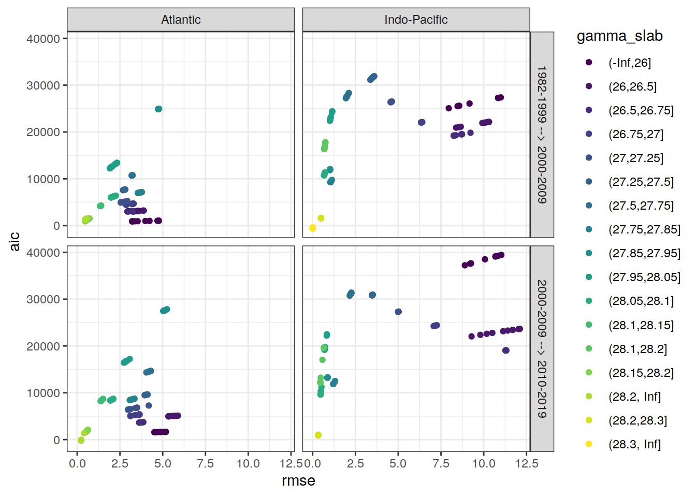

eMLR - model fitting
Jens Daniel Müller and Donghe Zhu
06 July, 2021
Last updated: 2021-07-06
Checks: 7 0
Knit directory: emlr_mod_v_XXX/
This reproducible R Markdown analysis was created with workflowr (version 1.6.2). The Checks tab describes the reproducibility checks that were applied when the results were created. The Past versions tab lists the development history.
Great! Since the R Markdown file has been committed to the Git repository, you know the exact version of the code that produced these results.
Great job! The global environment was empty. Objects defined in the global environment can affect the analysis in your R Markdown file in unknown ways. For reproduciblity it’s best to always run the code in an empty environment.
The command set.seed(20200707) was run prior to running the code in the R Markdown file. Setting a seed ensures that any results that rely on randomness, e.g. subsampling or permutations, are reproducible.
Great job! Recording the operating system, R version, and package versions is critical for reproducibility.
Nice! There were no cached chunks for this analysis, so you can be confident that you successfully produced the results during this run.
Great job! Using relative paths to the files within your workflowr project makes it easier to run your code on other machines.
Great! You are using Git for version control. Tracking code development and connecting the code version to the results is critical for reproducibility.
The results in this page were generated with repository version 5701a0e. See the Past versions tab to see a history of the changes made to the R Markdown and HTML files.
Note that you need to be careful to ensure that all relevant files for the analysis have been committed to Git prior to generating the results (you can use wflow_publish or wflow_git_commit). workflowr only checks the R Markdown file, but you know if there are other scripts or data files that it depends on. Below is the status of the Git repository when the results were generated:
Ignored files:
Ignored: .Rhistory
Ignored: .Rproj.user/
Untracked files:
Untracked: doc_prepare/
Untracked: docs_1982-1999_2000-2012_GC_0.5/
Untracked: docs_1982-1999_2000-2012_GV_1.0/
Untracked: docs_1982-1999_2000-2012_RC_3.1/
Untracked: docs_1982-1999_2000-2012_RC_SO_1.6/
Untracked: docs_1982-1999_2000-2012_RV_3.4/
Untracked: docs_1982-1999_2000-2012_RV_SO_1.8/
Untracked: docs_2000-2009_2010-2019_GC_1.3/
Untracked: docs_2000-2009_2010-2019_GV_1.5/
Untracked: docs_2000-2009_2010-2019_RC_1.5/
Untracked: docs_2000-2009_2010-2019_RV_1.2/
Untracked: docs_2000-2012_2008-2019_GC_0.7/
Untracked: docs_2000-2012_2008-2019_RC_1.0/
Untracked: docs_2000-2012_2008-2019_RV_0.9/
Unstaged changes:
Modified: data/auxillary/params_local.rds
Note that any generated files, e.g. HTML, png, CSS, etc., are not included in this status report because it is ok for generated content to have uncommitted changes.
These are the previous versions of the repository in which changes were made to the R Markdown (analysis/eMLR_model_fitting.Rmd) and HTML (docs/eMLR_model_fitting.html) files. If you’ve configured a remote Git repository (see ?wflow_git_remote), click on the hyperlinks in the table below to view the files as they were in that past version.
| File | Version | Author | Date | Message |
|---|---|---|---|---|
| html | 697aa6d | Donghe-Zhu | 2021-07-06 | Build site. |
| html | d52e2de | Donghe-Zhu | 2021-07-06 | Build site. |
| html | f2bde6b | Donghe-Zhu | 2021-07-06 | Build site. |
| html | 1133f28 | Donghe-Zhu | 2021-07-06 | Build site. |
| html | fe3a1cd | Donghe-Zhu | 2021-07-06 | Build site. |
| html | d9cdf15 | Donghe-Zhu | 2021-07-06 | Build site. |
| html | ee4cd2d | Donghe-Zhu | 2021-07-06 | Build site. |
| html | 93821c1 | Donghe-Zhu | 2021-07-05 | Build site. |
| html | d44db8e | Donghe-Zhu | 2021-07-05 | Build site. |
| html | 20b3436 | Donghe-Zhu | 2021-07-05 | Build site. |
| html | d982ea5 | Donghe-Zhu | 2021-07-05 | Build site. |
| html | 7397e53 | Donghe-Zhu | 2021-07-05 | Build site. |
| html | f2e4805 | Donghe-Zhu | 2021-07-05 | Build site. |
| html | e2d011a | Donghe-Zhu | 2021-07-05 | Build site. |
| html | 85e0349 | Donghe-Zhu | 2021-07-05 | Build site. |
| html | 6ee0146 | Donghe-Zhu | 2021-07-05 | Build site. |
| html | a482a6b | Donghe-Zhu | 2021-07-05 | Build site. |
| html | f59f1b3 | Donghe-Zhu | 2021-07-05 | Build site. |
| html | 116bcab | Donghe-Zhu | 2021-07-04 | Build site. |
| html | cb1c8dc | Donghe-Zhu | 2021-07-04 | Build site. |
| html | c9bdd83 | Donghe-Zhu | 2021-07-04 | Build site. |
| html | 1920ad9 | Donghe-Zhu | 2021-07-04 | Build site. |
| html | 0b02791 | Donghe-Zhu | 2021-06-25 | change random subset files |
| html | caf62d8 | Donghe-Zhu | 2021-06-25 | Build site. |
| html | 90a9da5 | Donghe-Zhu | 2021-06-25 | Build site. |
| html | bb413c8 | Donghe-Zhu | 2021-06-25 | Build site. |
| html | e7a5266 | Donghe-Zhu | 2021-06-24 | Build site. |
| html | 7c57720 | Donghe-Zhu | 2021-06-24 | Build site. |
| html | b5b95a9 | Donghe-Zhu | 2021-06-24 | Build site. |
| html | 472aad4 | Donghe-Zhu | 2021-06-24 | Build site. |
| Rmd | 76ce72b | Donghe-Zhu | 2021-06-24 | local rebuild |
| html | d517836 | Donghe-Zhu | 2021-06-24 | 0 |
| html | 9221bfe | Donghe-Zhu | 2021-06-24 | Build site. |
| html | bff5fbf | Donghe-Zhu | 2021-06-23 | Build site. |
| html | 256a616 | Donghe-Zhu | 2021-06-23 | Build site. |
| html | 00072e2 | Donghe-Zhu | 2021-06-23 | Build site. |
| Rmd | 71d2509 | Donghe-Zhu | 2021-06-23 | local rebuild |
| html | 61cae2b | Donghe-Zhu | 2021-06-20 | 1 |
| html | d20c383 | Donghe-Zhu | 2021-06-18 | Build site. |
| html | b0874a2 | Donghe-Zhu | 2021-06-17 | Build site. |
| html | 72c2f2e | Donghe-Zhu | 2021-06-15 | Build site. |
| html | d97dcb6 | Donghe-Zhu | 2021-06-08 | 1 |
| html | 25dda1d | Donghe-Zhu | 2021-06-08 | Build site. |
| html | bd2bcc3 | Donghe-Zhu | 2021-06-08 | Build site. |
| html | e9b27d7 | Donghe-Zhu | 2021-06-07 | Build site. |
| html | 7ae0d4b | Donghe-Zhu | 2021-06-07 | Build site. |
| html | 325391f | Donghe-Zhu | 2021-06-07 | Build site. |
| html | ed89970 | Donghe-Zhu | 2021-06-07 | Build site. |
| html | df37958 | Donghe-Zhu | 2021-06-07 | 1 |
| html | 812bf63 | Donghe-Zhu | 2021-06-06 | Build site. |
| html | 65c89c8 | Donghe-Zhu | 2021-06-06 | Build site. |
| html | 9baa3b2 | Donghe-Zhu | 2021-06-06 | debug |
| html | b7d99cf | Donghe-Zhu | 2021-06-06 | Build site. |
| html | 5d8fa90 | Donghe-Zhu | 2021-06-06 | Build site. |
| html | dbe2a95 | Donghe-Zhu | 2021-05-28 | Build site. |
| html | d50b039 | Donghe-Zhu | 2021-05-28 | Build site. |
| html | 441ebe5 | Donghe-Zhu | 2021-05-28 | Build site. |
| html | 6262ad3 | Donghe-Zhu | 2021-05-28 | Build site. |
| html | a61aa77 | Donghe-Zhu | 2021-05-28 | Build site. |
| html | b8dbce4 | Donghe-Zhu | 2021-05-28 | Build site. |
| html | 94a833e | Donghe-Zhu | 2021-05-27 | Build site. |
| html | 5e0bd64 | Donghe-Zhu | 2021-05-27 | Build site. |
| html | af1eadd | Donghe-Zhu | 2021-05-27 | Build site. |
| html | 9179bfe | Donghe-Zhu | 2021-05-27 | Build site. |
| html | 28cbe5e | Donghe-Zhu | 2021-05-27 | Build site. |
| html | a618f02 | Donghe-Zhu | 2021-05-27 | Build site. |
| html | 4623e38 | Donghe-Zhu | 2021-05-27 | Build site. |
| html | b81bb49 | Donghe-Zhu | 2021-05-27 | Build site. |
| html | 951e188 | Donghe-Zhu | 2021-05-27 | Build site. |
| html | e377833 | Donghe-Zhu | 2021-05-26 | Build site. |
| Rmd | 896faa0 | Donghe-Zhu | 2021-05-18 | final |
| html | 2705a04 | Donghe-Zhu | 2021-03-28 | Build site. |
| html | cd5f759 | Donghe-Zhu | 2021-03-28 | Build site. |
| Rmd | 347fb44 | Donghe-Zhu | 2021-03-28 | local rebuild |
| html | 75dda4d | Donghe-Zhu | 2021-03-27 | Build site. |
| html | 0b19f6e | Donghe-Zhu | 2021-03-27 | Build site. |
| html | e2704ca | Donghe-Zhu | 2021-03-27 | Build site. |
| Rmd | b1706de | Donghe-Zhu | 2021-03-27 | local rebuild |
| html | 3061a0b | Donghe-Zhu | 2021-03-27 | Build site. |
| html | b883157 | Donghe-Zhu | 2021-03-27 | Build site. |
| html | 0c20513 | Donghe-Zhu | 2021-03-26 | Build site. |
| html | d19654d | Donghe-Zhu | 2021-03-26 | Build site. |
| Rmd | 921c9db | Donghe-Zhu | 2021-03-26 | local rebuild |
| html | 6c53dbf | Donghe-Zhu | 2021-03-25 | Build site. |
| Rmd | 195db95 | Donghe-Zhu | 2021-03-24 | local rebuild |
| html | 1914a11 | Donghe-Zhu | 2021-03-24 | Build site. |
| Rmd | e32af14 | Donghe-Zhu | 2021-03-24 | local rebuild |
| html | 8be810e | Donghe-Zhu | 2021-03-23 | Build site. |
| Rmd | 85274db | Donghe-Zhu | 2021-03-23 | local rebuild |
| html | bf19764 | Donghe-Zhu | 2021-03-22 | Build site. |
| html | 3ec9d3d | Donghe-Zhu | 2021-03-22 | Build site. |
| Rmd | 073fa6a | Donghe-Zhu | 2021-03-22 | local rebuild |
| html | 134ace1 | Donghe-Zhu | 2021-03-22 | Build site. |
| html | f6d70a4 | Donghe-Zhu | 2021-03-22 | Build site. |
| html | 183443b | Donghe-Zhu | 2021-03-21 | Build site. |
| Rmd | adca794 | Donghe-Zhu | 2021-03-21 | local rebuild |
| html | 2e6976b | Donghe-Zhu | 2021-03-21 | Build site. |
| Rmd | 4e7de35 | Donghe-Zhu | 2021-03-21 | local rebuild |
| html | 51a42bd | Donghe-Zhu | 2021-03-16 | Build site. |
| html | f745381 | Donghe-Zhu | 2021-03-16 | Build site. |
| html | aecbf75 | Donghe-Zhu | 2021-03-14 | Build site. |
| html | 1b2a0c2 | Donghe-Zhu | 2021-03-14 | Build site. |
| html | 6733e48 | Donghe-Zhu | 2021-03-12 | Build site. |
| html | ba71e6a | Donghe-Zhu | 2021-03-12 | Build site. |
| html | 9dbf5bd | Donghe-Zhu | 2021-03-11 | Build site. |
| html | a49df30 | Donghe-Zhu | 2021-03-11 | Build site. |
| html | b3348a5 | Donghe-Zhu | 2021-03-11 | Build site. |
| Rmd | 026c061 | Donghe-Zhu | 2021-03-11 | local rebuild |
| html | 1c24ff7 | Donghe-Zhu | 2021-03-10 | Build site. |
| Rmd | dbd8ff8 | Donghe-Zhu | 2021-03-10 | local rebuild |
| html | 94ce5a8 | Donghe-Zhu | 2021-03-10 | Build site. |
| html | db33928 | Donghe-Zhu | 2021-03-10 | Build site. |
| html | 3d1f470 | Donghe-Zhu | 2021-03-10 | Build site. |
| html | 9b7bc66 | Donghe-Zhu | 2021-03-10 | Build site. |
| Rmd | 498be1d | Donghe-Zhu | 2021-03-10 | local rebuild |
| html | 4168b43 | Donghe-Zhu | 2021-03-10 | Build site. |
| html | 5365f80 | Donghe-Zhu | 2021-03-10 | Build site. |
| html | 2b6c392 | Donghe-Zhu | 2021-03-10 | Build site. |
| html | 9f58753 | Donghe-Zhu | 2021-03-10 | Build site. |
| Rmd | e255177 | Donghe-Zhu | 2021-03-10 | local rebuild |
| html | f2a7146 | Donghe-Zhu | 2021-03-10 | Build site. |
| html | fd528ed | Donghe-Zhu | 2021-03-10 | Build site. |
| html | 9d5a62c | Donghe-Zhu | 2021-03-10 | Build site. |
| Rmd | 09b27ef | Donghe-Zhu | 2021-03-10 | local rebuild |
| html | 5d1e70b | Donghe-Zhu | 2021-03-10 | Build site. |
| Rmd | 6125b2d | Donghe-Zhu | 2021-03-10 | local rebuild |
| html | 2093979 | Donghe-Zhu | 2021-03-10 | Build site. |
| Rmd | 558d285 | Donghe-Zhu | 2021-03-10 | local rebuild |
| html | b865899 | Donghe-Zhu | 2021-03-10 | Build site. |
| html | cc2a956 | Donghe-Zhu | 2021-03-10 | Build site. |
| Rmd | 2a633bd | Donghe-Zhu | 2021-03-10 | local rebuild |
| html | 60689fb | Donghe-Zhu | 2021-03-10 | Build site. |
| html | 9230b52 | Donghe-Zhu | 2021-03-10 | Build site. |
| html | dba33c8 | Donghe-Zhu | 2021-03-09 | Build site. |
| Rmd | 6a60e02 | Donghe-Zhu | 2021-03-09 | local rebuild |
| html | 17f1c4a | Donghe-Zhu | 2021-03-09 | Build site. |
| Rmd | 4a4a400 | Donghe-Zhu | 2021-03-09 | local rebuild |
| html | c024d1a | Donghe-Zhu | 2021-03-09 | Build site. |
| Rmd | 34744ec | Donghe-Zhu | 2021-03-09 | local rebuild |
| html | 02f7242 | Donghe-Zhu | 2021-03-09 | Build site. |
| html | 6f50bc6 | Donghe-Zhu | 2021-03-09 | Build site. |
| Rmd | 88f0729 | Donghe-Zhu | 2021-03-09 | local rebuild |
| html | 1691156 | Donghe-Zhu | 2021-03-08 | Build site. |
| html | c0ceaf8 | Donghe-Zhu | 2021-03-08 | Build site. |
| html | 058e0a1 | Donghe-Zhu | 2021-03-08 | Build site. |
| html | 112dea0 | Donghe-Zhu | 2021-03-08 | Build site. |
| html | 1843412 | Donghe-Zhu | 2021-03-08 | Build site. |
| Rmd | d709f6c | Donghe-Zhu | 2021-03-08 | local rebuild |
| html | 65b0cef | Donghe-Zhu | 2021-03-07 | Build site. |
| html | 4083a6c | Donghe-Zhu | 2021-03-07 | Build site. |
| html | 3fbbfa4 | Donghe-Zhu | 2021-03-07 | Build site. |
| html | 627c8fb | Donghe-Zhu | 2021-03-07 | Build site. |
| html | 3607f4d | Donghe-Zhu | 2021-03-07 | Build site. |
| html | 9ef3222 | Donghe-Zhu | 2021-03-05 | Build site. |
| Rmd | 2be54f9 | Donghe-Zhu | 2021-03-05 | local rebuild |
| html | 8c1e978 | Donghe-Zhu | 2021-03-05 | Build site. |
| html | 865f68c | Donghe-Zhu | 2021-03-05 | Build site. |
| html | ee69bc1 | Donghe-Zhu | 2021-03-05 | Build site. |
| html | a79291f | Donghe-Zhu | 2021-03-05 | Build site. |
| html | e8c6f30 | Donghe-Zhu | 2021-03-04 | Build site. |
| html | 59288fe | Donghe-Zhu | 2021-03-04 | Build site. |
| html | 731abc8 | Donghe-Zhu | 2021-03-04 | Build site. |
| html | e2a5a33 | Donghe-Zhu | 2021-03-04 | Build site. |
| html | c7892c1 | Donghe-Zhu | 2021-03-04 | Build site. |
| html | 924430b | Donghe-Zhu | 2021-03-03 | Build site. |
| html | 0d0bca1 | Donghe-Zhu | 2021-03-03 | Build site. |
| html | cb63c16 | Donghe-Zhu | 2021-03-03 | Build site. |
| html | ffda45a | Donghe-Zhu | 2021-03-03 | Build site. |
| html | 691ba81 | Donghe-Zhu | 2021-03-03 | Build site. |
| html | c5e45a2 | Donghe-Zhu | 2021-03-03 | Build site. |
| html | 89c3e58 | Donghe-Zhu | 2021-03-03 | Build site. |
| html | c407a50 | Donghe-Zhu | 2021-03-03 | Build site. |
| html | c911669 | Donghe-Zhu | 2021-03-03 | Build site. |
| Rmd | e1f9d21 | Donghe-Zhu | 2021-03-03 | local rebuild |
| html | b71c719 | Donghe-Zhu | 2021-03-01 | Build site. |
| html | 13666ca | Donghe-Zhu | 2021-03-01 | Build site. |
| Rmd | c3195f4 | Donghe-Zhu | 2021-03-01 | local rebuild |
| html | c6e60fe | Donghe-Zhu | 2021-03-01 | Build site. |
| Rmd | 8ef147d | Donghe-Zhu | 2021-03-01 | local rebuild |
| html | 7a388f7 | Donghe-Zhu | 2021-03-01 | Build site. |
| html | 799e913 | Donghe-Zhu | 2021-03-01 | Build site. |
| Rmd | aa780a7 | Donghe-Zhu | 2021-03-01 | local rebuild |
| html | 66ff99f | Donghe-Zhu | 2021-03-01 | Build site. |
| html | ac9bb7a | Donghe-Zhu | 2021-02-28 | Build site. |
| html | efdc047 | Donghe-Zhu | 2021-02-28 | Build site. |
| html | e9a7418 | Donghe-Zhu | 2021-02-28 | Build site. |
| Rmd | eac1b0e | Donghe-Zhu | 2021-02-28 | local rebuild |
| html | e152917 | Donghe-Zhu | 2021-02-28 | Build site. |
| html | feb991c | Donghe-Zhu | 2021-02-27 | Build site. |
| Rmd | 4563314 | Donghe-Zhu | 2021-02-27 | local rebuild |
| html | 287123c | Donghe-Zhu | 2021-02-27 | Build site. |
| Rmd | 764a9c2 | Donghe-Zhu | 2021-02-27 | local rebuild |
| html | 54d5b5b | Donghe-Zhu | 2021-02-27 | Build site. |
| Rmd | 2e836bf | Donghe-Zhu | 2021-02-27 | local rebuild |
| html | 330f064 | Donghe-Zhu | 2021-02-27 | Build site. |
| Rmd | f360282 | Donghe-Zhu | 2021-02-27 | local rebuild |
| html | adbc9bc | Donghe-Zhu | 2021-02-27 | Build site. |
| Rmd | a8a8f9c | Donghe-Zhu | 2021-02-27 | local rebuild |
| html | 5937141 | Donghe-Zhu | 2021-02-27 | Build site. |
| Rmd | 5f0bfca | Donghe-Zhu | 2021-02-27 | local rebuild |
| html | 4414bbf | Donghe-Zhu | 2021-02-27 | Build site. |
| html | a265efb | Donghe-Zhu | 2021-02-27 | Build site. |
| html | 19edd1e | Donghe-Zhu | 2021-02-27 | Build site. |
| Rmd | 1ae5bb4 | Donghe-Zhu | 2021-02-27 | local rebuild |
| html | f20483f | Donghe-Zhu | 2021-02-26 | Build site. |
| html | 6a2c7b3 | Donghe-Zhu | 2021-02-25 | Build site. |
| html | 02b976d | Donghe-Zhu | 2021-02-24 | Build site. |
| html | 354c224 | Donghe-Zhu | 2021-02-24 | Build site. |
| Rmd | d910d39 | Donghe-Zhu | 2021-02-24 | local rebuild |
| html | 1a0a88a | Donghe-Zhu | 2021-02-24 | Build site. |
| Rmd | 663e891 | Donghe-Zhu | 2021-02-24 | local rebuild |
| html | 57f701e | Donghe-Zhu | 2021-02-24 | Build site. |
| html | 06f3149 | Donghe-Zhu | 2021-02-16 | Build site. |
| html | 401eab3 | Donghe-Zhu | 2021-02-15 | Build site. |
| html | e3bba84 | Donghe-Zhu | 2021-02-15 | Build site. |
| html | 5dce4b1 | Donghe-Zhu | 2021-02-15 | Build site. |
| Rmd | 35b0f2e | Donghe-Zhu | 2021-02-15 | local rebuild |
| html | 4469a0c | Donghe-Zhu | 2021-02-13 | Build site. |
| Rmd | 8186d57 | Donghe-Zhu | 2021-02-10 | apply nr_obs |
| html | 5ae6a69 | Donghe-Zhu | 2021-02-10 | Build site. |
| Rmd | eeb6557 | Donghe-Zhu | 2021-02-10 | local rebuild |
| html | 05385dc | Donghe-Zhu | 2021-02-10 | Build site. |
| html | f791ae4 | Donghe-Zhu | 2021-02-09 | Build site. |
| html | f71ae34 | Donghe-Zhu | 2021-02-09 | Build site. |
| html | c011832 | Donghe-Zhu | 2021-02-09 | Build site. |
| html | a145fa7 | Donghe-Zhu | 2021-02-09 | Build site. |
| Rmd | 37a41c8 | Donghe-Zhu | 2021-02-09 | local rebuild |
| html | c344e42 | Donghe-Zhu | 2021-02-08 | Build site. |
| Rmd | 8f5fa79 | Donghe-Zhu | 2021-02-08 | local rebuild |
| html | 2f095d7 | Donghe-Zhu | 2021-02-07 | Build site. |
| html | 2305044 | Donghe-Zhu | 2021-02-07 | Build site. |
| Rmd | c3638c1 | Donghe-Zhu | 2021-02-07 | local rebuild |
| html | 1fad5f1 | Donghe-Zhu | 2021-02-07 | Build site. |
| html | ca03c39 | Donghe-Zhu | 2021-02-07 | Build site. |
| html | e2ffc14 | Donghe-Zhu | 2021-02-05 | Build site. |
| html | cd7c52c | Donghe-Zhu | 2021-02-04 | Build site. |
| Rmd | bcf91a8 | jens-daniel-mueller | 2021-02-04 | separate MLR tables, added plot residuals vs location |
| html | bcf84f4 | Donghe-Zhu | 2021-02-02 | Build site. |
| html | a518739 | Donghe-Zhu | 2021-02-01 | Build site. |
| html | 61666de | Donghe-Zhu | 2021-01-31 | Build site. |
| html | 865b582 | Donghe-Zhu | 2021-01-31 | Build site. |
| html | 3e68089 | Donghe-Zhu | 2021-01-31 | Build site. |
| html | ecf335c | Donghe-Zhu | 2021-01-31 | Build site. |
| html | a618965 | Donghe-Zhu | 2021-01-31 | Build site. |
| html | 59e006e | Donghe-Zhu | 2021-01-31 | Build site. |
| html | a1c8f87 | Donghe-Zhu | 2021-01-31 | Build site. |
| html | ae5c18f | Donghe-Zhu | 2021-01-31 | Build site. |
| html | b50fe52 | Donghe-Zhu | 2021-01-31 | Build site. |
| Rmd | ac99ae5 | jens-daniel-mueller | 2021-01-29 | code review |
| html | ac99ae5 | jens-daniel-mueller | 2021-01-29 | code review |
| html | b5bdcaf | Donghe-Zhu | 2021-01-29 | Build site. |
| Rmd | b234505 | Donghe-Zhu | 2021-01-29 | MLR approach across all depth |
| html | 442010d | Donghe-Zhu | 2021-01-29 | Build site. |
| Rmd | e67e7dd | Donghe-Zhu | 2021-01-29 | surface equilibrium approach across all latitudes irrespective of gamma |
| html | 372adf5 | Donghe-Zhu | 2021-01-29 | Build site. |
| html | af8788e | Donghe-Zhu | 2021-01-29 | Build site. |
| html | 21c91c9 | Donghe-Zhu | 2021-01-29 | Build site. |
| html | eded038 | Donghe-Zhu | 2021-01-29 | Build site. |
| html | 541d4dd | Donghe-Zhu | 2021-01-29 | Build site. |
| html | 6a75576 | Donghe-Zhu | 2021-01-28 | Build site. |
| html | 16fba40 | Donghe-Zhu | 2021-01-28 | Build site. |
| Rmd | aecf0c6 | Donghe-Zhu | 2021-01-28 | diagnostic ploting |
| Rmd | a02684e | Donghe-Zhu | 2021-01-28 | error |
| Rmd | 4584be9 | Donghe-Zhu | 2021-01-28 | latest |
| html | 12bc567 | Donghe-Zhu | 2021-01-27 | Build site. |
| html | ceed31b | Donghe-Zhu | 2021-01-27 | Build site. |
| html | 342402d | Donghe-Zhu | 2021-01-27 | Build site. |
| html | 5bad5c2 | Donghe-Zhu | 2021-01-27 | Build site. |
| Rmd | c2c9529 | Donghe-Zhu | 2021-01-27 | random subsetting based on lat |
| html | 61efb56 | Donghe-Zhu | 2021-01-25 | Build site. |
| html | 48f638e | Donghe-Zhu | 2021-01-25 | Build site. |
| html | c1cec47 | Donghe-Zhu | 2021-01-25 | Build site. |
| html | 05ffb0c | Donghe-Zhu | 2021-01-25 | Build site. |
| html | 8b97165 | Donghe-Zhu | 2021-01-25 | Build site. |
| html | c569946 | Donghe-Zhu | 2021-01-24 | Build site. |
| html | a2f0d56 | Donghe-Zhu | 2021-01-23 | Build site. |
| html | 28509fc | Donghe-Zhu | 2021-01-23 | Build site. |
| html | 4c28e4a | Donghe-Zhu | 2021-01-22 | Build site. |
| html | 24cc264 | jens-daniel-mueller | 2021-01-22 | cleaned /docs before creating copies |
| html | 88eb28f | Donghe-Zhu | 2021-01-21 | Build site. |
| html | 2679490 | Donghe-Zhu | 2021-01-21 | Build site. |
| html | 7891955 | Donghe-Zhu | 2021-01-21 | Build site. |
| html | d4cf1cb | Donghe-Zhu | 2021-01-21 | Build site. |
| Rmd | 167eeec | Donghe-Zhu | 2021-01-21 | surface DIC calculation with atmospheric equilibrium option |
| html | 1f3e5b6 | jens-daniel-mueller | 2021-01-20 | Build site. |
| html | 0e7bdf1 | jens-daniel-mueller | 2021-01-15 | cleaning template repository |
| html | 73cbef3 | jens-daniel-mueller | 2021-01-15 | Build site. |
| html | 4571843 | jens-daniel-mueller | 2021-01-14 | revision and html deleted for template copying |
| html | 23151cd | jens-daniel-mueller | 2021-01-14 | Build site. |
| html | b3564aa | jens-daniel-mueller | 2021-01-14 | Build site. |
| html | 8d032c3 | jens-daniel-mueller | 2021-01-14 | Build site. |
| html | 022871c | Donghe-Zhu | 2021-01-13 | Build site. |
| Rmd | d44f36f | Donghe-Zhu | 2021-01-13 | reorder analysis final |
| html | 17dee1d | jens-daniel-mueller | 2021-01-13 | Build site. |
| Rmd | 9e04fd7 | jens-daniel-mueller | 2021-01-13 | local rebuild after revision |
| html | a076226 | Donghe-Zhu | 2021-01-11 | Build site. |
| Rmd | 52eff18 | Donghe-Zhu | 2021-01-09 | Implemet model_run and subsetting |
| html | 7cdea0c | jens-daniel-mueller | 2021-01-06 | Build site. |
| Rmd | b5934dd | jens-daniel-mueller | 2021-01-06 | local rebuild after revision |
| html | fa85b93 | jens-daniel-mueller | 2021-01-06 | Build site. |
| html | e5cb81a | Donghe-Zhu | 2021-01-05 | Build site. |
| Rmd | 608cc45 | Donghe-Zhu | 2021-01-05 | modification of analysis |
| html | a499f10 | Donghe-Zhu | 2021-01-05 | Build site. |
| Rmd | 715bdb4 | Donghe-Zhu | 2021-01-02 | model modification |
| html | fb8a752 | Donghe-Zhu | 2020-12-23 | Build site. |
| Rmd | 82e3c9c | Donghe-Zhu | 2020-12-23 | first build after creating model template |
| html | 8fae0b2 | Donghe-Zhu | 2020-12-21 | Build site. |
| Rmd | 00a1322 | Donghe-Zhu | 2020-12-21 | first build after creating model template |
| Rmd | d73ae35 | Donghe-Zhu | 2020-12-21 | first version with lm error |
| html | c8b76b3 | jens-daniel-mueller | 2020-12-19 | Build site. |
| Rmd | b5fedce | jens-daniel-mueller | 2020-12-19 | first build after creating model template |
| Rmd | 8e8abf5 | Jens Müller | 2020-12-18 | Initial commit |
1 Required data
Required are:
- cleaned and prepared GLODAP-based synthetic model subsetting file
GLODAP <-
read_csv(paste(path_version_data,
"GLODAPv2.2020_MLR_fitting_ready.csv",
sep = ""))2 Predictor combinations
Find all possible combinations of following considered predictor variables:
- sal, temp, aou, nitrate, silicate, phosphate, phosphate_star
# the following code is a workaround to find all predictor combinations
# using the olsrr package and fit all models for one era, slab, and basin
i_basin <- unique(GLODAP$basin)[1]
i_era <- unique(GLODAP$era)[1]
# subset one basin and era for fitting
GLODAP_basin_era <- GLODAP %>%
filter(basin == i_basin, era == i_era)
i_gamma_slab <- unique(GLODAP_basin_era$gamma_slab)[1]
print(i_gamma_slab)
# subset one gamma slab
GLODAP_basin_era_slab <- GLODAP_basin_era %>%
filter(gamma_slab == i_gamma_slab)
# fit the full linear model, i.e. all predictor combinations
lm_full <- lm(paste(
params_local$MLR_target,
paste(params_local$MLR_predictors, collapse = " + "),
sep = " ~ "
),
data = GLODAP_basin_era_slab)
# fit linear models for all possible predictor combinations
# unfortunately, this functions does not provide model coefficients (yet)
lm_all <- ols_step_all_possible(lm_full)
# convert to tibble
lm_all <- as_tibble(lm_all)
# extract relevant columns and format model formula
lm_all <- lm_all %>%
select(n, predictors) %>%
mutate(lm_coeff = str_replace_all(predictors, " ", " + "),
lm_coeff = paste(params_local$MLR_target, "~", lm_coeff))
# remove certain predictor combinations
# lm_rm_ph <- lm_all %>%
# filter(str_detect(lm_coeff, "phosphate_star")) %>%
# mutate(lm_coeff_filter = str_remove(lm_coeff, "phosphate_star")) %>%
# filter(
# str_detect(lm_coeff_filter, "oxygen") &
# str_detect(lm_coeff_filter, "phosphate")
# )
# lm_rm_si <- lm_all %>%
# filter(str_detect(lm_coeff, "silicate_star")) %>%
# mutate(lm_coeff_filter = str_remove(lm_coeff, "silicate_star")) %>%
# filter(str_detect(lm_coeff_filter, "silicate"))
# lm_rm_o2 <- lm_all %>%
# filter(str_detect(lm_coeff, "phosphate_star")) %>%
# mutate(lm_coeff_filter = str_remove(lm_coeff, "phosphate_star")) %>%
# filter(
# str_detect(lm_coeff_filter, "phosphate") &
# str_detect(lm_coeff_filter, "oxygen")
# )
# lm_rm <- bind_rows(lm_rm_ph, lm_rm_o2) %>%
# select(-lm_coeff_filter) %>%
# unique()
# lm_rm <- lm_rm_ph %>%
# select(-lm_coeff_filter) %>%
# unique()
#
# lm_all <- anti_join(lm_all, lm_rm)
# remove temp sal predictor combination
# lm_all <- lm_all %>%
# # filter(!(
# # str_detect(lm_coeff, "temp") &
# # str_detect(lm_coeff, "phosphate_star")
# # )) %>%
# mutate(lm_coeff_filter = str_remove(lm_coeff, "phosphate_star")) %>%
# filter(!(str_detect(lm_coeff_filter, "nitrate") &
# str_detect(lm_coeff_filter, "phosphate")
# )) %>%
# filter(!(
# str_detect(lm_coeff_filter, "temp") &
# str_detect(lm_coeff_filter, "sal")
# )) %>%
# # filter(!(
# # str_detect(lm_coeff_filter, "oxygen") &
# # str_detect(lm_coeff_filter, "aou")
# # )) %>%
# select(-lm_coeff_filter)
# remove helper objects
rm(
i_gamma_slab,
i_era,
i_basin,
GLODAP_basin_era,
GLODAP_basin_era_slab,
lm_full,
lm_rm_ph,
lm_rm_si,
lm_rm_o2,
lm_rm
)
# lm_full <- lm(paste(
# params_local$MLR_target,
# paste(params_local$MLR_predictors, collapse = " + "),
# sep = " ~ "
# ),
# data = GLODAP_basin_era_slab)
#
# lm_full <-
# loess(
# cstar_tref ~ sal + temp + aou + phosphate,
# span = 0.1,
# degree = 1,
# data = GLODAP_basin_era_slab
# )3 Apply predictor threshold
Select combinations with a total number of predictors in the range:
- Minimum: 2
- Maximum: 5
lm_all <- lm_all %>%
filter(n >= params_local$MLR_predictors_min,
n <= params_local$MLR_predictors_max)This results in a total number of MLR models of:
- 112
4 Fit all models
Individual linear regression models were fitted for the chosen target variable:
- cstar_tref
as a function of each predictor combination. Fitting was performed separately within each basin, era, and slab. Model diagnostics, such as the root mean squared error (RMSE), were calculated for each fitted model.
# loop across all basins, era, gamma slabs, and MLRs
# fit all MLR models
for (i_basin in unique(GLODAP$basin)) {
for (i_era in unique(GLODAP$era)) {
#i_basin <- unique(GLODAP$basin)[1]
#i_era <- unique(GLODAP$era)[1]
print(i_basin)
print(i_era)
GLODAP_basin_era <- GLODAP %>%
filter(basin == i_basin, era == i_era)
for (i_gamma_slab in unique(GLODAP_basin_era$gamma_slab)) {
#i_gamma_slab <- unique(GLODAP_basin_era$gamma_slab)[1]
print(i_gamma_slab)
GLODAP_basin_era_slab <- GLODAP_basin_era %>%
filter(gamma_slab == i_gamma_slab)
# number of observations used for each fitting model
i_nr_obs = nrow(GLODAP_basin_era_slab)
for (i_predictors in unique(lm_all$predictors)) {
#i_predictors <- unique(lm_all$predictors)[100]
# extract one model definition
i_lm <- lm_all %>%
filter(predictors == i_predictors) %>%
select(lm_coeff) %>%
pull()
# extract number of predictors
i_n_predictors <- lm_all %>%
filter(predictors == i_predictors) %>%
select(n) %>%
pull()
if (i_nr_obs > i_n_predictors) {
# fit model
if (params_local$MLR_type == "rlm") {
i_lm_fit <- MASS::rlm(as.formula(i_lm),
data = GLODAP_basin_era_slab)
}
if (params_local$MLR_type == "lm") {
i_lm_fit <- lm(as.formula(i_lm),
data = GLODAP_basin_era_slab)
}
# find max predictor correlation
i_cor_max <- GLODAP_basin_era_slab %>%
select(!!!syms(str_split(i_predictors, " ",
simplify = TRUE))) %>%
correlate(quiet = TRUE) %>%
select(-term) %>%
abs() %>%
max(na.rm = TRUE)
# calculate root mean squared error
i_rmse <- sqrt(c(crossprod(i_lm_fit$residuals)) /
length(i_lm_fit$residuals))
# calculate maximum residual
i_resid_max <- max(abs(i_lm_fit$residuals))
# calculate Akaike information criterion aic
i_aic <- AIC(i_lm_fit)
# calculate max VIF
if (is.na(max(i_lm_fit$coefficients))){
i_vif_max <- as.double("NA")
} else{
i_vif_max <- max(vif(i_lm_fit))
}
# collect model coefficients and diagnostics
coefficients <- tidy(i_lm_fit)
coefficients <- coefficients %>%
mutate(
basin = i_basin,
era = i_era,
gamma_slab = i_gamma_slab,
model = i_lm,
nr_obs = i_nr_obs,
rmse = i_rmse,
aic = i_aic,
vif_max = i_vif_max,
resid_max = i_resid_max,
n_predictors = i_n_predictors,
na_predictor = anyNA(coefficients$estimate),
cor_max = i_cor_max
)
if (exists("lm_all_fitted")) {
lm_all_fitted <- bind_rows(lm_all_fitted, coefficients)
}
if (!exists("lm_all_fitted")) {
lm_all_fitted <- coefficients
}
}
}
}
}
}
rm(
i_lm_fit,
coefficients,
i_rmse,
GLODAP_basin_era,
GLODAP_basin_era_slab,
i_lm,
i_basin,
i_era,
i_gamma_slab,
i_nr_obs,
i_predictors,
i_aic,
i_vif_max,
i_n_predictors,
i_resid_max
)5 Prepare coeffcients
Coefficients are prepared for the mapping of Cant and the chosen target variable.
5.1 Formatting
# lm_all_fitted <- lm_all_fitted_1
# lm_all_fitted <-
# read_csv(paste(path_version_data,
# "lm_all_fitted.csv",
# sep = ""))
# select relevant columns
lm_all_fitted <- lm_all_fitted %>%
select(
basin,
gamma_slab,
era,
model,
nr_obs,
n_predictors,
term,
estimate,
rmse,
aic,
vif_max,
resid_max,
na_predictor,
cor_max
)
# set coefficient to zero if not fitted (=NA)
lm_all_fitted <- lm_all_fitted %>%
mutate(estimate = if_else(is.na(estimate), 0, estimate))
# Prepare model coefficients for mapping of target variable
lm_all_fitted_wide <- lm_all_fitted %>%
pivot_wider(
values_from = estimate,
names_from = term,
names_prefix = "coeff_",
values_fill = 0
)5.2 Predictor selection
Within each basin and slab, the following number of best linear regression models was selected:
- 10
The criterion used to select the best models was:
- rmse
The criterion was summed up for two adjacent eras, and the models with lowest summed values were selected.
Please note, that currently the lm() function produces NAs for some predictors. It is not yet entirely clear when this happens, but presumably it is caused by some form of collinearity between predictors, such that including another predictor does not help to explain the target variable any better. The issues also expresses as exactly identical rmse values of different models. As an interim solution, models with fitted NA predictors were not included.
# remove models with predictors fitted as NA
lm_all_fitted_wide <- lm_all_fitted_wide %>%
filter(na_predictor == FALSE)5.3 VIF threshold
To avoid multicollinearity among predictors, models were excluded with a VIF above:
- 1000
After removing models affected by multicollinearity, the targeted number of MLRs (10) was undercut in following fitting units:
# remove models with predictors fitted as NA
lm_all_fitted_wide <- lm_all_fitted_wide %>%
filter(vif_max <= params_local$vif_max)
# lm_all_fitted_wide_check <- lm_all_fitted_wide %>%
# group_by(era, basin, gamma_slab) %>%
# count()
# filter(n < params_local$MLR_number)# calculate RMSE sum for adjacent eras
lm_all_fitted_wide_eras <- lm_all_fitted_wide %>%
select(basin, gamma_slab, n_predictors, model, era, nr_obs, rmse, aic, vif_max, resid_max) %>%
arrange(era) %>%
group_by(basin, gamma_slab, model) %>%
mutate(
eras = paste(lag(era), era, sep = " --> "),
rmse_sum = rmse + lag(rmse),
rmse_lag = lag(rmse),
aic_sum = aic + lag(aic),
vif_max_sum = vif_max + lag(vif_max)
) %>%
ungroup() %>%
select(-c(era)) %>%
drop_na() %>%
filter(eras != "1982-1999 --> 2010-2019",
eras != "1982-1999 --> 2008-2019")
#filter tripairs
lm_all_fitted_wide_eras <- lm_all_fitted_wide_eras %>%
mutate(rmse = round(rmse, digits = 7), rmse_lag = round(rmse_lag, digits = 7)) %>%
group_by(basin, gamma_slab, eras, rmse) %>%
sample_n(1) %>%
ungroup()
# calculate rank for each era
lm_all_fitted_wide_eras <- lm_all_fitted_wide_eras %>%
group_by(eras, basin, gamma_slab) %>%
mutate(rank = rank(rmse, ties.method="first"),
rank_sum = rank + rank(rmse_lag, ties.method="first")) %>%
ungroup()
# subset models with lowest summed criterion
# chose which criterion is applied
if (params_local$MLR_criterion == "aic") {
lm_best <- lm_all_fitted_wide_eras %>%
group_by(basin, gamma_slab, eras) %>%
slice_min(order_by = aic_sum,
with_ties = FALSE,
n = params_local$MLR_number) %>%
ungroup() %>%
arrange(basin, gamma_slab, eras, aic_sum)
} else if (params_local$MLR_criterion == "rmse") {
lm_best <- lm_all_fitted_wide_eras %>%
group_by(basin, gamma_slab, eras) %>%
slice_min(order_by = rmse_sum,
with_ties = FALSE,
n = params_local$MLR_number) %>%
ungroup() %>%
arrange(basin, gamma_slab, eras, rmse_sum)
} else {
lm_best <- lm_all_fitted_wide_eras %>%
group_by(basin, gamma_slab, eras) %>%
slice_min(order_by = rank_sum,
with_ties = FALSE,
n = params_local$MLR_number) %>%
ungroup() %>%
arrange(basin, gamma_slab, eras, rank_sum)
}5.4 RMSE tables
5.4.1 per model
lm_best %>%
kable() %>%
add_header_above() %>%
kable_styling() %>%
scroll_box(width = "100%", height = "400px")| basin | gamma_slab | n_predictors | model | nr_obs | rmse | aic | vif_max | resid_max | eras | rmse_sum | rmse_lag | aic_sum | vif_max_sum | rank | rank_sum |
|---|---|---|---|---|---|---|---|---|---|---|---|---|---|---|---|
| Atlantic | (-Inf,26] | 5 | cstar_tref ~ sal + temp + aou + silicate + phosphate | 140 | 3.6265697 | 772.02321 | 28.170142 | 10.0149831 | 1982-1999 –> 2000-2012 | 5.332778 | 1.7062087 | 1051.6601 | 50.386272 | 2 | 8 |
| Atlantic | (-Inf,26] | 5 | cstar_tref ~ sal + temp + nitrate + phosphate + phosphate_star | 140 | 3.8186112 | 786.47109 | 65.314344 | 12.1059671 | 1982-1999 –> 2000-2012 | 5.504476 | 1.6858651 | 1064.4767 | 81.850156 | 10 | 13 |
| Atlantic | (-Inf,26] | 5 | cstar_tref ~ sal + temp + silicate + phosphate + phosphate_star | 140 | 3.8741141 | 790.51155 | 63.271534 | 10.1055894 | 1982-1999 –> 2000-2012 | 5.553535 | 1.6794207 | 1067.9962 | 74.275609 | 12 | 13 |
| Atlantic | (-Inf,26] | 5 | cstar_tref ~ sal + aou + silicate + phosphate + phosphate_star | 140 | 3.7374228 | 780.45375 | 25.704634 | 11.7039854 | 1982-1999 –> 2000-2012 | 5.586994 | 1.8495710 | 1071.0631 | 95.887351 | 8 | 24 |
| Atlantic | (-Inf,26] | 5 | cstar_tref ~ sal + aou + nitrate + phosphate + phosphate_star | 140 | 3.8572512 | 789.29014 | 12.674404 | 13.2754640 | 1982-1999 –> 2000-2012 | 5.715328 | 1.8580764 | 1080.5235 | 99.066498 | 11 | 28 |
| Atlantic | (-Inf,26] | 5 | cstar_tref ~ sal + temp + nitrate + silicate + phosphate_star | 140 | 4.0402024 | 802.26533 | 66.927172 | 9.0161985 | 1982-1999 –> 2000-2012 | 5.720905 | 1.6807025 | 1079.8538 | 79.817376 | 14 | 16 |
| Atlantic | (-Inf,26] | 5 | cstar_tref ~ sal + temp + aou + silicate + phosphate_star | 140 | 4.0423027 | 802.41085 | 99.610770 | 8.9345569 | 1982-1999 –> 2000-2012 | 5.730219 | 1.6879164 | 1080.5818 | 111.496547 | 15 | 19 |
| Atlantic | (-Inf,26] | 5 | cstar_tref ~ sal + temp + aou + nitrate + phosphate | 140 | 4.2000427 | 813.12930 | 15.248103 | 13.5412523 | 1982-1999 –> 2000-2012 | 5.914686 | 1.7146436 | 1093.4369 | 41.152021 | 30 | 37 |
| Atlantic | (-Inf,26] | 5 | cstar_tref ~ sal + temp + aou + nitrate + silicate | 140 | 4.1850808 | 812.13007 | 52.864998 | 10.3961298 | 1982-1999 –> 2000-2012 | 5.998990 | 1.8139088 | 1100.0915 | 242.395186 | 28 | 40 |
| Atlantic | (-Inf,26] | 4 | cstar_tref ~ sal + temp + silicate + phosphate_star | 140 | 4.0423219 | 800.41218 | 53.913922 | 8.9457096 | 1982-1999 –> 2000-2012 | 5.999668 | 1.9573457 | 1096.7240 | 62.068533 | 16 | 37 |
| Atlantic | (-Inf,26] | 5 | cstar_tref ~ sal + nitrate + silicate + phosphate + phosphate_star | 51 | 0.3756401 | 58.86112 | 37.985442 | 1.0819180 | 2000-2012 –> 2008-2019 | 4.017962 | 3.6423220 | 832.0979 | 101.711511 | 5 | 10 |
| Atlantic | (-Inf,26] | 5 | cstar_tref ~ sal + temp + aou + silicate + phosphate | 51 | 0.4539378 | 78.17263 | 37.579134 | 1.1492278 | 2000-2012 –> 2008-2019 | 4.080508 | 3.6265697 | 850.1958 | 65.749276 | 13 | 15 |
| Atlantic | (-Inf,26] | 5 | cstar_tref ~ sal + aou + silicate + phosphate + phosphate_star | 51 | 0.4621250 | 79.99591 | 112.344902 | 1.1887474 | 2000-2012 –> 2008-2019 | 4.199548 | 3.7374228 | 860.4497 | 138.049536 | 16 | 24 |
| Atlantic | (-Inf,26] | 5 | cstar_tref ~ sal + temp + silicate + phosphate + phosphate_star | 51 | 0.4531740 | 78.00086 | 12.969790 | 1.1420612 | 2000-2012 –> 2008-2019 | 4.327288 | 3.8741141 | 868.5124 | 76.241324 | 12 | 24 |
| Atlantic | (-Inf,26] | 5 | cstar_tref ~ sal + temp + nitrate + silicate + phosphate_star | 51 | 0.3618394 | 55.04314 | 18.281666 | 0.9857251 | 2000-2012 –> 2008-2019 | 4.402042 | 4.0402024 | 857.3085 | 85.208838 | 1 | 15 |
| Atlantic | (-Inf,26] | 5 | cstar_tref ~ sal + temp + nitrate + phosphate + phosphate_star | 51 | 0.6062922 | 107.69162 | 71.959254 | 1.6152528 | 2000-2012 –> 2008-2019 | 4.424903 | 3.8186112 | 894.1627 | 137.273598 | 19 | 29 |
| Atlantic | (-Inf,26] | 5 | cstar_tref ~ sal + aou + nitrate + silicate + phosphate_star | 51 | 0.3782080 | 59.55602 | 73.279796 | 1.0679523 | 2000-2012 –> 2008-2019 | 4.453786 | 4.0755782 | 864.2623 | 144.043002 | 6 | 25 |
| Atlantic | (-Inf,26] | 4 | cstar_tref ~ sal + nitrate + silicate + phosphate_star | 51 | 0.3782157 | 57.55809 | 12.945713 | 1.0660940 | 2000-2012 –> 2008-2019 | 4.458635 | 4.0804191 | 860.5968 | 48.755969 | 7 | 28 |
| Atlantic | (-Inf,26] | 5 | cstar_tref ~ sal + aou + nitrate + phosphate + phosphate_star | 51 | 0.6101377 | 108.33653 | 226.132594 | 1.6312628 | 2000-2012 –> 2008-2019 | 4.467389 | 3.8572512 | 897.6267 | 238.806999 | 25 | 36 |
| Atlantic | (-Inf,26] | 5 | cstar_tref ~ sal + temp + aou + silicate + phosphate_star | 51 | 0.4565201 | 78.75124 | 15.221059 | 1.1561800 | 2000-2012 –> 2008-2019 | 4.498823 | 4.0423027 | 881.1621 | 114.831829 | 14 | 29 |
| Atlantic | (26,26.5] | 5 | cstar_tref ~ sal + aou + silicate + phosphate + phosphate_star | 396 | 4.1730835 | 2269.29424 | 193.524090 | 11.3055726 | 1982-1999 –> 2000-2012 | 7.403559 | 3.2304753 | 4382.4642 | 484.216359 | 1 | 2 |
| Atlantic | (26,26.5] | 5 | cstar_tref ~ sal + aou + nitrate + phosphate + phosphate_star | 396 | 4.1814004 | 2270.87111 | 185.610157 | 11.0001096 | 1982-1999 –> 2000-2012 | 7.463021 | 3.2816205 | 4396.7646 | 481.514149 | 2 | 4 |
| Atlantic | (26,26.5] | 5 | cstar_tref ~ sal + temp + aou + silicate + phosphate | 396 | 4.5027485 | 2329.51220 | 11.297246 | 13.6819861 | 1982-1999 –> 2000-2012 | 7.827197 | 3.3244481 | 4465.9084 | 25.638295 | 6 | 9 |
| Atlantic | (26,26.5] | 5 | cstar_tref ~ sal + temp + aou + nitrate + phosphate | 396 | 4.4507945 | 2320.32075 | 10.944848 | 9.7546933 | 1982-1999 –> 2000-2012 | 7.830107 | 3.3793122 | 4469.9754 | 27.920297 | 3 | 10 |
| Atlantic | (26,26.5] | 5 | cstar_tref ~ sal + temp + aou + nitrate + phosphate_star | 396 | 4.5070033 | 2330.26024 | 12.130643 | 9.7593963 | 1982-1999 –> 2000-2012 | 7.895140 | 3.3881366 | 4482.0273 | 22.971577 | 7 | 15 |
| Atlantic | (26,26.5] | 5 | cstar_tref ~ sal + temp + aou + silicate + phosphate_star | 396 | 4.6067712 | 2347.60088 | 12.620095 | 15.3359198 | 1982-1999 –> 2000-2012 | 7.947903 | 3.3411323 | 4488.0520 | 23.507347 | 13 | 17 |
| Atlantic | (26,26.5] | 5 | cstar_tref ~ sal + temp + nitrate + phosphate + phosphate_star | 396 | 4.5733406 | 2341.83251 | 11.842040 | 10.2526730 | 1982-1999 –> 2000-2012 | 7.982543 | 3.4092025 | 4498.6202 | 25.753769 | 10 | 19 |
| Atlantic | (26,26.5] | 5 | cstar_tref ~ sal + temp + silicate + phosphate + phosphate_star | 396 | 4.6402162 | 2353.33000 | 11.816812 | 15.5341992 | 1982-1999 –> 2000-2012 | 7.989146 | 3.3489297 | 4495.6693 | 22.802412 | 14 | 19 |
| Atlantic | (26,26.5] | 5 | cstar_tref ~ sal + temp + nitrate + silicate + phosphate_star | 396 | 4.8888948 | 2394.67660 | 13.653814 | 15.1388060 | 1982-1999 –> 2000-2012 | 8.253416 | 3.3645208 | 4540.7781 | 24.898080 | 21 | 27 |
| Atlantic | (26,26.5] | 5 | cstar_tref ~ aou + nitrate + silicate + phosphate + phosphate_star | 396 | 4.4702281 | 2323.77136 | 38.812436 | 15.1093038 | 1982-1999 –> 2000-2012 | 8.374572 | 3.9043433 | 4590.4042 | 173.528584 | 4 | 25 |
| Atlantic | (26,26.5] | 5 | cstar_tref ~ sal + aou + silicate + phosphate + phosphate_star | 407 | 3.5240462 | 2140.76739 | 271.355982 | 12.4654098 | 2000-2012 –> 2008-2019 | 7.697130 | 4.1730835 | 4410.0616 | 464.880072 | 2 | 3 |
| Atlantic | (26,26.5] | 5 | cstar_tref ~ sal + aou + nitrate + phosphate + phosphate_star | 407 | 3.6656532 | 2172.04840 | 270.392396 | 12.2567774 | 2000-2012 –> 2008-2019 | 7.847054 | 4.1814004 | 4442.9195 | 456.002553 | 7 | 9 |
| Atlantic | (26,26.5] | 5 | cstar_tref ~ sal + temp + aou + silicate + phosphate | 407 | 3.5418412 | 2144.76667 | 10.771845 | 12.4617157 | 2000-2012 –> 2008-2019 | 8.044590 | 4.5027485 | 4474.2789 | 22.069091 | 3 | 9 |
| Atlantic | (26,26.5] | 5 | cstar_tref ~ sal + temp + aou + nitrate + phosphate | 407 | 3.6815602 | 2175.48648 | 10.269462 | 12.2280994 | 2000-2012 –> 2008-2019 | 8.132355 | 4.4507945 | 4495.8072 | 21.214310 | 8 | 11 |
| Atlantic | (26,26.5] | 5 | cstar_tref ~ sal + temp + aou + silicate + phosphate_star | 407 | 3.5451799 | 2145.51479 | 10.294332 | 12.4557651 | 2000-2012 –> 2008-2019 | 8.151951 | 4.6067712 | 4493.1157 | 22.914427 | 4 | 17 |
| Atlantic | (26,26.5] | 5 | cstar_tref ~ sal + temp + silicate + phosphate + phosphate_star | 407 | 3.5470701 | 2145.93802 | 9.393585 | 12.4408960 | 2000-2012 –> 2008-2019 | 8.187286 | 4.6402162 | 4499.2680 | 21.210397 | 5 | 19 |
| Atlantic | (26,26.5] | 5 | cstar_tref ~ sal + temp + aou + nitrate + phosphate_star | 407 | 3.6830134 | 2175.79983 | 10.231101 | 12.2399821 | 2000-2012 –> 2008-2019 | 8.190017 | 4.5070033 | 4506.0601 | 22.361744 | 9 | 16 |
| Atlantic | (26,26.5] | 5 | cstar_tref ~ sal + temp + nitrate + phosphate + phosphate_star | 407 | 3.6877305 | 2176.81610 | 9.391597 | 12.2365595 | 2000-2012 –> 2008-2019 | 8.261071 | 4.5733406 | 4518.6486 | 21.233637 | 10 | 20 |
| Atlantic | (26,26.5] | 5 | cstar_tref ~ aou + nitrate + silicate + phosphate + phosphate_star | 407 | 3.8850962 | 2218.21251 | 161.453205 | 17.4936610 | 2000-2012 –> 2008-2019 | 8.355324 | 4.4702281 | 4541.9839 | 200.265641 | 20 | 24 |
| Atlantic | (26,26.5] | 5 | cstar_tref ~ temp + aou + nitrate + silicate + phosphate | 407 | 3.8687650 | 2214.86786 | 162.007479 | 17.1594380 | 2000-2012 –> 2008-2019 | 8.395203 | 4.5264381 | 4548.5360 | 174.127222 | 18 | 26 |
| Atlantic | (26.5,26.75] | 5 | cstar_tref ~ temp + aou + nitrate + silicate + phosphate | 612 | 3.1248504 | 3145.38974 | 79.101916 | 14.9327624 | 1982-1999 –> 2000-2012 | 5.833577 | 2.7087265 | 5792.1944 | 159.878737 | 8 | 10 |
| Atlantic | (26.5,26.75] | 5 | cstar_tref ~ temp + aou + nitrate + silicate + phosphate_star | 612 | 3.1052173 | 3137.67521 | 73.969062 | 15.3395760 | 1982-1999 –> 2000-2012 | 5.845394 | 2.7401763 | 5797.0625 | 153.360922 | 6 | 9 |
| Atlantic | (26.5,26.75] | 5 | cstar_tref ~ sal + temp + aou + silicate + phosphate | 612 | 2.9966232 | 3094.10370 | 43.044502 | 15.8354945 | 1982-1999 –> 2000-2012 | 5.857260 | 2.8606372 | 5800.3851 | 115.287869 | 1 | 14 |
| Atlantic | (26.5,26.75] | 5 | cstar_tref ~ temp + nitrate + silicate + phosphate + phosphate_star | 612 | 3.1072450 | 3138.47422 | 83.126533 | 15.5935696 | 1982-1999 –> 2000-2012 | 5.878052 | 2.7708069 | 5809.9783 | 165.165522 | 7 | 12 |
| Atlantic | (26.5,26.75] | 5 | cstar_tref ~ sal + temp + aou + silicate + phosphate_star | 612 | 2.9974629 | 3094.44665 | 43.011691 | 16.5095936 | 1982-1999 –> 2000-2012 | 5.895252 | 2.8977892 | 5814.7931 | 115.478830 | 2 | 17 |
| Atlantic | (26.5,26.75] | 5 | cstar_tref ~ sal + temp + silicate + phosphate + phosphate_star | 612 | 3.0074476 | 3098.51704 | 42.972026 | 16.7153826 | 1982-1999 –> 2000-2012 | 5.918191 | 2.9107434 | 5823.7253 | 115.791156 | 3 | 19 |
| Atlantic | (26.5,26.75] | 5 | cstar_tref ~ sal + aou + nitrate + silicate + phosphate | 612 | 3.0379473 | 3110.86760 | 82.564807 | 15.7105060 | 1982-1999 –> 2000-2012 | 5.928413 | 2.8904654 | 5828.4557 | 168.834906 | 4 | 18 |
| Atlantic | (26.5,26.75] | 5 | cstar_tref ~ aou + nitrate + silicate + phosphate + phosphate_star | 612 | 3.2740746 | 3202.48793 | 86.116386 | 13.7766975 | 1982-1999 –> 2000-2012 | 5.940272 | 2.6661974 | 5832.0430 | 205.672375 | 15 | 16 |
| Atlantic | (26.5,26.75] | 4 | cstar_tref ~ sal + aou + silicate + phosphate | 612 | 3.0387248 | 3109.18083 | 9.254214 | 15.8344301 | 1982-1999 –> 2000-2012 | 5.997781 | 2.9590566 | 5850.3327 | 25.081450 | 5 | 23 |
| Atlantic | (26.5,26.75] | 4 | cstar_tref ~ temp + aou + silicate + phosphate | 612 | 3.1462759 | 3151.75343 | 8.877922 | 15.5532664 | 1982-1999 –> 2000-2012 | 6.074071 | 2.9277948 | 5881.3284 | 24.199933 | 11 | 28 |
| Atlantic | (26.5,26.75] | 5 | cstar_tref ~ sal + temp + aou + silicate + phosphate | 534 | 4.2302481 | 2978.20235 | 35.552869 | 11.6062367 | 2000-2012 –> 2008-2019 | 7.226871 | 2.9966232 | 6072.3061 | 78.597371 | 12 | 13 |
| Atlantic | (26.5,26.75] | 5 | cstar_tref ~ temp + aou + nitrate + silicate + phosphate_star | 534 | 4.1467367 | 2957.54558 | 89.536130 | 11.3888163 | 2000-2012 –> 2008-2019 | 7.251954 | 3.1052173 | 6095.2208 | 163.505191 | 7 | 13 |
| Atlantic | (26.5,26.75] | 5 | cstar_tref ~ temp + aou + nitrate + silicate + phosphate | 534 | 4.1296789 | 2953.27516 | 89.934141 | 11.3047289 | 2000-2012 –> 2008-2019 | 7.254529 | 3.1248504 | 6098.6649 | 169.036056 | 5 | 13 |
| Atlantic | (26.5,26.75] | 5 | cstar_tref ~ sal + temp + aou + silicate + phosphate_star | 534 | 4.2580817 | 2984.99654 | 35.821353 | 11.7365560 | 2000-2012 –> 2008-2019 | 7.255545 | 2.9974629 | 6079.4432 | 78.833044 | 14 | 16 |
| Atlantic | (26.5,26.75] | 5 | cstar_tref ~ temp + nitrate + silicate + phosphate + phosphate_star | 534 | 4.1621258 | 2961.38321 | 90.397489 | 11.5360450 | 2000-2012 –> 2008-2019 | 7.269371 | 3.1072450 | 6099.8574 | 173.524022 | 8 | 15 |
| Atlantic | (26.5,26.75] | 5 | cstar_tref ~ sal + temp + silicate + phosphate + phosphate_star | 534 | 4.2627105 | 2986.12214 | 35.876021 | 11.7437637 | 2000-2012 –> 2008-2019 | 7.270158 | 3.0074476 | 6084.6392 | 78.848046 | 15 | 18 |
| Atlantic | (26.5,26.75] | 5 | cstar_tref ~ aou + nitrate + silicate + phosphate + phosphate_star | 534 | 4.0889301 | 2943.00186 | 290.646816 | 11.1096723 | 2000-2012 –> 2008-2019 | 7.363005 | 3.2740746 | 6145.4898 | 376.763202 | 3 | 18 |
| Atlantic | (26.5,26.75] | 4 | cstar_tref ~ temp + aou + silicate + phosphate | 534 | 4.2815668 | 2988.69482 | 16.942626 | 12.5928829 | 2000-2012 –> 2008-2019 | 7.427843 | 3.1462759 | 6140.4482 | 25.820548 | 16 | 27 |
| Atlantic | (26.5,26.75] | 4 | cstar_tref ~ temp + aou + silicate + phosphate_star | 534 | 4.3056900 | 2994.51546 | 5.207178 | 12.7429074 | 2000-2012 –> 2008-2019 | 7.448538 | 3.1428483 | 6144.9347 | 7.927903 | 17 | 27 |
| Atlantic | (26.5,26.75] | 4 | cstar_tref ~ temp + silicate + phosphate + phosphate_star | 534 | 4.3098186 | 2995.50839 | 7.405530 | 12.7568392 | 2000-2012 –> 2008-2019 | 7.459872 | 3.1500535 | 6148.7305 | 11.611379 | 18 | 30 |
| Atlantic | (26.75,27] | 5 | cstar_tref ~ aou + nitrate + silicate + phosphate + phosphate_star | 1055 | 2.4154102 | 4868.70419 | 182.631449 | 6.8273550 | 1982-1999 –> 2000-2012 | 4.029145 | 1.6137343 | 9011.6413 | 360.245528 | 4 | 5 |
| Atlantic | (26.75,27] | 5 | cstar_tref ~ temp + aou + nitrate + silicate + phosphate | 1055 | 2.3436834 | 4805.09749 | 90.227559 | 6.5183876 | 1982-1999 –> 2000-2012 | 4.074446 | 1.7307627 | 9100.3791 | 164.038372 | 1 | 4 |
| Atlantic | (26.75,27] | 5 | cstar_tref ~ temp + aou + nitrate + silicate + phosphate_star | 1055 | 2.3492863 | 4810.13574 | 87.098105 | 6.4671893 | 1982-1999 –> 2000-2012 | 4.140353 | 1.7910665 | 9179.9432 | 160.814745 | 2 | 7 |
| Atlantic | (26.75,27] | 5 | cstar_tref ~ temp + nitrate + silicate + phosphate + phosphate_star | 1055 | 2.3753307 | 4833.39869 | 93.598276 | 6.4067649 | 1982-1999 –> 2000-2012 | 4.204778 | 1.8294476 | 9249.3435 | 167.473290 | 3 | 11 |
| Atlantic | (26.75,27] | 5 | cstar_tref ~ sal + temp + aou + silicate + phosphate | 1055 | 2.5380632 | 4973.21701 | 48.240985 | 11.7773645 | 1982-1999 –> 2000-2012 | 4.293829 | 1.7557659 | 9299.7090 | 96.211703 | 5 | 9 |
| Atlantic | (26.75,27] | 4 | cstar_tref ~ aou + silicate + phosphate + phosphate_star | 1055 | 2.6510056 | 5063.08165 | 76.189466 | 12.7902357 | 1982-1999 –> 2000-2012 | 4.345625 | 1.6946197 | 9310.4413 | 216.546218 | 9 | 11 |
| Atlantic | (26.75,27] | 5 | cstar_tref ~ sal + temp + aou + silicate + phosphate_star | 1055 | 2.5910442 | 5016.80897 | 48.232036 | 11.7872346 | 1982-1999 –> 2000-2012 | 4.412476 | 1.8214314 | 9423.1982 | 96.204484 | 6 | 13 |
| Atlantic | (26.75,27] | 5 | cstar_tref ~ sal + temp + silicate + phosphate + phosphate_star | 1055 | 2.6154090 | 5036.55756 | 48.235485 | 11.7544358 | 1982-1999 –> 2000-2012 | 4.464568 | 1.8491588 | 9475.8220 | 96.208151 | 7 | 16 |
| Atlantic | (26.75,27] | 4 | cstar_tref ~ temp + aou + silicate + phosphate | 1055 | 2.6759936 | 5082.87707 | 18.447678 | 12.7690408 | 1982-1999 –> 2000-2012 | 4.487354 | 1.8113603 | 9475.2013 | 49.068170 | 10 | 16 |
| Atlantic | (26.75,27] | 4 | cstar_tref ~ temp + aou + silicate + phosphate_star | 1055 | 2.7233860 | 5119.91861 | 3.769833 | 12.7731351 | 1982-1999 –> 2000-2012 | 4.597858 | 1.8744718 | 9586.7683 | 9.580577 | 12 | 22 |
| Atlantic | (26.75,27] | 5 | cstar_tref ~ temp + aou + nitrate + silicate + phosphate | 1053 | 2.4604111 | 4712.83491 | 92.253062 | 8.1398046 | 2000-2012 –> 2008-2019 | 4.804094 | 2.3436834 | 9517.9324 | 182.480620 | 1 | 2 |
| Atlantic | (26.75,27] | 5 | cstar_tref ~ temp + aou + nitrate + silicate + phosphate_star | 1053 | 2.4689737 | 4719.87348 | 91.108210 | 8.1972492 | 2000-2012 –> 2008-2019 | 4.818260 | 2.3492863 | 9530.0092 | 178.206315 | 3 | 5 |
| Atlantic | (26.75,27] | 5 | cstar_tref ~ temp + nitrate + silicate + phosphate + phosphate_star | 1053 | 2.4924684 | 4739.06166 | 95.543427 | 8.3448341 | 2000-2012 –> 2008-2019 | 4.867799 | 2.3753307 | 9572.4603 | 189.141703 | 4 | 7 |
| Atlantic | (26.75,27] | 5 | cstar_tref ~ aou + nitrate + silicate + phosphate + phosphate_star | 1053 | 2.4629711 | 4714.94182 | 245.618226 | 11.1810759 | 2000-2012 –> 2008-2019 | 4.878381 | 2.4154102 | 9583.6460 | 428.249675 | 2 | 6 |
| Atlantic | (26.75,27] | 5 | cstar_tref ~ sal + aou + nitrate + silicate + phosphate | 1053 | 2.6624368 | 4872.71333 | 104.401731 | 10.4217947 | 2000-2012 –> 2008-2019 | 5.299693 | 2.6372558 | 9926.8227 | 209.059569 | 5 | 13 |
| Atlantic | (26.75,27] | 5 | cstar_tref ~ sal + temp + aou + silicate + phosphate | 1053 | 2.8358453 | 5000.55046 | 34.387475 | 13.4926935 | 2000-2012 –> 2008-2019 | 5.373909 | 2.5380632 | 9973.7675 | 82.628460 | 6 | 11 |
| Atlantic | (26.75,27] | 5 | cstar_tref ~ sal + temp + aou + silicate + phosphate_star | 1053 | 2.8686602 | 5023.85966 | 34.430806 | 13.5907862 | 2000-2012 –> 2008-2019 | 5.459704 | 2.5910442 | 10040.6686 | 82.662842 | 8 | 14 |
| Atlantic | (26.75,27] | 5 | cstar_tref ~ sal + temp + silicate + phosphate + phosphate_star | 1053 | 2.8816151 | 5032.98849 | 34.436608 | 13.6025387 | 2000-2012 –> 2008-2019 | 5.497024 | 2.6154090 | 10069.5460 | 82.672093 | 10 | 17 |
| Atlantic | (26.75,27] | 4 | cstar_tref ~ sal + aou + silicate + phosphate | 1053 | 2.8789253 | 5029.09641 | 23.732990 | 13.3019937 | 2000-2012 –> 2008-2019 | 5.598202 | 2.7192766 | 10145.8287 | 42.896735 | 9 | 20 |
| Atlantic | (26.75,27] | 4 | cstar_tref ~ aou + silicate + phosphate + phosphate_star | 1053 | 2.9977657 | 5111.04852 | 168.858485 | 13.9592926 | 2000-2012 –> 2008-2019 | 5.648771 | 2.6510056 | 10174.1302 | 245.047952 | 11 | 20 |
| Atlantic | (27,27.25] | 5 | cstar_tref ~ sal + temp + aou + silicate + phosphate | 1437 | 2.4686776 | 6689.21315 | 56.933131 | 11.4124629 | 1982-1999 –> 2000-2012 | 3.844743 | 1.3760657 | 11281.5451 | 137.635979 | 7 | 8 |
| Atlantic | (27,27.25] | 5 | cstar_tref ~ sal + aou + nitrate + silicate + phosphate | 1437 | 2.3122688 | 6501.10008 | 167.929802 | 8.5603581 | 1982-1999 –> 2000-2012 | 3.848813 | 1.5365439 | 11383.9812 | 328.694603 | 2 | 9 |
| Atlantic | (27,27.25] | 5 | cstar_tref ~ temp + aou + nitrate + silicate + phosphate | 1437 | 2.3818360 | 6586.29235 | 128.408127 | 7.6642907 | 1982-1999 –> 2000-2012 | 3.850618 | 1.4687825 | 11350.3752 | 272.067558 | 5 | 9 |
| Atlantic | (27,27.25] | 5 | cstar_tref ~ temp + nitrate + silicate + phosphate + phosphate_star | 1437 | 2.3091623 | 6497.23634 | 130.363282 | 8.8441676 | 1982-1999 –> 2000-2012 | 3.860252 | 1.5510900 | 11404.9355 | 275.426666 | 1 | 10 |
| Atlantic | (27,27.25] | 5 | cstar_tref ~ temp + aou + nitrate + silicate + phosphate_star | 1437 | 2.3700284 | 6572.00951 | 122.917856 | 7.8393399 | 1982-1999 –> 2000-2012 | 3.869013 | 1.4989843 | 11389.7045 | 264.748443 | 4 | 10 |
| Atlantic | (27,27.25] | 5 | cstar_tref ~ sal + temp + aou + silicate + phosphate_star | 1437 | 2.4951420 | 6719.85868 | 40.432465 | 11.7142368 | 1982-1999 –> 2000-2012 | 3.932294 | 1.4371515 | 11426.5973 | 60.320533 | 9 | 11 |
| Atlantic | (27,27.25] | 5 | cstar_tref ~ sal + temp + silicate + phosphate + phosphate_star | 1437 | 2.5093979 | 6736.23252 | 40.498955 | 11.7968980 | 1982-1999 –> 2000-2012 | 3.968047 | 1.4586491 | 11482.0798 | 60.381789 | 11 | 14 |
| Atlantic | (27,27.25] | 4 | cstar_tref ~ sal + aou + silicate + phosphate | 1437 | 2.4961744 | 6719.04766 | 55.724083 | 10.8184059 | 1982-1999 –> 2000-2012 | 4.038763 | 1.5425888 | 11610.2708 | 130.092455 | 10 | 18 |
| Atlantic | (27,27.25] | 5 | cstar_tref ~ aou + nitrate + silicate + phosphate + phosphate_star | 1437 | 2.6958463 | 6942.21013 | 325.239823 | 7.5010366 | 1982-1999 –> 2000-2012 | 4.168844 | 1.4729980 | 11713.8419 | 664.972411 | 13 | 18 |
| Atlantic | (27,27.25] | 5 | cstar_tref ~ sal + temp + nitrate + silicate + phosphate_star | 1437 | 2.7046392 | 6951.56885 | 40.000917 | 14.7449603 | 1982-1999 –> 2000-2012 | 4.407130 | 1.7024906 | 12104.5839 | 59.751244 | 14 | 24 |
| Atlantic | (27,27.25] | 5 | cstar_tref ~ sal + aou + nitrate + silicate + phosphate | 1413 | 2.0524546 | 5850.67165 | 239.195905 | 9.4800509 | 2000-2012 –> 2008-2019 | 4.364723 | 2.3122688 | 12351.7717 | 407.125707 | 1 | 3 |
| Atlantic | (27,27.25] | 5 | cstar_tref ~ sal + temp + aou + nitrate + silicate | 1413 | 2.1430917 | 5968.64330 | 89.997882 | 8.8211216 | 2000-2012 –> 2008-2019 | 4.463429 | 2.3203377 | 12479.7550 | 161.351887 | 2 | 5 |
| Atlantic | (27,27.25] | 5 | cstar_tref ~ temp + nitrate + silicate + phosphate + phosphate_star | 1413 | 2.1792967 | 6014.37825 | 203.419585 | 9.8308914 | 2000-2012 –> 2008-2019 | 4.488459 | 2.3091623 | 12511.6146 | 333.782867 | 3 | 4 |
| Atlantic | (27,27.25] | 5 | cstar_tref ~ temp + aou + nitrate + silicate + phosphate_star | 1413 | 2.2607152 | 6114.51190 | 175.422663 | 8.3168168 | 2000-2012 –> 2008-2019 | 4.630744 | 2.3700284 | 12686.5214 | 298.340519 | 5 | 9 |
| Atlantic | (27,27.25] | 5 | cstar_tref ~ temp + aou + nitrate + silicate + phosphate | 1413 | 2.2633978 | 6117.74949 | 191.044404 | 8.2777765 | 2000-2012 –> 2008-2019 | 4.645234 | 2.3818360 | 12704.0418 | 319.452530 | 6 | 11 |
| Atlantic | (27,27.25] | 4 | cstar_tref ~ temp + aou + nitrate + silicate | 1413 | 2.2636726 | 6116.08092 | 89.779934 | 8.2812546 | 2000-2012 –> 2008-2019 | 4.659689 | 2.3960160 | 12717.4326 | 158.417237 | 7 | 13 |
| Atlantic | (27,27.25] | 5 | cstar_tref ~ sal + aou + nitrate + silicate + phosphate_star | 1413 | 2.1895159 | 6027.14993 | 250.047529 | 9.9996164 | 2000-2012 –> 2008-2019 | 4.679788 | 2.4902723 | 12741.3941 | 424.468421 | 4 | 13 |
| Atlantic | (27,27.25] | 5 | cstar_tref ~ sal + temp + aou + silicate + phosphate | 1413 | 2.2891446 | 6148.62876 | 58.164197 | 11.6310471 | 2000-2012 –> 2008-2019 | 4.757822 | 2.4686776 | 12837.8419 | 115.097328 | 8 | 15 |
| Atlantic | (27,27.25] | 5 | cstar_tref ~ sal + aou + silicate + phosphate + phosphate_star | 1413 | 2.2893024 | 6148.81687 | 635.745916 | 11.8471145 | 2000-2012 –> 2008-2019 | 4.762086 | 2.4727840 | 12842.8067 | 1167.989285 | 9 | 17 |
| Atlantic | (27,27.25] | 4 | cstar_tref ~ sal + aou + silicate + phosphate | 1413 | 2.2900100 | 6147.66062 | 52.330842 | 11.7576759 | 2000-2012 –> 2008-2019 | 4.786185 | 2.4961744 | 12866.7083 | 108.054925 | 10 | 21 |
| Atlantic | (27.25,27.5] | 5 | cstar_tref ~ temp + nitrate + silicate + phosphate + phosphate_star | 2850 | 3.2564015 | 14831.49932 | 245.360928 | 13.4251442 | 1982-1999 –> 2000-2012 | 5.107095 | 1.8506940 | 22857.3573 | 700.758672 | 1 | 2 |
| Atlantic | (27.25,27.5] | 5 | cstar_tref ~ sal + temp + aou + nitrate + silicate | 2850 | 3.3157381 | 14934.42705 | 48.567618 | 10.6926007 | 1982-1999 –> 2000-2012 | 5.400512 | 2.0847742 | 23429.3002 | 110.282206 | 3 | 7 |
| Atlantic | (27.25,27.5] | 5 | cstar_tref ~ temp + aou + nitrate + silicate + phosphate_star | 2850 | 3.5014702 | 15245.09232 | 180.395829 | 11.1984692 | 1982-1999 –> 2000-2012 | 5.463636 | 1.9621656 | 23501.2763 | 457.873372 | 9 | 11 |
| Atlantic | (27.25,27.5] | 5 | cstar_tref ~ sal + temp + nitrate + phosphate + phosphate_star | 2850 | 3.2654201 | 14847.26362 | 284.184536 | 13.5994961 | 1982-1999 –> 2000-2012 | 5.513261 | 2.2478410 | 23638.7061 | 798.689735 | 2 | 8 |
| Atlantic | (27.25,27.5] | 5 | cstar_tref ~ temp + aou + nitrate + silicate + phosphate | 2850 | 3.5031568 | 15247.83733 | 240.207151 | 12.0920084 | 1982-1999 –> 2000-2012 | 5.515098 | 2.0119408 | 23602.6723 | 680.789437 | 10 | 13 |
| Atlantic | (27.25,27.5] | 4 | cstar_tref ~ temp + aou + nitrate + silicate | 2850 | 3.5089914 | 15255.32290 | 43.898075 | 11.6858281 | 1982-1999 –> 2000-2012 | 5.593892 | 2.0849007 | 23748.4350 | 105.554247 | 11 | 16 |
| Atlantic | (27.25,27.5] | 5 | cstar_tref ~ sal + temp + aou + nitrate + phosphate_star | 2850 | 3.3484321 | 14990.35518 | 212.427067 | 12.5520844 | 1982-1999 –> 2000-2012 | 5.597742 | 2.2493100 | 23784.3704 | 529.932462 | 5 | 12 |
| Atlantic | (27.25,27.5] | 5 | cstar_tref ~ sal + temp + aou + nitrate + phosphate | 2850 | 3.4820553 | 15213.39921 | 270.559502 | 12.2539156 | 1982-1999 –> 2000-2012 | 5.776209 | 2.2941534 | 24085.1522 | 720.631138 | 8 | 17 |
| Atlantic | (27.25,27.5] | 4 | cstar_tref ~ temp + nitrate + phosphate + phosphate_star | 2850 | 3.5613667 | 15339.77258 | 227.857227 | 15.4461187 | 1982-1999 –> 2000-2012 | 5.855332 | 2.2939650 | 24209.2021 | 663.331913 | 14 | 22 |
| Atlantic | (27.25,27.5] | 5 | cstar_tref ~ sal + aou + nitrate + silicate + phosphate | 2850 | 3.3363303 | 14969.71707 | 319.631128 | 11.2760235 | 1982-1999 –> 2000-2012 | 5.968602 | 2.6322719 | 24382.8797 | 879.405422 | 4 | 25 |
| Atlantic | (27.25,27.5] | 5 | cstar_tref ~ sal + aou + nitrate + silicate + phosphate | 2502 | 3.4110058 | 12841.54495 | 562.116098 | 10.5633751 | 2000-2012 –> 2008-2019 | 6.747336 | 3.3363303 | 27811.2620 | 881.747226 | 5 | 9 |
| Atlantic | (27.25,27.5] | 5 | cstar_tref ~ sal + aou + nitrate + silicate + phosphate_star | 2502 | 3.4422055 | 12885.68687 | 349.186342 | 10.9818998 | 2000-2012 –> 2008-2019 | 6.812902 | 3.3706962 | 27913.8166 | 530.345717 | 7 | 13 |
| Atlantic | (27.25,27.5] | 5 | cstar_tref ~ temp + nitrate + silicate + phosphate + phosphate_star | 2502 | 3.5834344 | 13080.62147 | 383.035606 | 9.6353383 | 2000-2012 –> 2008-2019 | 6.839836 | 3.2564015 | 27912.1208 | 628.396534 | 14 | 15 |
| Atlantic | (27.25,27.5] | 5 | cstar_tref ~ sal + temp + nitrate + silicate + phosphate_star | 2502 | 3.3239502 | 12716.20806 | 52.562487 | 12.2083989 | 2000-2012 –> 2008-2019 | 6.854730 | 3.5307802 | 28008.8152 | 103.920889 | 1 | 15 |
| Atlantic | (27.25,27.5] | 5 | cstar_tref ~ sal + temp + nitrate + phosphate + phosphate_star | 2502 | 3.6020727 | 13105.77176 | 533.695871 | 11.9919512 | 2000-2012 –> 2008-2019 | 6.867493 | 3.2654201 | 27953.0354 | 817.880407 | 17 | 19 |
| Atlantic | (27.25,27.5] | 5 | cstar_tref ~ sal + temp + aou + nitrate + silicate | 2502 | 3.5588873 | 13047.29757 | 50.835683 | 10.2833680 | 2000-2012 –> 2008-2019 | 6.874625 | 3.3157381 | 27981.7246 | 99.403301 | 10 | 13 |
| Atlantic | (27.25,27.5] | 5 | cstar_tref ~ sal + temp + aou + silicate + phosphate_star | 2502 | 3.3387610 | 12737.76167 | 52.480266 | 12.5731354 | 2000-2012 –> 2008-2019 | 6.940923 | 3.6021620 | 28144.4564 | 103.829877 | 2 | 20 |
| Atlantic | (27.25,27.5] | 5 | cstar_tref ~ sal + temp + silicate + phosphate + phosphate_star | 2502 | 3.3408231 | 12740.75510 | 52.064159 | 12.5386928 | 2000-2012 –> 2008-2019 | 6.942969 | 3.6021460 | 28147.4245 | 103.064340 | 3 | 20 |
| Atlantic | (27.25,27.5] | 5 | cstar_tref ~ sal + temp + aou + nitrate + phosphate_star | 2502 | 3.6032840 | 13107.40180 | 369.174576 | 11.9051170 | 2000-2012 –> 2008-2019 | 6.951716 | 3.3484321 | 28097.7570 | 581.601643 | 18 | 23 |
| Atlantic | (27.25,27.5] | 4 | cstar_tref ~ sal + aou + nitrate + silicate | 2502 | 3.6012740 | 13102.69660 | 44.119859 | 10.4858717 | 2000-2012 –> 2008-2019 | 6.997527 | 3.3962529 | 28171.8809 | 88.022226 | 16 | 23 |
| Atlantic | (27.5,27.75] | 5 | cstar_tref ~ sal + temp + aou + silicate + phosphate_star | 5175 | 2.3780726 | 23666.11886 | 19.108388 | 19.6948731 | 1982-1999 –> 2000-2012 | 4.078974 | 1.7009015 | 38138.1376 | 35.469324 | 1 | 3 |
| Atlantic | (27.5,27.75] | 5 | cstar_tref ~ sal + temp + silicate + phosphate + phosphate_star | 5175 | 2.3783523 | 23667.33601 | 18.533737 | 19.4990860 | 1982-1999 –> 2000-2012 | 4.079070 | 1.7007180 | 38138.5550 | 34.569478 | 2 | 3 |
| Atlantic | (27.5,27.75] | 5 | cstar_tref ~ sal + temp + nitrate + silicate + phosphate_star | 5175 | 2.3869410 | 23704.64460 | 18.605761 | 19.2420956 | 1982-1999 –> 2000-2012 | 4.088461 | 1.7015198 | 38179.3579 | 34.131879 | 3 | 6 |
| Atlantic | (27.5,27.75] | 5 | cstar_tref ~ sal + temp + aou + silicate + phosphate | 5175 | 2.4050434 | 23782.84221 | 28.506872 | 17.5147623 | 1982-1999 –> 2000-2012 | 4.119702 | 1.7146584 | 38314.5841 | 63.013864 | 4 | 9 |
| Atlantic | (27.5,27.75] | 5 | cstar_tref ~ sal + aou + silicate + phosphate + phosphate_star | 5175 | 2.4104113 | 23805.91674 | 469.339255 | 17.3814417 | 1982-1999 –> 2000-2012 | 4.179456 | 1.7690451 | 38569.1683 | 1113.593117 | 5 | 11 |
| Atlantic | (27.5,27.75] | 4 | cstar_tref ~ sal + temp + silicate + phosphate_star | 5175 | 2.5469706 | 24374.27701 | 18.494099 | 22.7492948 | 1982-1999 –> 2000-2012 | 4.252431 | 1.7054602 | 38864.1399 | 33.752121 | 13 | 17 |
| Atlantic | (27.5,27.75] | 4 | cstar_tref ~ sal + temp + phosphate + phosphate_star | 5175 | 2.4269547 | 23874.70935 | 17.379535 | 18.1983011 | 1982-1999 –> 2000-2012 | 4.257102 | 1.8301472 | 38887.7146 | 31.886642 | 7 | 15 |
| Atlantic | (27.5,27.75] | 4 | cstar_tref ~ sal + temp + aou + phosphate_star | 5175 | 2.4271915 | 23875.71919 | 17.278372 | 18.4527010 | 1982-1999 –> 2000-2012 | 4.258567 | 1.8313758 | 38893.6998 | 31.320496 | 8 | 17 |
| Atlantic | (27.5,27.75] | 4 | cstar_tref ~ sal + temp + aou + phosphate | 5175 | 2.4518186 | 23980.20480 | 17.252785 | 16.1192263 | 1982-1999 –> 2000-2012 | 4.281535 | 1.8297160 | 38991.4629 | 31.135508 | 10 | 17 |
| Atlantic | (27.5,27.75] | 4 | cstar_tref ~ sal + temp + nitrate + phosphate_star | 5175 | 2.4492960 | 23969.55020 | 17.786194 | 17.6933498 | 1982-1999 –> 2000-2012 | 4.287940 | 1.8386443 | 39016.8979 | 32.120534 | 9 | 19 |
| Atlantic | (27.5,27.75] | 5 | cstar_tref ~ sal + aou + nitrate + silicate + phosphate | 5034 | 2.0997244 | 21172.01165 | 721.183442 | 11.4007319 | 2000-2012 –> 2008-2019 | 4.486050 | 2.3863251 | 44873.9853 | 1580.722968 | 1 | 4 |
| Atlantic | (27.5,27.75] | 5 | cstar_tref ~ sal + temp + aou + nitrate + phosphate | 5034 | 2.1736615 | 21510.88285 | 651.395212 | 10.9843885 | 2000-2012 –> 2008-2019 | 4.577035 | 2.4033735 | 45286.5362 | 1356.615749 | 2 | 8 |
| Atlantic | (27.5,27.75] | 4 | cstar_tref ~ sal + aou + nitrate + phosphate | 5034 | 2.1981788 | 21618.71108 | 600.437631 | 11.2684697 | 2000-2012 –> 2008-2019 | 4.604090 | 2.4059114 | 45403.2879 | 1259.937348 | 3 | 11 |
| Atlantic | (27.5,27.75] | 5 | cstar_tref ~ sal + temp + aou + silicate + phosphate_star | 5034 | 2.2263861 | 21745.56406 | 20.723597 | 11.2788488 | 2000-2012 –> 2008-2019 | 4.604459 | 2.3780726 | 45411.6829 | 39.831985 | 4 | 5 |
| Atlantic | (27.5,27.75] | 5 | cstar_tref ~ sal + temp + silicate + phosphate + phosphate_star | 5034 | 2.2290650 | 21757.33914 | 20.784357 | 11.2202422 | 2000-2012 –> 2008-2019 | 4.607417 | 2.3783523 | 45424.6752 | 39.318094 | 5 | 7 |
| Atlantic | (27.5,27.75] | 5 | cstar_tref ~ sal + temp + nitrate + phosphate + phosphate_star | 5034 | 2.2293892 | 21758.76310 | 731.089304 | 11.0630005 | 2000-2012 –> 2008-2019 | 4.626548 | 2.3971588 | 45507.6183 | 1558.731975 | 6 | 11 |
| Atlantic | (27.5,27.75] | 5 | cstar_tref ~ sal + temp + nitrate + silicate + phosphate_star | 5034 | 2.2558237 | 21874.18664 | 20.696618 | 11.3841235 | 2000-2012 –> 2008-2019 | 4.642765 | 2.3869410 | 45578.8312 | 39.302379 | 7 | 11 |
| Atlantic | (27.5,27.75] | 5 | cstar_tref ~ sal + temp + aou + silicate + phosphate | 5034 | 2.2948547 | 22042.16224 | 30.545737 | 10.2487633 | 2000-2012 –> 2008-2019 | 4.699898 | 2.4050434 | 45825.0044 | 59.052608 | 10 | 17 |
| Atlantic | (27.5,27.75] | 5 | cstar_tref ~ sal + aou + silicate + phosphate + phosphate_star | 5034 | 2.2897460 | 22020.33918 | 636.991621 | 10.1381056 | 2000-2012 –> 2008-2019 | 4.700157 | 2.4104113 | 45826.2559 | 1106.330877 | 9 | 19 |
| Atlantic | (27.5,27.75] | 4 | cstar_tref ~ sal + aou + silicate + phosphate | 5034 | 2.2949050 | 22040.37682 | 30.488854 | 10.2274780 | 2000-2012 –> 2008-2019 | 4.707279 | 2.4123741 | 45852.7184 | 58.613281 | 11 | 22 |
| Atlantic | (27.75,27.85] | 5 | cstar_tref ~ sal + temp + aou + silicate + phosphate | 2017 | 1.2395918 | 6604.42931 | 27.031832 | 13.6169558 | 1982-1999 –> 2000-2012 | 2.072977 | 0.8333849 | 9781.8538 | 61.024414 | 1 | 2 |
| Atlantic | (27.75,27.85] | 5 | cstar_tref ~ sal + temp + silicate + phosphate + phosphate_star | 2017 | 1.2874718 | 6757.31094 | 31.673358 | 13.6990879 | 1982-1999 –> 2000-2012 | 2.170707 | 0.8832352 | 10083.3448 | 60.775293 | 3 | 5 |
| Atlantic | (27.75,27.85] | 5 | cstar_tref ~ sal + temp + nitrate + silicate + phosphate_star | 2017 | 1.2901852 | 6765.80370 | 32.087438 | 13.7608059 | 1982-1999 –> 2000-2012 | 2.174603 | 0.8844183 | 10095.2617 | 60.462680 | 4 | 7 |
| Atlantic | (27.75,27.85] | 5 | cstar_tref ~ sal + temp + aou + silicate + phosphate_star | 2017 | 1.2903166 | 6766.21472 | 29.911532 | 13.7255811 | 1982-1999 –> 2000-2012 | 2.174812 | 0.8844955 | 10095.8961 | 56.208777 | 5 | 9 |
| Atlantic | (27.75,27.85] | 4 | cstar_tref ~ sal + aou + silicate + phosphate | 2017 | 1.2690575 | 6697.19753 | 20.985940 | 13.5044574 | 1982-1999 –> 2000-2012 | 2.223563 | 0.9545051 | 10219.7359 | 52.689516 | 2 | 9 |
| Atlantic | (27.75,27.85] | 4 | cstar_tref ~ sal + temp + silicate + phosphate_star | 2017 | 1.3230960 | 6865.41508 | 28.556650 | 14.2406629 | 1982-1999 –> 2000-2012 | 2.230745 | 0.9076492 | 10259.1964 | 53.594371 | 8 | 13 |
| Atlantic | (27.75,27.85] | 5 | cstar_tref ~ sal + temp + aou + nitrate + silicate | 2017 | 1.3141429 | 6840.02513 | 26.437967 | 14.4423222 | 1982-1999 –> 2000-2012 | 2.249236 | 0.9350934 | 10312.0053 | 56.721247 | 6 | 12 |
| Atlantic | (27.75,27.85] | 4 | cstar_tref ~ sal + aou + nitrate + silicate | 2017 | 1.3185032 | 6851.38754 | 18.104657 | 14.3862050 | 1982-1999 –> 2000-2012 | 2.300091 | 0.9815877 | 10445.4945 | 46.773268 | 7 | 15 |
| Atlantic | (27.75,27.85] | 4 | cstar_tref ~ sal + temp + aou + phosphate | 2017 | 1.7763496 | 8053.77500 | 26.541916 | 11.5094673 | 1982-1999 –> 2000-2012 | 2.818062 | 1.0417122 | 11799.9541 | 50.596122 | 13 | 22 |
| Atlantic | (27.75,27.85] | 4 | cstar_tref ~ sal + nitrate + silicate + phosphate_star | 2017 | 1.5121638 | 7404.22486 | 17.434477 | 13.4611617 | 1982-1999 –> 2000-2012 | 2.906285 | 1.3941212 | 11895.8015 | 39.068917 | 9 | 27 |
| Atlantic | (27.75,27.85] | 5 | cstar_tref ~ sal + temp + aou + silicate + phosphate | 1866 | 1.1569890 | 5684.68829 | 27.734067 | 5.1416231 | 2000-2012 –> 2008-2019 | 2.396581 | 1.2395918 | 12289.1176 | 54.765899 | 1 | 2 |
| Atlantic | (27.75,27.85] | 4 | cstar_tref ~ sal + aou + silicate + phosphate | 1866 | 1.2066313 | 5834.93795 | 19.953177 | 4.8604587 | 2000-2012 –> 2008-2019 | 2.475689 | 1.2690575 | 12532.1355 | 40.939118 | 2 | 4 |
| Atlantic | (27.75,27.85] | 5 | cstar_tref ~ sal + temp + silicate + phosphate + phosphate_star | 1866 | 1.2071618 | 5838.53077 | 31.924265 | 5.2793326 | 2000-2012 –> 2008-2019 | 2.494633 | 1.2874718 | 12595.8417 | 63.597623 | 3 | 6 |
| Atlantic | (27.75,27.85] | 5 | cstar_tref ~ sal + temp + aou + silicate + phosphate_star | 1866 | 1.2096053 | 5845.85914 | 30.518588 | 5.2800704 | 2000-2012 –> 2008-2019 | 2.499922 | 1.2903166 | 12612.0739 | 60.430120 | 4 | 9 |
| Atlantic | (27.75,27.85] | 5 | cstar_tref ~ sal + temp + nitrate + silicate + phosphate_star | 1866 | 1.2115940 | 5851.81230 | 32.089882 | 5.2978082 | 2000-2012 –> 2008-2019 | 2.501779 | 1.2901852 | 12617.6160 | 64.177320 | 5 | 9 |
| Atlantic | (27.75,27.85] | 4 | cstar_tref ~ sal + temp + silicate + phosphate_star | 1866 | 1.2423746 | 5940.73008 | 29.422801 | 5.1282764 | 2000-2012 –> 2008-2019 | 2.565471 | 1.3230960 | 12806.1452 | 57.979451 | 6 | 14 |
| Atlantic | (27.75,27.85] | 5 | cstar_tref ~ sal + temp + aou + nitrate + silicate | 1866 | 1.2791066 | 6048.32386 | 27.351534 | 5.8341585 | 2000-2012 –> 2008-2019 | 2.593250 | 1.3141429 | 12888.3490 | 53.789501 | 7 | 13 |
| Atlantic | (27.75,27.85] | 4 | cstar_tref ~ sal + aou + nitrate + silicate | 1866 | 1.2995529 | 6103.79488 | 17.571439 | 5.8114425 | 2000-2012 –> 2008-2019 | 2.618056 | 1.3185032 | 12955.1824 | 35.676096 | 8 | 15 |
| Atlantic | (27.75,27.85] | 4 | cstar_tref ~ sal + silicate + phosphate + phosphate_star | 1866 | 1.4979933 | 6618.78734 | 17.761056 | 7.3947227 | 2000-2012 –> 2008-2019 | 3.011717 | 1.5137239 | 14027.1719 | 37.299118 | 9 | 19 |
| Atlantic | (27.75,27.85] | 4 | cstar_tref ~ sal + nitrate + silicate + phosphate_star | 1866 | 1.5018470 | 6628.09835 | 16.420783 | 7.5003082 | 2000-2012 –> 2008-2019 | 3.014011 | 1.5121638 | 14032.3232 | 33.855260 | 10 | 19 |
| Atlantic | (27.85,27.95] | 5 | cstar_tref ~ sal + temp + aou + silicate + phosphate | 2072 | 2.6111637 | 9871.47587 | 29.615120 | 25.2701254 | 1982-1999 –> 2000-2012 | 3.682045 | 1.0708815 | 14118.6752 | 63.079013 | 1 | 2 |
| Atlantic | (27.85,27.95] | 5 | cstar_tref ~ sal + temp + silicate + phosphate + phosphate_star | 2072 | 2.6416321 | 9919.55028 | 49.150920 | 25.3552479 | 1982-1999 –> 2000-2012 | 3.756330 | 1.1146974 | 14280.8765 | 97.089349 | 2 | 4 |
| Atlantic | (27.85,27.95] | 5 | cstar_tref ~ sal + temp + aou + silicate + phosphate_star | 2072 | 2.6489885 | 9931.07435 | 29.186708 | 25.3952515 | 1982-1999 –> 2000-2012 | 3.764926 | 1.1159375 | 14295.5651 | 53.520375 | 3 | 6 |
| Atlantic | (27.85,27.95] | 5 | cstar_tref ~ sal + temp + nitrate + silicate + phosphate_star | 2072 | 2.6687646 | 9961.89660 | 46.733660 | 25.5425909 | 1982-1999 –> 2000-2012 | 3.787397 | 1.1186329 | 14333.2530 | 93.292581 | 5 | 9 |
| Atlantic | (27.85,27.95] | 4 | cstar_tref ~ sal + temp + silicate + phosphate_star | 2072 | 2.7574068 | 10095.30184 | 22.101796 | 25.9559793 | 1982-1999 –> 2000-2012 | 3.882614 | 1.1252072 | 14481.3356 | 45.487962 | 10 | 15 |
| Atlantic | (27.85,27.95] | 4 | cstar_tref ~ sal + aou + silicate + phosphate | 2072 | 2.6531490 | 9935.57777 | 29.443004 | 24.7620850 | 1982-1999 –> 2000-2012 | 3.893650 | 1.2405012 | 14599.2339 | 59.912018 | 4 | 11 |
| Atlantic | (27.85,27.95] | 4 | cstar_tref ~ sal + temp + aou + phosphate | 2072 | 2.6859799 | 9986.54235 | 23.296695 | 24.9395843 | 1982-1999 –> 2000-2012 | 3.913735 | 1.2277552 | 14620.8048 | 42.608348 | 6 | 12 |
| Atlantic | (27.85,27.95] | 4 | cstar_tref ~ sal + temp + phosphate + phosphate_star | 2072 | 2.7242330 | 10045.14382 | 49.055821 | 25.0033325 | 1982-1999 –> 2000-2012 | 4.014578 | 1.2903453 | 14820.9163 | 91.350359 | 8 | 17 |
| Atlantic | (27.85,27.95] | 4 | cstar_tref ~ sal + temp + aou + phosphate_star | 2072 | 2.7391171 | 10067.72339 | 25.494647 | 25.0429796 | 1982-1999 –> 2000-2012 | 4.033866 | 1.2947484 | 14853.1909 | 46.518667 | 9 | 19 |
| Atlantic | (27.85,27.95] | 5 | cstar_tref ~ sal + temp + aou + nitrate + silicate | 2072 | 2.8155240 | 10183.73619 | 25.126965 | 26.0105676 | 1982-1999 –> 2000-2012 | 4.070214 | 1.2546895 | 14881.7590 | 53.880662 | 13 | 21 |
| Atlantic | (27.85,27.95] | 5 | cstar_tref ~ sal + temp + aou + silicate + phosphate | 1808 | 1.5966178 | 6614.11745 | 25.819558 | 12.0203959 | 2000-2012 –> 2008-2019 | 4.207782 | 2.6111637 | 16485.5933 | 55.434678 | 1 | 2 |
| Atlantic | (27.85,27.95] | 5 | cstar_tref ~ sal + temp + silicate + phosphate + phosphate_star | 1808 | 1.6506264 | 6730.48657 | 51.334448 | 12.0952508 | 2000-2012 –> 2008-2019 | 4.292258 | 2.6416321 | 16650.0369 | 100.485368 | 2 | 5 |
| Atlantic | (27.85,27.95] | 5 | cstar_tref ~ sal + temp + aou + silicate + phosphate_star | 1808 | 1.6569085 | 6743.77431 | 27.892557 | 12.1563005 | 2000-2012 –> 2008-2019 | 4.305897 | 2.6489885 | 16674.8487 | 57.079265 | 3 | 7 |
| Atlantic | (27.85,27.95] | 5 | cstar_tref ~ sal + temp + nitrate + silicate + phosphate_star | 1808 | 1.6635653 | 6757.79985 | 48.420227 | 12.1893583 | 2000-2012 –> 2008-2019 | 4.332330 | 2.6687646 | 16719.6965 | 95.153886 | 4 | 10 |
| Atlantic | (27.85,27.95] | 4 | cstar_tref ~ sal + aou + silicate + phosphate | 1808 | 1.7884706 | 7009.04715 | 25.815608 | 11.9900382 | 2000-2012 –> 2008-2019 | 4.441619 | 2.6531490 | 16944.6249 | 55.258612 | 6 | 11 |
| Atlantic | (27.85,27.95] | 4 | cstar_tref ~ sal + temp + silicate + phosphate_star | 1808 | 1.7179678 | 6868.36202 | 24.827665 | 13.0181755 | 2000-2012 –> 2008-2019 | 4.475375 | 2.7574068 | 16963.6639 | 46.929461 | 5 | 16 |
| Atlantic | (27.85,27.95] | 4 | cstar_tref ~ sal + aou + nitrate + phosphate | 1808 | 1.9878768 | 7378.80789 | 976.077066 | 19.6834306 | 2000-2012 –> 2008-2019 | 4.619099 | 2.6312219 | 17279.9951 | 1909.617235 | 10 | 12 |
| Atlantic | (27.85,27.95] | 5 | cstar_tref ~ sal + temp + aou + nitrate + silicate | 1808 | 1.8254625 | 7082.66016 | 24.950435 | 12.0335377 | 2000-2012 –> 2008-2019 | 4.640987 | 2.8155240 | 17266.3964 | 50.077401 | 7 | 22 |
| Atlantic | (27.85,27.95] | 4 | cstar_tref ~ sal + temp + aou + phosphate | 1808 | 2.0229211 | 7439.93688 | 25.318426 | 13.5457823 | 2000-2012 –> 2008-2019 | 4.708901 | 2.6859799 | 17426.4792 | 48.615121 | 11 | 18 |
| Atlantic | (27.85,27.95] | 5 | cstar_tref ~ sal + aou + nitrate + silicate + phosphate_star | 1808 | 1.9357131 | 7287.79132 | 624.875099 | 13.0690141 | 2000-2012 –> 2008-2019 | 4.738107 | 2.8023938 | 17452.1567 | 1176.058441 | 8 | 21 |
| Atlantic | (27.95,28.05] | 5 | cstar_tref ~ sal + temp + nitrate + silicate + phosphate_star | 2321 | 4.0410650 | 13083.30405 | 92.981041 | 19.7231307 | 1982-1999 –> 2000-2012 | 7.316311 | 3.2752456 | 21997.1161 | 164.391079 | 1 | 2 |
| Atlantic | (27.95,28.05] | 5 | cstar_tref ~ sal + temp + aou + silicate + phosphate | 2321 | 4.0738135 | 13120.77084 | 33.310841 | 19.6945784 | 1982-1999 –> 2000-2012 | 7.471960 | 3.3981464 | 22160.4189 | 69.558840 | 2 | 9 |
| Atlantic | (27.95,28.05] | 5 | cstar_tref ~ sal + temp + aou + silicate + phosphate_star | 2321 | 4.0762058 | 13123.49601 | 35.053819 | 19.5064168 | 1982-1999 –> 2000-2012 | 7.473832 | 3.3976258 | 22162.6207 | 58.041743 | 4 | 9 |
| Atlantic | (27.95,28.05] | 5 | cstar_tref ~ sal + temp + silicate + phosphate + phosphate_star | 2321 | 4.0761901 | 13123.47819 | 108.219774 | 19.5058772 | 1982-1999 –> 2000-2012 | 7.473874 | 3.3976843 | 22162.6617 | 187.499582 | 3 | 9 |
| Atlantic | (27.95,28.05] | 4 | cstar_tref ~ sal + temp + nitrate + phosphate_star | 2321 | 4.1417296 | 13195.52147 | 89.560172 | 19.4298890 | 1982-1999 –> 2000-2012 | 7.476563 | 3.3348329 | 22168.9230 | 153.732971 | 9 | 11 |
| Atlantic | (27.95,28.05] | 4 | cstar_tref ~ sal + temp + aou + phosphate | 2321 | 4.0979272 | 13146.16684 | 27.401426 | 19.1977827 | 1982-1999 –> 2000-2012 | 7.545624 | 3.4476971 | 22233.2663 | 44.990997 | 6 | 14 |
| Atlantic | (27.95,28.05] | 4 | cstar_tref ~ sal + temp + silicate + phosphate_star | 2321 | 4.0762375 | 13121.53219 | 23.078536 | 19.5135385 | 1982-1999 –> 2000-2012 | 7.562981 | 3.4867433 | 22247.1014 | 43.713510 | 5 | 18 |
| Atlantic | (27.95,28.05] | 4 | cstar_tref ~ sal + temp + aou + phosphate_star | 2321 | 4.1072607 | 13156.72749 | 31.436093 | 18.9397391 | 1982-1999 –> 2000-2012 | 7.563314 | 3.4560532 | 22252.0962 | 51.775197 | 8 | 17 |
| Atlantic | (27.95,28.05] | 4 | cstar_tref ~ sal + temp + phosphate + phosphate_star | 2321 | 4.1062176 | 13155.54840 | 94.802838 | 18.9703577 | 1982-1999 –> 2000-2012 | 7.563549 | 3.4573319 | 22252.1808 | 172.189815 | 7 | 17 |
| Atlantic | (27.95,28.05] | 4 | cstar_tref ~ temp + nitrate + silicate + phosphate_star | 2321 | 4.2466042 | 13311.60009 | 79.080395 | 21.4210030 | 1982-1999 –> 2000-2012 | 7.588228 | 3.3416237 | 22291.9506 | 134.750113 | 11 | 14 |
| Atlantic | (27.95,28.05] | 5 | cstar_tref ~ sal + temp + nitrate + silicate + phosphate_star | 2162 | 3.2855105 | 10948.66675 | 106.421322 | 20.0456657 | 2000-2012 –> 2008-2019 | 7.326575 | 4.0410650 | 24031.9708 | 199.402363 | 2 | 3 |
| Atlantic | (27.95,28.05] | 5 | cstar_tref ~ sal + temp + aou + silicate + phosphate | 2162 | 3.2748683 | 10935.06627 | 35.588442 | 20.6166104 | 2000-2012 –> 2008-2019 | 7.348682 | 4.0738135 | 24055.8371 | 68.899283 | 1 | 3 |
| Atlantic | (27.95,28.05] | 5 | cstar_tref ~ sal + temp + silicate + phosphate + phosphate_star | 2162 | 3.2863929 | 10949.79239 | 121.175154 | 20.5945325 | 2000-2012 –> 2008-2019 | 7.362583 | 4.0761901 | 24073.2706 | 229.394928 | 3 | 6 |
| Atlantic | (27.95,28.05] | 5 | cstar_tref ~ sal + temp + aou + silicate + phosphate_star | 2162 | 3.2868927 | 10950.42992 | 39.854875 | 20.5765460 | 2000-2012 –> 2008-2019 | 7.363099 | 4.0762058 | 24073.9259 | 74.908693 | 4 | 8 |
| Atlantic | (27.95,28.05] | 4 | cstar_tref ~ sal + temp + silicate + phosphate_star | 2162 | 3.2897477 | 10952.06953 | 25.479571 | 20.3859100 | 2000-2012 –> 2008-2019 | 7.365985 | 4.0762375 | 24073.6017 | 48.558107 | 5 | 10 |
| Atlantic | (27.95,28.05] | 4 | cstar_tref ~ sal + temp + aou + phosphate | 2162 | 3.3710088 | 11054.35920 | 32.610353 | 20.8534256 | 2000-2012 –> 2008-2019 | 7.468936 | 4.0979272 | 24200.5260 | 60.011779 | 6 | 12 |
| Atlantic | (27.95,28.05] | 4 | cstar_tref ~ sal + temp + phosphate + phosphate_star | 2162 | 3.3937532 | 11082.54790 | 112.562825 | 20.8795419 | 2000-2012 –> 2008-2019 | 7.499971 | 4.1062176 | 24238.0963 | 207.365664 | 7 | 14 |
| Atlantic | (27.95,28.05] | 4 | cstar_tref ~ sal + temp + aou + phosphate_star | 2162 | 3.3988557 | 11088.84581 | 38.015425 | 20.8440417 | 2000-2012 –> 2008-2019 | 7.506116 | 4.1072607 | 24245.5733 | 69.451518 | 8 | 16 |
| Atlantic | (27.95,28.05] | 4 | cstar_tref ~ sal + temp + nitrate + phosphate_star | 2162 | 3.4755382 | 11182.37156 | 105.299897 | 20.5642811 | 2000-2012 –> 2008-2019 | 7.617268 | 4.1417296 | 24377.8930 | 194.860069 | 9 | 18 |
| Atlantic | (27.95,28.05] | 3 | cstar_tref ~ sal + temp + phosphate_star | 2162 | 3.5142372 | 11226.79017 | 18.155752 | 20.8147029 | 2000-2012 –> 2008-2019 | 7.656159 | 4.1419217 | 24420.5269 | 33.347070 | 11 | 21 |
| Atlantic | (28.05,28.1] | 5 | cstar_tref ~ sal + temp + aou + silicate + phosphate | 1293 | 1.2492530 | 4258.87837 | 70.787194 | 8.7270237 | 1982-1999 –> 2000-2012 | 1.965851 | 0.7165982 | 6348.7339 | 131.987535 | 1 | 2 |
| Atlantic | (28.05,28.1] | 4 | cstar_tref ~ sal + temp + aou + phosphate | 1293 | 1.2553932 | 4269.55763 | 63.969135 | 9.2130840 | 1982-1999 –> 2000-2012 | 1.973571 | 0.7181783 | 6361.6244 | 123.258796 | 2 | 4 |
| Atlantic | (28.05,28.1] | 5 | cstar_tref ~ sal + temp + silicate + phosphate + phosphate_star | 1293 | 1.2645070 | 4290.26346 | 251.145780 | 8.6347384 | 1982-1999 –> 2000-2012 | 1.994505 | 0.7299985 | 6415.5430 | 465.849851 | 3 | 6 |
| Atlantic | (28.05,28.1] | 4 | cstar_tref ~ sal + temp + phosphate + phosphate_star | 1293 | 1.2694872 | 4298.42844 | 218.858899 | 9.0852592 | 1982-1999 –> 2000-2012 | 2.003414 | 0.7339265 | 6431.9687 | 411.968304 | 4 | 9 |
| Atlantic | (28.05,28.1] | 5 | cstar_tref ~ sal + temp + aou + silicate + phosphate_star | 1293 | 1.2716673 | 4304.86548 | 58.815447 | 8.7326070 | 1982-1999 –> 2000-2012 | 2.005017 | 0.7333501 | 6438.9033 | 98.520969 | 5 | 9 |
| Atlantic | (28.05,28.1] | 4 | cstar_tref ~ sal + temp + aou + phosphate_star | 1293 | 1.2753499 | 4310.34351 | 56.054975 | 9.1155496 | 1982-1999 –> 2000-2012 | 2.013888 | 0.7385383 | 6455.8606 | 92.660924 | 6 | 12 |
| Atlantic | (28.05,28.1] | 5 | cstar_tref ~ sal + temp + nitrate + silicate + phosphate_star | 1293 | 1.2909196 | 4343.72274 | 222.021508 | 9.2860741 | 1982-1999 –> 2000-2012 | 2.030552 | 0.7396326 | 6494.0708 | 413.282911 | 8 | 15 |
| Atlantic | (28.05,28.1] | 4 | cstar_tref ~ sal + temp + nitrate + phosphate_star | 1293 | 1.2920010 | 4343.88810 | 214.225406 | 9.1371324 | 1982-1999 –> 2000-2012 | 2.057940 | 0.7659391 | 6559.0588 | 403.545306 | 10 | 18 |
| Atlantic | (28.05,28.1] | 4 | cstar_tref ~ temp + aou + silicate + phosphate | 1293 | 1.2816036 | 4322.99304 | 70.786981 | 8.3757704 | 1982-1999 –> 2000-2012 | 2.122199 | 0.8405956 | 6715.9950 | 131.330566 | 7 | 17 |
| Atlantic | (28.05,28.1] | 3 | cstar_tref ~ temp + aou + phosphate | 1293 | 1.2914853 | 4340.85571 | 63.860285 | 8.9816621 | 1982-1999 –> 2000-2012 | 2.138607 | 0.8471216 | 6746.6443 | 123.012592 | 9 | 20 |
| Atlantic | (28.05,28.1] | 5 | cstar_tref ~ sal + temp + aou + silicate + phosphate | 1248 | 1.3049060 | 4108.71892 | 108.878264 | 9.1151090 | 2000-2012 –> 2008-2019 | 2.554159 | 1.2492530 | 8367.5973 | 179.665458 | 1 | 2 |
| Atlantic | (28.05,28.1] | 4 | cstar_tref ~ sal + temp + aou + phosphate | 1248 | 1.3050765 | 4107.03646 | 108.734828 | 9.0805024 | 2000-2012 –> 2008-2019 | 2.560470 | 1.2553932 | 8376.5941 | 172.703963 | 2 | 4 |
| Atlantic | (28.05,28.1] | 5 | cstar_tref ~ sal + temp + silicate + phosphate + phosphate_star | 1248 | 1.3227903 | 4141.79704 | 416.880151 | 9.0730899 | 2000-2012 –> 2008-2019 | 2.587297 | 1.2645070 | 8432.0605 | 668.025931 | 5 | 8 |
| Atlantic | (28.05,28.1] | 4 | cstar_tref ~ sal + temp + phosphate + phosphate_star | 1248 | 1.3232867 | 4140.70884 | 336.229139 | 9.0089320 | 2000-2012 –> 2008-2019 | 2.592774 | 1.2694872 | 8439.1373 | 555.088038 | 6 | 10 |
| Atlantic | (28.05,28.1] | 4 | cstar_tref ~ temp + aou + silicate + phosphate | 1248 | 1.3129354 | 4121.62551 | 102.057645 | 8.8931141 | 2000-2012 –> 2008-2019 | 2.594539 | 1.2816036 | 8444.6186 | 172.844626 | 3 | 10 |
| Atlantic | (28.05,28.1] | 5 | cstar_tref ~ sal + temp + aou + silicate + phosphate_star | 1248 | 1.3283606 | 4152.00841 | 82.514062 | 9.1623298 | 2000-2012 –> 2008-2019 | 2.600028 | 1.2716673 | 8456.8739 | 141.329509 | 7 | 12 |
| Atlantic | (28.05,28.1] | 3 | cstar_tref ~ temp + aou + phosphate | 1248 | 1.3132259 | 4120.16314 | 100.367499 | 8.9264687 | 2000-2012 –> 2008-2019 | 2.604711 | 1.2914853 | 8461.0189 | 164.227785 | 4 | 13 |
| Atlantic | (28.05,28.1] | 4 | cstar_tref ~ sal + temp + aou + phosphate_star | 1248 | 1.3294923 | 4152.07765 | 82.461348 | 9.0697763 | 2000-2012 –> 2008-2019 | 2.604842 | 1.2753499 | 8462.4212 | 138.516323 | 8 | 14 |
| Atlantic | (28.05,28.1] | 4 | cstar_tref ~ temp + silicate + phosphate + phosphate_star | 1248 | 1.3319571 | 4156.57855 | 398.615526 | 8.8210607 | 2000-2012 –> 2008-2019 | 2.632578 | 1.3006208 | 8517.6623 | 644.283469 | 9 | 20 |
| Atlantic | (28.05,28.1] | 5 | cstar_tref ~ sal + temp + nitrate + silicate + phosphate_star | 1248 | 1.3423895 | 4177.53711 | 350.928728 | 9.4144883 | 2000-2012 –> 2008-2019 | 2.633309 | 1.2909196 | 8521.2598 | 572.950236 | 13 | 21 |
| Atlantic | (28.1,28.15] | 5 | cstar_tref ~ sal + temp + aou + silicate + phosphate | 1976 | 1.2477557 | 6496.40653 | 87.419543 | 7.9136025 | 1982-1999 –> 2000-2012 | 1.889403 | 0.6416477 | 8804.1303 | 151.997980 | 1 | 2 |
| Atlantic | (28.1,28.15] | 5 | cstar_tref ~ sal + temp + silicate + phosphate + phosphate_star | 1976 | 1.2522964 | 6510.76205 | 119.530622 | 7.9098765 | 1982-1999 –> 2000-2012 | 1.906114 | 0.6538181 | 8862.6793 | 283.290708 | 2 | 4 |
| Atlantic | (28.1,28.15] | 5 | cstar_tref ~ sal + temp + aou + silicate + phosphate_star | 1976 | 1.2626105 | 6543.17814 | 58.554842 | 7.7139133 | 1982-1999 –> 2000-2012 | 1.920762 | 0.6581513 | 8910.6318 | 94.550836 | 3 | 6 |
| Atlantic | (28.1,28.15] | 5 | cstar_tref ~ sal + temp + nitrate + silicate + phosphate_star | 1976 | 1.3197451 | 6718.08257 | 96.173421 | 7.5683401 | 1982-1999 –> 2000-2012 | 1.985099 | 0.6653537 | 9111.1352 | 234.975201 | 5 | 9 |
| Atlantic | (28.1,28.15] | 4 | cstar_tref ~ temp + aou + silicate + phosphate | 1976 | 1.3209547 | 6719.70311 | 73.223886 | 10.8031252 | 1982-1999 –> 2000-2012 | 2.015284 | 0.6943290 | 9211.0148 | 136.616364 | 6 | 12 |
| Atlantic | (28.1,28.15] | 4 | cstar_tref ~ sal + temp + nitrate + phosphate_star | 1976 | 1.3392340 | 6774.01568 | 96.118242 | 7.3541426 | 1982-1999 –> 2000-2012 | 2.016942 | 0.6777079 | 9208.3397 | 234.919982 | 9 | 14 |
| Atlantic | (28.1,28.15] | 4 | cstar_tref ~ sal + temp + aou + phosphate | 1976 | 1.3402098 | 6776.89411 | 49.085455 | 7.3021138 | 1982-1999 –> 2000-2012 | 2.034977 | 0.6947676 | 9269.6911 | 102.074143 | 10 | 17 |
| Atlantic | (28.1,28.15] | 4 | cstar_tref ~ temp + silicate + phosphate + phosphate_star | 1976 | 1.3282430 | 6741.44811 | 102.318743 | 10.8984843 | 1982-1999 –> 2000-2012 | 2.042239 | 0.7139957 | 9298.4538 | 250.525504 | 8 | 18 |
| Atlantic | (28.1,28.15] | 4 | cstar_tref ~ sal + temp + phosphate + phosphate_star | 1976 | 1.3438584 | 6787.63830 | 101.438638 | 7.2733886 | 1982-1999 –> 2000-2012 | 2.045099 | 0.7012411 | 9302.2486 | 250.296388 | 12 | 20 |
| Atlantic | (28.1,28.15] | 4 | cstar_tref ~ sal + temp + aou + phosphate_star | 1976 | 1.3496130 | 6804.52522 | 42.039181 | 7.1335363 | 1982-1999 –> 2000-2012 | 2.052563 | 0.7029501 | 9324.8607 | 75.582256 | 13 | 22 |
| Atlantic | (28.1,28.15] | 5 | cstar_tref ~ sal + temp + aou + silicate + phosphate | 1936 | 1.1047868 | 5708.71600 | 144.706293 | 6.6442763 | 2000-2012 –> 2008-2019 | 2.352543 | 1.2477557 | 12205.1225 | 232.125837 | 1 | 2 |
| Atlantic | (28.1,28.15] | 5 | cstar_tref ~ sal + temp + silicate + phosphate + phosphate_star | 1936 | 1.1166892 | 5748.90044 | 340.691066 | 6.5911551 | 2000-2012 –> 2008-2019 | 2.368986 | 1.2522964 | 12259.6625 | 460.221688 | 2 | 4 |
| Atlantic | (28.1,28.15] | 5 | cstar_tref ~ sal + temp + aou + silicate + phosphate_star | 1936 | 1.1242442 | 5774.18558 | 92.035312 | 6.6946247 | 2000-2012 –> 2008-2019 | 2.386855 | 1.2626105 | 12317.3637 | 150.590154 | 4 | 7 |
| Atlantic | (28.1,28.15] | 4 | cstar_tref ~ temp + aou + silicate + phosphate | 1936 | 1.1319951 | 5797.95073 | 128.314464 | 6.4543521 | 2000-2012 –> 2008-2019 | 2.452950 | 1.3209547 | 12517.6538 | 201.538350 | 6 | 12 |
| Atlantic | (28.1,28.15] | 4 | cstar_tref ~ sal + temp + aou + phosphate | 1936 | 1.1169790 | 5747.87337 | 133.726789 | 6.9427134 | 2000-2012 –> 2008-2019 | 2.457189 | 1.3402098 | 12524.7675 | 182.812245 | 3 | 13 |
| Atlantic | (28.1,28.15] | 5 | cstar_tref ~ sal + temp + nitrate + silicate + phosphate_star | 1936 | 1.1457951 | 5845.39013 | 284.025326 | 7.0469843 | 2000-2012 –> 2008-2019 | 2.465540 | 1.3197451 | 12563.4727 | 380.198747 | 9 | 14 |
| Atlantic | (28.1,28.15] | 4 | cstar_tref ~ sal + temp + phosphate + phosphate_star | 1936 | 1.1277994 | 5784.02556 | 306.877665 | 6.8952070 | 2000-2012 –> 2008-2019 | 2.471658 | 1.3438584 | 12571.6639 | 408.316303 | 5 | 17 |
| Atlantic | (28.1,28.15] | 4 | cstar_tref ~ temp + silicate + phosphate + phosphate_star | 1936 | 1.1469036 | 5847.01614 | 340.169087 | 6.3863179 | 2000-2012 –> 2008-2019 | 2.475147 | 1.3282430 | 12588.4643 | 442.487830 | 11 | 19 |
| Atlantic | (28.1,28.15] | 4 | cstar_tref ~ sal + temp + aou + phosphate_star | 1936 | 1.1333565 | 5802.45805 | 85.436163 | 6.9593417 | 2000-2012 –> 2008-2019 | 2.482969 | 1.3496130 | 12606.9833 | 127.475344 | 7 | 20 |
| Atlantic | (28.1,28.15] | 4 | cstar_tref ~ sal + temp + nitrate + phosphate_star | 1936 | 1.1462845 | 5844.99152 | 282.339922 | 7.0276296 | 2000-2012 –> 2008-2019 | 2.485519 | 1.3392340 | 12619.0072 | 378.458165 | 10 | 19 |
| Atlantic | (28.15,28.2] | 4 | cstar_tref ~ aou + nitrate + phosphate + phosphate_star | 3463 | 0.9957136 | 9809.81685 | 935.395009 | 11.6389768 | 1982-1999 –> 2000-2012 | 1.691379 | 0.6956653 | 14193.8717 | 1732.213607 | 1 | 4 |
| Atlantic | (28.15,28.2] | 5 | cstar_tref ~ sal + temp + aou + nitrate + silicate | 3463 | 1.0114501 | 9920.42099 | 169.076182 | 10.9752096 | 1982-1999 –> 2000-2012 | 1.693396 | 0.6819459 | 14224.0141 | 281.682719 | 2 | 3 |
| Atlantic | (28.15,28.2] | 5 | cstar_tref ~ sal + aou + nitrate + silicate + phosphate_star | 3463 | 1.0248543 | 10011.60446 | 720.699162 | 10.4256365 | 1982-1999 –> 2000-2012 | 1.707454 | 0.6825994 | 14319.1632 | 1107.865009 | 7 | 9 |
| Atlantic | (28.15,28.2] | 4 | cstar_tref ~ temp + aou + nitrate + silicate | 3463 | 1.0185377 | 9966.78462 | 88.765782 | 12.3684088 | 1982-1999 –> 2000-2012 | 1.715819 | 0.6972816 | 14360.4470 | 150.490586 | 5 | 9 |
| Atlantic | (28.15,28.2] | 4 | cstar_tref ~ sal + temp + aou + nitrate | 3463 | 1.0165963 | 9953.57099 | 79.539445 | 10.1719236 | 1982-1999 –> 2000-2012 | 1.722916 | 0.7063193 | 14400.5485 | 153.948394 | 4 | 9 |
| Atlantic | (28.15,28.2] | 4 | cstar_tref ~ temp + aou + nitrate + phosphate | 3463 | 1.0161574 | 9950.57992 | 378.197696 | 11.9990444 | 1982-1999 –> 2000-2012 | 1.728638 | 0.7124807 | 14433.5155 | 587.356713 | 3 | 9 |
| Atlantic | (28.15,28.2] | 4 | cstar_tref ~ temp + aou + nitrate + phosphate_star | 3463 | 1.0211067 | 9984.23206 | 391.134388 | 12.0150783 | 1982-1999 –> 2000-2012 | 1.739410 | 0.7183033 | 14500.8635 | 609.239377 | 6 | 13 |
| Atlantic | (28.15,28.2] | 4 | cstar_tref ~ temp + nitrate + phosphate + phosphate_star | 3463 | 1.0261268 | 10018.19904 | 478.308736 | 12.1813876 | 1982-1999 –> 2000-2012 | 1.753349 | 0.7272222 | 14585.9185 | 782.608008 | 8 | 16 |
| Atlantic | (28.15,28.2] | 4 | cstar_tref ~ sal + aou + nitrate + phosphate_star | 3463 | 1.0467464 | 10155.99423 | 628.421794 | 9.7184749 | 1982-1999 –> 2000-2012 | 1.775348 | 0.7286013 | 14731.5573 | 938.445629 | 13 | 22 |
| Atlantic | (28.15,28.2] | 5 | cstar_tref ~ sal + temp + nitrate + silicate + phosphate_star | 3463 | 1.0346345 | 10077.38657 | 108.332639 | 12.7354795 | 1982-1999 –> 2000-2012 | 1.836691 | 0.8020569 | 15052.6088 | 233.735440 | 9 | 21 |
| Atlantic | (28.15,28.2] | 5 | cstar_tref ~ sal + temp + aou + nitrate + silicate | 3409 | 0.8941201 | 8833.79366 | 208.775884 | 5.6732443 | 2000-2012 –> 2008-2019 | 1.905570 | 1.0114501 | 18754.2147 | 377.852067 | 1 | 2 |
| Atlantic | (28.15,28.2] | 4 | cstar_tref ~ temp + aou + nitrate + silicate | 3409 | 0.8941839 | 8832.27498 | 112.034855 | 5.6705298 | 2000-2012 –> 2008-2019 | 1.912721 | 1.0185377 | 18799.0596 | 200.800637 | 2 | 6 |
| Atlantic | (28.15,28.2] | 4 | cstar_tref ~ temp + aou + nitrate + phosphate | 3409 | 0.9020861 | 8891.64717 | 341.614962 | 5.6175963 | 2000-2012 –> 2008-2019 | 1.918243 | 1.0161574 | 18842.2271 | 719.812658 | 3 | 5 |
| Atlantic | (28.15,28.2] | 4 | cstar_tref ~ temp + aou + nitrate + phosphate_star | 3409 | 0.9060927 | 8921.55255 | 352.200796 | 5.5988435 | 2000-2012 –> 2008-2019 | 1.927199 | 1.0211067 | 18905.7846 | 743.335184 | 4 | 9 |
| Atlantic | (28.15,28.2] | 4 | cstar_tref ~ sal + temp + aou + nitrate | 3409 | 0.9135688 | 8977.00099 | 127.559859 | 5.4121735 | 2000-2012 –> 2008-2019 | 1.930165 | 1.0165963 | 18930.5720 | 207.099303 | 6 | 9 |
| Atlantic | (28.15,28.2] | 4 | cstar_tref ~ temp + nitrate + phosphate + phosphate_star | 3409 | 0.9121720 | 8966.67590 | 512.366860 | 5.5260967 | 2000-2012 –> 2008-2019 | 1.938299 | 1.0261268 | 18984.8749 | 990.675596 | 5 | 12 |
| Atlantic | (28.15,28.2] | 5 | cstar_tref ~ sal + aou + nitrate + silicate + phosphate_star | 3409 | 0.9191984 | 9020.45597 | 775.080619 | 5.2364360 | 2000-2012 –> 2008-2019 | 1.944053 | 1.0248543 | 19032.0604 | 1495.779781 | 7 | 13 |
| Atlantic | (28.15,28.2] | 5 | cstar_tref ~ sal + temp + nitrate + silicate + phosphate_star | 3409 | 0.9255536 | 9066.95009 | 161.242563 | 5.1514273 | 2000-2012 –> 2008-2019 | 1.960188 | 1.0346345 | 19144.3367 | 269.575203 | 8 | 16 |
| Atlantic | (28.15,28.2] | 4 | cstar_tref ~ sal + temp + nitrate + phosphate_star | 3409 | 0.9267924 | 9073.97619 | 132.797691 | 5.0539460 | 2000-2012 –> 2008-2019 | 1.966160 | 1.0393677 | 19180.9752 | 218.986751 | 9 | 19 |
| Atlantic | (28.15,28.2] | 4 | cstar_tref ~ temp + nitrate + silicate + phosphate_star | 3409 | 0.9345731 | 9130.39060 | 160.689522 | 4.9277156 | 2000-2012 –> 2008-2019 | 1.969401 | 1.0348280 | 19207.0720 | 257.336395 | 10 | 19 |
| Atlantic | (28.2, Inf] | 5 | cstar_tref ~ sal + aou + nitrate + silicate + phosphate_star | 5335 | 0.6429206 | 10440.77250 | 206.731644 | 4.0884077 | 1982-1999 –> 2000-2012 | 1.198054 | 0.5551333 | 16151.2583 | 436.438427 | 1 | 6 |
| Atlantic | (28.2, Inf] | 5 | cstar_tref ~ sal + temp + aou + nitrate + silicate | 5335 | 0.6595686 | 10713.54814 | 62.896809 | 4.0038619 | 1982-1999 –> 2000-2012 | 1.222306 | 0.5627369 | 16517.3564 | 100.530401 | 2 | 9 |
| Atlantic | (28.2, Inf] | 4 | cstar_tref ~ sal + aou + nitrate + silicate | 5335 | 0.6648121 | 10796.03747 | 49.833408 | 3.7872800 | 1982-1999 –> 2000-2012 | 1.228004 | 0.5631915 | 16603.3858 | 81.099406 | 3 | 11 |
| Atlantic | (28.2, Inf] | 5 | cstar_tref ~ sal + temp + aou + nitrate + phosphate | 5335 | 0.6853820 | 11123.17254 | 579.511436 | 4.0425357 | 1982-1999 –> 2000-2012 | 1.231927 | 0.5465448 | 16726.6968 | 880.902600 | 4 | 6 |
| Atlantic | (28.2, Inf] | 5 | cstar_tref ~ sal + temp + nitrate + phosphate + phosphate_star | 5335 | 0.6889711 | 11178.90262 | 636.315845 | 3.9944127 | 1982-1999 –> 2000-2012 | 1.232670 | 0.5436992 | 16746.6171 | 937.771769 | 10 | 11 |
| Atlantic | (28.2, Inf] | 5 | cstar_tref ~ sal + temp + aou + nitrate + phosphate_star | 5335 | 0.6857267 | 11128.53820 | 589.688070 | 4.0339069 | 1982-1999 –> 2000-2012 | 1.232838 | 0.5471115 | 16739.1721 | 889.520787 | 6 | 9 |
| Atlantic | (28.2, Inf] | 4 | cstar_tref ~ sal + aou + nitrate + phosphate | 5335 | 0.6854043 | 11121.51949 | 430.348554 | 4.0642256 | 1982-1999 –> 2000-2012 | 1.236440 | 0.5510362 | 16779.1878 | 643.716401 | 5 | 9 |
| Atlantic | (28.2, Inf] | 4 | cstar_tref ~ sal + aou + nitrate + phosphate_star | 5335 | 0.6860301 | 11131.25712 | 150.739121 | 3.9786204 | 1982-1999 –> 2000-2012 | 1.244346 | 0.5583162 | 16878.9626 | 259.465839 | 7 | 13 |
| Atlantic | (28.2, Inf] | 4 | cstar_tref ~ sal + temp + aou + nitrate | 5335 | 0.6870447 | 11147.02704 | 11.843476 | 3.9925880 | 1982-1999 –> 2000-2012 | 1.253055 | 0.5660106 | 16988.6278 | 29.166202 | 8 | 17 |
| Atlantic | (28.2, Inf] | 3 | cstar_tref ~ sal + aou + nitrate | 5335 | 0.6880615 | 11160.80636 | 8.685710 | 4.1419827 | 1982-1999 –> 2000-2012 | 1.254260 | 0.5661980 | 17002.6778 | 26.005847 | 9 | 19 |
| Atlantic | (28.2, Inf] | 5 | cstar_tref ~ sal + aou + nitrate + silicate + phosphate_star | 6648 | 0.6738371 | 13274.97422 | 647.265893 | 4.2972135 | 2000-2012 –> 2008-2019 | 1.316758 | 0.6429206 | 23715.7467 | 853.997538 | 1 | 2 |
| Atlantic | (28.2, Inf] | 5 | cstar_tref ~ sal + temp + aou + nitrate + silicate | 6648 | 0.6933309 | 13644.23903 | 287.274679 | 4.1654245 | 2000-2012 –> 2008-2019 | 1.352900 | 0.6595686 | 24357.7872 | 350.171488 | 2 | 4 |
| Atlantic | (28.2, Inf] | 4 | cstar_tref ~ sal + aou + nitrate + silicate | 6648 | 0.6943551 | 13661.35175 | 256.085946 | 4.0361080 | 2000-2012 –> 2008-2019 | 1.359167 | 0.6648121 | 24457.3892 | 305.919354 | 3 | 6 |
| Atlantic | (28.2, Inf] | 5 | cstar_tref ~ sal + temp + aou + nitrate + phosphate_star | 6648 | 0.7073047 | 13902.60456 | 938.085198 | 4.3361112 | 2000-2012 –> 2008-2019 | 1.393031 | 0.6857267 | 25031.1428 | 1527.773268 | 5 | 11 |
| Atlantic | (28.2, Inf] | 5 | cstar_tref ~ sal + temp + aou + nitrate + phosphate | 6648 | 0.7076652 | 13909.20171 | 965.700947 | 4.3377647 | 2000-2012 –> 2008-2019 | 1.393047 | 0.6853820 | 25032.3743 | 1545.212383 | 7 | 11 |
| Atlantic | (28.2, Inf] | 4 | cstar_tref ~ sal + aou + nitrate + phosphate_star | 6648 | 0.7073138 | 13900.77073 | 604.396432 | 4.3260590 | 2000-2012 –> 2008-2019 | 1.393344 | 0.6860301 | 25032.0279 | 755.135553 | 6 | 13 |
| Atlantic | (28.2, Inf] | 4 | cstar_tref ~ sal + aou + nitrate + phosphate | 6648 | 0.7111595 | 13970.98039 | 916.987305 | 4.1162236 | 2000-2012 –> 2008-2019 | 1.396564 | 0.6854043 | 25092.4999 | 1347.335859 | 9 | 14 |
| Atlantic | (28.2, Inf] | 4 | cstar_tref ~ sal + temp + aou + nitrate | 6648 | 0.7101644 | 13952.84950 | 19.355665 | 4.3743527 | 2000-2012 –> 2008-2019 | 1.397209 | 0.6870447 | 25099.8765 | 31.199141 | 8 | 16 |
| Atlantic | (28.2, Inf] | 3 | cstar_tref ~ sal + aou + nitrate | 6648 | 0.7129705 | 14001.91025 | 10.379943 | 4.1687088 | 2000-2012 –> 2008-2019 | 1.401032 | 0.6880615 | 25162.7166 | 19.065652 | 10 | 19 |
| Atlantic | (28.2, Inf] | 5 | cstar_tref ~ temp + aou + nitrate + silicate + phosphate_star | 6648 | 0.7028938 | 13821.60646 | 768.680984 | 5.6370756 | 2000-2012 –> 2008-2019 | 1.507842 | 0.8049484 | 26660.5354 | 1669.416041 | 4 | 16 |
| Indo-Pacific | (-Inf,26] | 5 | cstar_tref ~ sal + temp + aou + nitrate + phosphate | 3536 | 5.6894888 | 22344.25685 | 23.184496 | 50.2975885 | 1982-1999 –> 2000-2012 | 10.719603 | 5.0301141 | 30350.8169 | 51.170831 | 2 | 3 |
| Indo-Pacific | (-Inf,26] | 5 | cstar_tref ~ sal + temp + aou + nitrate + phosphate_star | 3536 | 5.7551361 | 22425.38885 | 17.564687 | 54.8125485 | 1982-1999 –> 2000-2012 | 10.907151 | 5.1520151 | 30495.0207 | 31.123044 | 3 | 5 |
| Indo-Pacific | (-Inf,26] | 5 | cstar_tref ~ sal + aou + nitrate + phosphate + phosphate_star | 3536 | 5.6696301 | 22319.52938 | 102.724729 | 62.7492317 | 1982-1999 –> 2000-2012 | 10.988788 | 5.3191576 | 30473.2570 | 197.065442 | 1 | 6 |
| Indo-Pacific | (-Inf,26] | 5 | cstar_tref ~ sal + temp + nitrate + phosphate + phosphate_star | 3536 | 5.8433583 | 22532.97514 | 22.531638 | 54.4755424 | 1982-1999 –> 2000-2012 | 11.053308 | 5.2099495 | 30632.0610 | 38.988106 | 5 | 9 |
| Indo-Pacific | (-Inf,26] | 5 | cstar_tref ~ sal + aou + silicate + phosphate + phosphate_star | 3536 | 5.7655840 | 22438.21566 | 101.593816 | 52.4093067 | 1982-1999 –> 2000-2012 | 11.100546 | 5.3349623 | 30599.7581 | 204.123979 | 4 | 10 |
| Indo-Pacific | (-Inf,26] | 5 | cstar_tref ~ sal + temp + aou + silicate + phosphate | 3536 | 6.0976662 | 22834.24525 | 18.395502 | 20.5545341 | 1982-1999 –> 2000-2012 | 11.285156 | 5.1874899 | 30921.9517 | 41.517225 | 8 | 11 |
| Indo-Pacific | (-Inf,26] | 4 | cstar_tref ~ sal + aou + phosphate + phosphate_star | 3536 | 5.9388980 | 22645.66817 | 101.334837 | 47.1832997 | 1982-1999 –> 2000-2012 | 11.363448 | 5.4245504 | 30849.0751 | 195.673906 | 7 | 17 |
| Indo-Pacific | (-Inf,26] | 5 | cstar_tref ~ sal + temp + aou + silicate + phosphate_star | 3536 | 6.2671004 | 23028.07244 | 7.436946 | 20.4329386 | 1982-1999 –> 2000-2012 | 11.624399 | 5.3572984 | 31200.6197 | 13.592857 | 9 | 17 |
| Indo-Pacific | (-Inf,26] | 4 | cstar_tref ~ sal + temp + aou + phosphate | 3536 | 6.3231132 | 23088.99832 | 16.522330 | 23.4039133 | 1982-1999 –> 2000-2012 | 11.672047 | 5.3489334 | 31255.4296 | 38.251263 | 12 | 19 |
| Indo-Pacific | (-Inf,26] | 5 | cstar_tref ~ sal + temp + silicate + phosphate + phosphate_star | 3536 | 6.3085306 | 23074.66972 | 9.019314 | 20.7871396 | 1982-1999 –> 2000-2012 | 11.696817 | 5.3882869 | 31262.4091 | 17.980209 | 11 | 20 |
| Indo-Pacific | (-Inf,26] | 5 | cstar_tref ~ sal + aou + nitrate + phosphate + phosphate_star | 4253 | 5.6233014 | 26760.08019 | 136.897157 | 61.3912450 | 2000-2012 –> 2008-2019 | 11.292931 | 5.6696301 | 49079.6096 | 239.621887 | 2 | 3 |
| Indo-Pacific | (-Inf,26] | 5 | cstar_tref ~ sal + temp + aou + nitrate + phosphate | 4253 | 5.6163667 | 26749.58900 | 24.877480 | 46.6597095 | 2000-2012 –> 2008-2019 | 11.305856 | 5.6894888 | 49093.8458 | 48.061976 | 1 | 3 |
| Indo-Pacific | (-Inf,26] | 5 | cstar_tref ~ sal + temp + aou + nitrate + phosphate_star | 4253 | 5.6720079 | 26833.40349 | 17.320908 | 50.5834710 | 2000-2012 –> 2008-2019 | 11.427144 | 5.7551361 | 49258.7923 | 34.885595 | 3 | 6 |
| Indo-Pacific | (-Inf,26] | 5 | cstar_tref ~ sal + aou + silicate + phosphate + phosphate_star | 4253 | 5.7972110 | 27019.03417 | 137.455680 | 48.4666685 | 2000-2012 –> 2008-2019 | 11.562795 | 5.7655840 | 49457.2498 | 239.049496 | 5 | 9 |
| Indo-Pacific | (-Inf,26] | 5 | cstar_tref ~ sal + temp + nitrate + phosphate + phosphate_star | 4253 | 5.7363992 | 26929.37848 | 21.820594 | 50.6812432 | 2000-2012 –> 2008-2019 | 11.579757 | 5.8433583 | 49462.3536 | 44.352232 | 4 | 9 |
| Indo-Pacific | (-Inf,26] | 4 | cstar_tref ~ sal + aou + phosphate + phosphate_star | 4253 | 5.9074140 | 27177.13730 | 136.871250 | 44.5803010 | 2000-2012 –> 2008-2019 | 11.846312 | 5.9388980 | 49822.8055 | 238.206086 | 6 | 13 |
| Indo-Pacific | (-Inf,26] | 5 | cstar_tref ~ sal + temp + aou + nitrate + silicate | 4253 | 6.0065423 | 27320.61984 | 16.131173 | 65.5934543 | 2000-2012 –> 2008-2019 | 11.942083 | 5.9355408 | 49964.2891 | 30.234624 | 7 | 13 |
| Indo-Pacific | (-Inf,26] | 5 | cstar_tref ~ sal + temp + aou + silicate + phosphate | 4253 | 6.0813090 | 27425.79556 | 24.859652 | 21.8546767 | 2000-2012 –> 2008-2019 | 12.178975 | 6.0976662 | 50260.0408 | 43.255153 | 8 | 16 |
| Indo-Pacific | (-Inf,26] | 5 | cstar_tref ~ sal + temp + aou + silicate + phosphate_star | 4253 | 6.2158855 | 27611.88923 | 9.324726 | 21.6784794 | 2000-2012 –> 2008-2019 | 12.482986 | 6.2671004 | 50639.9617 | 16.761671 | 10 | 19 |
| Indo-Pacific | (-Inf,26] | 4 | cstar_tref ~ sal + temp + aou + phosphate | 4253 | 6.2155777 | 27609.46825 | 20.610728 | 24.3524011 | 2000-2012 –> 2008-2019 | 12.538691 | 6.3231132 | 50698.4666 | 37.133058 | 9 | 21 |
| Indo-Pacific | (26,26.5] | 5 | cstar_tref ~ sal + temp + aou + silicate + phosphate | 3141 | 3.9326031 | 17529.72434 | 58.887455 | 18.2163668 | 1982-1999 –> 2000-2012 | 7.714907 | 3.7823035 | 28958.7006 | 106.183618 | 1 | 7 |
| Indo-Pacific | (26,26.5] | 5 | cstar_tref ~ sal + aou + silicate + phosphate + phosphate_star | 3141 | 4.1192139 | 17820.96268 | 463.820471 | 30.0375650 | 1982-1999 –> 2000-2012 | 7.808265 | 3.6890511 | 29146.2887 | 1310.308313 | 3 | 8 |
| Indo-Pacific | (26,26.5] | 5 | cstar_tref ~ sal + temp + aou + nitrate + phosphate | 3141 | 4.3883546 | 18218.56309 | 58.403211 | 17.7743123 | 1982-1999 –> 2000-2012 | 7.949587 | 3.5612321 | 29397.4784 | 109.929855 | 8 | 9 |
| Indo-Pacific | (26,26.5] | 5 | cstar_tref ~ sal + temp + aou + silicate + phosphate_star | 3141 | 4.0863232 | 17770.60141 | 29.193143 | 18.5711861 | 1982-1999 –> 2000-2012 | 7.952348 | 3.8660250 | 29290.4801 | 45.783587 | 2 | 12 |
| Indo-Pacific | (26,26.5] | 5 | cstar_tref ~ sal + temp + silicate + phosphate + phosphate_star | 3141 | 4.1246381 | 17829.22946 | 31.089423 | 18.5756024 | 1982-1999 –> 2000-2012 | 8.004197 | 3.8795591 | 29363.6180 | 47.955726 | 4 | 15 |
| Indo-Pacific | (26,26.5] | 5 | cstar_tref ~ temp + aou + nitrate + silicate + phosphate | 3141 | 4.2912202 | 18077.95169 | 58.939281 | 14.1788140 | 1982-1999 –> 2000-2012 | 8.118379 | 3.8271586 | 29555.8777 | 112.589792 | 5 | 12 |
| Indo-Pacific | (26,26.5] | 5 | cstar_tref ~ sal + temp + aou + nitrate + phosphate_star | 3141 | 4.5203980 | 18404.79730 | 29.147942 | 18.4521419 | 1982-1999 –> 2000-2012 | 8.149483 | 3.6290848 | 29662.0771 | 46.831959 | 10 | 13 |
| Indo-Pacific | (26,26.5] | 5 | cstar_tref ~ sal + aou + nitrate + phosphate + phosphate_star | 3141 | 4.5543628 | 18451.82185 | 464.553230 | 35.9421866 | 1982-1999 –> 2000-2012 | 8.158862 | 3.6044987 | 29680.8773 | 1356.787375 | 12 | 14 |
| Indo-Pacific | (26,26.5] | 5 | cstar_tref ~ temp + aou + nitrate + silicate + phosphate_star | 3141 | 4.3242969 | 18126.18765 | 19.659057 | 14.4600089 | 1982-1999 –> 2000-2012 | 8.170027 | 3.8457305 | 29624.2132 | 29.684190 | 6 | 14 |
| Indo-Pacific | (26,26.5] | 5 | cstar_tref ~ sal + temp + nitrate + phosphate + phosphate_star | 3141 | 4.5633910 | 18464.26244 | 31.602252 | 18.5921534 | 1982-1999 –> 2000-2012 | 8.207061 | 3.6436699 | 29738.1954 | 50.489377 | 13 | 17 |
| Indo-Pacific | (26,26.5] | 5 | cstar_tref ~ sal + temp + aou + silicate + phosphate | 3621 | 4.0469425 | 20352.01945 | 56.683902 | 17.6141496 | 2000-2012 –> 2008-2019 | 7.979546 | 3.9326031 | 37881.7438 | 115.571356 | 1 | 2 |
| Indo-Pacific | (26,26.5] | 5 | cstar_tref ~ sal + temp + aou + silicate + phosphate_star | 3621 | 4.1683250 | 20565.38927 | 20.489016 | 17.7930337 | 2000-2012 –> 2008-2019 | 8.254648 | 4.0863232 | 38335.9907 | 49.682159 | 3 | 5 |
| Indo-Pacific | (26,26.5] | 5 | cstar_tref ~ sal + aou + silicate + phosphate + phosphate_star | 3621 | 4.1588974 | 20549.04121 | 515.573792 | 35.6662822 | 2000-2012 –> 2008-2019 | 8.278111 | 4.1192139 | 38370.0039 | 979.394262 | 2 | 5 |
| Indo-Pacific | (26,26.5] | 5 | cstar_tref ~ sal + temp + silicate + phosphate + phosphate_star | 3621 | 4.1927972 | 20607.65383 | 20.919491 | 17.8180270 | 2000-2012 –> 2008-2019 | 8.317435 | 4.1246381 | 38436.8833 | 52.008914 | 4 | 8 |
| Indo-Pacific | (26,26.5] | 5 | cstar_tref ~ temp + aou + nitrate + silicate + phosphate | 3621 | 4.3714737 | 20908.95958 | 56.003698 | 18.1023668 | 2000-2012 –> 2008-2019 | 8.662694 | 4.2912202 | 38986.9113 | 114.942978 | 6 | 11 |
| Indo-Pacific | (26,26.5] | 5 | cstar_tref ~ sal + temp + aou + nitrate + phosphate | 3621 | 4.3112122 | 20808.73819 | 52.001328 | 20.7085890 | 2000-2012 –> 2008-2019 | 8.699567 | 4.3883546 | 39027.3013 | 110.404540 | 5 | 13 |
| Indo-Pacific | (26,26.5] | 5 | cstar_tref ~ temp + aou + nitrate + silicate + phosphate_star | 3621 | 4.4246065 | 20996.18551 | 15.910510 | 18.6617827 | 2000-2012 –> 2008-2019 | 8.748903 | 4.3242969 | 39122.3732 | 35.569567 | 8 | 14 |
| Indo-Pacific | (26,26.5] | 5 | cstar_tref ~ temp + nitrate + silicate + phosphate + phosphate_star | 3621 | 4.4569068 | 21048.70119 | 19.024193 | 18.7805363 | 2000-2012 –> 2008-2019 | 8.812205 | 4.3552982 | 39219.7645 | 45.720863 | 10 | 17 |
| Indo-Pacific | (26,26.5] | 5 | cstar_tref ~ sal + temp + aou + nitrate + phosphate_star | 3621 | 4.4135085 | 20978.05330 | 20.272037 | 21.4239399 | 2000-2012 –> 2008-2019 | 8.933907 | 4.5203980 | 39382.8506 | 49.419979 | 7 | 17 |
| Indo-Pacific | (26,26.5] | 5 | cstar_tref ~ aou + nitrate + silicate + phosphate + phosphate_star | 3621 | 4.4874633 | 21098.03257 | 321.783155 | 27.1535275 | 2000-2012 –> 2008-2019 | 8.965220 | 4.4777567 | 39443.2899 | 604.039225 | 11 | 20 |
| Indo-Pacific | (26.5,26.75] | 5 | cstar_tref ~ aou + nitrate + silicate + phosphate + phosphate_star | 2872 | 4.3351400 | 16589.41739 | 644.712078 | 20.2178292 | 1982-1999 –> 2000-2012 | 7.235096 | 2.8999560 | 25827.6345 | 1416.492025 | 4 | 6 |
| Indo-Pacific | (26.5,26.75] | 5 | cstar_tref ~ sal + temp + aou + nitrate + phosphate | 2872 | 4.4814798 | 16780.11469 | 105.998066 | 20.4384463 | 1982-1999 –> 2000-2012 | 7.318396 | 2.8369159 | 25936.7052 | 216.096926 | 5 | 6 |
| Indo-Pacific | (26.5,26.75] | 5 | cstar_tref ~ sal + temp + aou + silicate + phosphate | 2872 | 4.1802494 | 16380.43349 | 102.895213 | 16.6497959 | 1982-1999 –> 2000-2012 | 7.344752 | 3.1645027 | 25942.8840 | 183.263156 | 1 | 11 |
| Indo-Pacific | (26.5,26.75] | 5 | cstar_tref ~ temp + aou + nitrate + silicate + phosphate | 2872 | 4.4944215 | 16796.67838 | 107.067679 | 21.7838016 | 1982-1999 –> 2000-2012 | 7.490006 | 2.9955851 | 26155.3924 | 216.554644 | 7 | 12 |
| Indo-Pacific | (26.5,26.75] | 5 | cstar_tref ~ sal + temp + aou + nitrate + phosphate_star | 2872 | 4.6301919 | 16967.62766 | 54.456163 | 20.8500993 | 1982-1999 –> 2000-2012 | 7.577735 | 2.9475426 | 26266.2947 | 99.383273 | 10 | 13 |
| Indo-Pacific | (26.5,26.75] | 5 | cstar_tref ~ sal + temp + aou + silicate + phosphate_star | 2872 | 4.3104852 | 16556.65685 | 53.119575 | 16.8508029 | 1982-1999 –> 2000-2012 | 7.606836 | 3.2963506 | 26270.7131 | 93.622879 | 2 | 15 |
| Indo-Pacific | (26.5,26.75] | 5 | cstar_tref ~ sal + temp + nitrate + phosphate + phosphate_star | 2872 | 4.6468171 | 16988.21513 | 59.201195 | 20.7504458 | 1982-1999 –> 2000-2012 | 7.610103 | 2.9632863 | 26306.6669 | 108.181202 | 11 | 15 |
| Indo-Pacific | (26.5,26.75] | 5 | cstar_tref ~ sal + temp + silicate + phosphate + phosphate_star | 2872 | 4.3231787 | 16573.54692 | 56.090399 | 16.8524344 | 1982-1999 –> 2000-2012 | 7.627384 | 3.3042049 | 26296.4421 | 98.715139 | 3 | 17 |
| Indo-Pacific | (26.5,26.75] | 5 | cstar_tref ~ temp + aou + nitrate + silicate + phosphate_star | 2872 | 4.6794667 | 17028.43264 | 24.421750 | 22.0779127 | 1982-1999 –> 2000-2012 | 7.790735 | 3.1112681 | 26527.8732 | 44.841895 | 13 | 20 |
| Indo-Pacific | (26.5,26.75] | 4 | cstar_tref ~ aou + silicate + phosphate + phosphate_star | 2872 | 4.4855077 | 16783.27504 | 593.628174 | 17.4674291 | 1982-1999 –> 2000-2012 | 7.829072 | 3.3435647 | 26548.1500 | 1165.508658 | 6 | 22 |
| Indo-Pacific | (26.5,26.75] | 5 | cstar_tref ~ sal + temp + aou + silicate + phosphate | 3353 | 4.2345327 | 19093.50193 | 104.917642 | 14.8848238 | 2000-2012 –> 2008-2019 | 8.414782 | 4.1802494 | 35473.9354 | 207.812855 | 1 | 2 |
| Indo-Pacific | (26.5,26.75] | 5 | cstar_tref ~ sal + temp + aou + silicate + phosphate_star | 3353 | 4.3740888 | 19309.64861 | 52.239466 | 14.6831268 | 2000-2012 –> 2008-2019 | 8.684574 | 4.3104852 | 35866.3055 | 105.359041 | 2 | 4 |
| Indo-Pacific | (26.5,26.75] | 5 | cstar_tref ~ sal + temp + silicate + phosphate + phosphate_star | 3353 | 4.3832838 | 19323.64685 | 54.070133 | 14.6399824 | 2000-2012 –> 2008-2019 | 8.706463 | 4.3231787 | 35897.1938 | 110.160532 | 4 | 7 |
| Indo-Pacific | (26.5,26.75] | 5 | cstar_tref ~ aou + nitrate + silicate + phosphate + phosphate_star | 3353 | 4.3809860 | 19320.15156 | 669.550051 | 19.2945007 | 2000-2012 –> 2008-2019 | 8.716126 | 4.3351400 | 35909.5689 | 1314.262129 | 3 | 7 |
| Indo-Pacific | (26.5,26.75] | 4 | cstar_tref ~ aou + silicate + phosphate + phosphate_star | 3353 | 4.4762407 | 19461.53557 | 613.807721 | 16.6325259 | 2000-2012 –> 2008-2019 | 8.961748 | 4.4855077 | 36244.8106 | 1207.435895 | 5 | 11 |
| Indo-Pacific | (26.5,26.75] | 5 | cstar_tref ~ sal + temp + nitrate + silicate + phosphate_star | 3353 | 4.4836069 | 19474.49622 | 49.929558 | 14.0376009 | 2000-2012 –> 2008-2019 | 9.007005 | 4.5233984 | 36308.0891 | 98.060403 | 6 | 14 |
| Indo-Pacific | (26.5,26.75] | 4 | cstar_tref ~ sal + temp + silicate + phosphate_star | 3353 | 4.4841881 | 19473.36022 | 49.924309 | 14.1204584 | 2000-2012 –> 2008-2019 | 9.008463 | 4.5242746 | 36306.0656 | 97.552476 | 7 | 16 |
| Indo-Pacific | (26.5,26.75] | 5 | cstar_tref ~ sal + temp + aou + nitrate + phosphate | 3353 | 4.5290618 | 19541.73600 | 106.071989 | 18.9649395 | 2000-2012 –> 2008-2019 | 9.010542 | 4.4814798 | 36321.8507 | 212.070055 | 8 | 13 |
| Indo-Pacific | (26.5,26.75] | 5 | cstar_tref ~ temp + aou + nitrate + silicate + phosphate | 3353 | 4.5463359 | 19567.11207 | 109.319820 | 20.2421669 | 2000-2012 –> 2008-2019 | 9.040757 | 4.4944215 | 36363.7905 | 216.387499 | 9 | 16 |
| Indo-Pacific | (26.5,26.75] | 4 | cstar_tref ~ temp + aou + silicate + phosphate | 3353 | 4.6532253 | 19720.02316 | 103.890737 | 17.1085647 | 2000-2012 –> 2008-2019 | 9.326436 | 4.6732107 | 36738.7715 | 206.170977 | 10 | 22 |
| Indo-Pacific | (26.75,27] | 5 | cstar_tref ~ sal + temp + aou + nitrate + phosphate | 4046 | 3.6659510 | 22008.26886 | 148.101115 | 15.9169916 | 1982-1999 –> 2000-2012 | 6.502991 | 2.8370402 | 34030.4407 | 257.715814 | 1 | 2 |
| Indo-Pacific | (26.75,27] | 5 | cstar_tref ~ sal + temp + aou + nitrate + phosphate_star | 4046 | 3.7441623 | 22179.09204 | 71.439982 | 17.2140572 | 1982-1999 –> 2000-2012 | 6.760626 | 3.0164635 | 34500.4015 | 125.667531 | 2 | 6 |
| Indo-Pacific | (26.75,27] | 5 | cstar_tref ~ sal + temp + nitrate + phosphate + phosphate_star | 4046 | 3.7498602 | 22191.39719 | 81.090143 | 17.2425521 | 1982-1999 –> 2000-2012 | 6.781838 | 3.0319781 | 34537.7314 | 142.886932 | 3 | 8 |
| Indo-Pacific | (26.75,27] | 5 | cstar_tref ~ aou + nitrate + silicate + phosphate + phosphate_star | 4046 | 3.8896131 | 22487.49262 | 791.284906 | 16.6930205 | 1982-1999 –> 2000-2012 | 6.830834 | 2.9412210 | 34685.5822 | 1450.029059 | 6 | 8 |
| Indo-Pacific | (26.75,27] | 4 | cstar_tref ~ aou + nitrate + phosphate + phosphate_star | 4046 | 3.9383390 | 22586.23298 | 756.510984 | 17.4427751 | 1982-1999 –> 2000-2012 | 6.893273 | 2.9549343 | 34805.0132 | 1372.111687 | 8 | 11 |
| Indo-Pacific | (26.75,27] | 5 | cstar_tref ~ sal + temp + nitrate + silicate + phosphate_star | 4046 | 3.7821356 | 22260.74775 | 49.835727 | 16.1790926 | 1982-1999 –> 2000-2012 | 6.940594 | 3.1584581 | 34806.4395 | 87.975624 | 4 | 12 |
| Indo-Pacific | (26.75,27] | 4 | cstar_tref ~ sal + temp + nitrate + phosphate_star | 4046 | 3.8041191 | 22305.64591 | 48.302390 | 16.5719541 | 1982-1999 –> 2000-2012 | 6.973103 | 3.1689840 | 34865.5671 | 84.905567 | 5 | 14 |
| Indo-Pacific | (26.75,27] | 5 | cstar_tref ~ temp + aou + nitrate + silicate + phosphate | 4046 | 3.8936249 | 22495.83449 | 145.879001 | 19.1809634 | 1982-1999 –> 2000-2012 | 6.986681 | 3.0930560 | 34939.4572 | 259.586344 | 7 | 13 |
| Indo-Pacific | (26.75,27] | 4 | cstar_tref ~ temp + aou + nitrate + phosphate | 4046 | 3.9809444 | 22673.30307 | 144.010801 | 19.9828174 | 1982-1999 –> 2000-2012 | 7.091896 | 3.1109521 | 35143.0680 | 253.548170 | 9 | 16 |
| Indo-Pacific | (26.75,27] | 5 | cstar_tref ~ temp + aou + nitrate + silicate + phosphate_star | 4046 | 3.9926749 | 22699.11226 | 33.665263 | 20.6108157 | 1982-1999 –> 2000-2012 | 7.293048 | 3.3003728 | 35459.1993 | 61.099151 | 10 | 20 |
| Indo-Pacific | (26.75,27] | 5 | cstar_tref ~ sal + temp + aou + nitrate + phosphate | 4455 | 3.7982913 | 24354.85024 | 159.543895 | 22.1109961 | 2000-2012 –> 2008-2019 | 7.464242 | 3.6659510 | 46363.1191 | 307.645010 | 1 | 2 |
| Indo-Pacific | (26.75,27] | 5 | cstar_tref ~ sal + temp + aou + nitrate + phosphate_star | 4455 | 3.9107721 | 24607.26712 | 66.708234 | 23.3242548 | 2000-2012 –> 2008-2019 | 7.654934 | 3.7441623 | 46786.3592 | 138.148216 | 3 | 5 |
| Indo-Pacific | (26.75,27] | 5 | cstar_tref ~ sal + temp + nitrate + phosphate + phosphate_star | 4455 | 3.9212333 | 24630.87697 | 75.217769 | 23.3328402 | 2000-2012 –> 2008-2019 | 7.671093 | 3.7498602 | 46822.2742 | 156.307912 | 4 | 7 |
| Indo-Pacific | (26.75,27] | 5 | cstar_tref ~ sal + temp + nitrate + silicate + phosphate_star | 4455 | 4.0007102 | 24808.21732 | 46.300066 | 20.4444105 | 2000-2012 –> 2008-2019 | 7.782846 | 3.7821356 | 47068.9651 | 96.135793 | 6 | 10 |
| Indo-Pacific | (26.75,27] | 5 | cstar_tref ~ aou + nitrate + silicate + phosphate + phosphate_star | 4455 | 3.8967097 | 24575.43013 | 904.950269 | 22.4460240 | 2000-2012 –> 2008-2019 | 7.786323 | 3.8896131 | 47062.9228 | 1696.235176 | 2 | 8 |
| Indo-Pacific | (26.75,27] | 5 | cstar_tref ~ temp + aou + nitrate + silicate + phosphate | 4455 | 3.9594677 | 24722.22544 | 154.661131 | 24.9450702 | 2000-2012 –> 2008-2019 | 7.853093 | 3.8936249 | 47218.0599 | 300.540133 | 5 | 12 |
| Indo-Pacific | (26.75,27] | 4 | cstar_tref ~ sal + temp + nitrate + phosphate_star | 4455 | 4.0600175 | 24936.27194 | 45.094375 | 20.9091051 | 2000-2012 –> 2008-2019 | 7.864136 | 3.8041191 | 47241.9179 | 93.396764 | 8 | 13 |
| Indo-Pacific | (26.75,27] | 4 | cstar_tref ~ aou + nitrate + phosphate + phosphate_star | 4455 | 4.0506956 | 24915.95635 | 876.615419 | 23.2185261 | 2000-2012 –> 2008-2019 | 7.989035 | 3.9383390 | 47502.1893 | 1633.126403 | 7 | 15 |
| Indo-Pacific | (26.75,27] | 5 | cstar_tref ~ temp + aou + nitrate + silicate + phosphate_star | 4455 | 4.0792572 | 24980.05478 | 31.430761 | 26.2020892 | 2000-2012 –> 2008-2019 | 8.071932 | 3.9926749 | 47679.1670 | 65.096024 | 9 | 19 |
| Indo-Pacific | (26.75,27] | 5 | cstar_tref ~ temp + nitrate + silicate + phosphate + phosphate_star | 4455 | 4.0916865 | 25006.94279 | 47.612945 | 26.2148015 | 2000-2012 –> 2008-2019 | 8.092641 | 4.0009548 | 47722.8188 | 101.488896 | 10 | 21 |
| Indo-Pacific | (27,27.25] | 5 | cstar_tref ~ aou + nitrate + silicate + phosphate + phosphate_star | 5237 | 2.8837757 | 25968.98034 | 727.582943 | 9.4452982 | 1982-1999 –> 2000-2012 | 5.319267 | 2.4354916 | 39084.7409 | 1465.065911 | 1 | 3 |
| Indo-Pacific | (27,27.25] | 5 | cstar_tref ~ sal + temp + aou + nitrate + phosphate | 5237 | 2.9720462 | 26284.77377 | 136.460597 | 11.1393419 | 1982-1999 –> 2000-2012 | 5.371142 | 2.3990959 | 39315.1028 | 240.891904 | 2 | 3 |
| Indo-Pacific | (27,27.25] | 5 | cstar_tref ~ temp + aou + nitrate + silicate + phosphate | 5237 | 2.9790489 | 26309.42347 | 130.734100 | 10.2509175 | 1982-1999 –> 2000-2012 | 5.461018 | 2.4819693 | 39532.4436 | 251.339918 | 3 | 6 |
| Indo-Pacific | (27,27.25] | 4 | cstar_tref ~ aou + nitrate + phosphate + phosphate_star | 5237 | 3.0215127 | 26455.66719 | 693.248528 | 10.2044392 | 1982-1999 –> 2000-2012 | 5.510410 | 2.4888970 | 39692.5026 | 1281.527925 | 4 | 8 |
| Indo-Pacific | (27,27.25] | 4 | cstar_tref ~ temp + aou + nitrate + phosphate | 5237 | 3.0558049 | 26573.87080 | 126.686157 | 10.1217567 | 1982-1999 –> 2000-2012 | 5.560650 | 2.5048455 | 39846.9484 | 228.780228 | 5 | 11 |
| Indo-Pacific | (27,27.25] | 5 | cstar_tref ~ sal + temp + aou + nitrate + phosphate_star | 5237 | 3.0605895 | 26592.25778 | 58.157486 | 12.1265803 | 1982-1999 –> 2000-2012 | 5.563754 | 2.5031642 | 39863.5255 | 111.363728 | 6 | 11 |
| Indo-Pacific | (27,27.25] | 5 | cstar_tref ~ sal + temp + nitrate + phosphate + phosphate_star | 5237 | 3.0683126 | 26618.65446 | 64.922131 | 12.1719692 | 1982-1999 –> 2000-2012 | 5.586853 | 2.5185403 | 39924.6691 | 124.153561 | 7 | 14 |
| Indo-Pacific | (27,27.25] | 5 | cstar_tref ~ temp + aou + nitrate + silicate + phosphate_star | 5237 | 3.0859432 | 26678.66607 | 21.883285 | 10.8718482 | 1982-1999 –> 2000-2012 | 5.676575 | 2.5906314 | 40144.8131 | 46.864083 | 8 | 16 |
| Indo-Pacific | (27,27.25] | 5 | cstar_tref ~ temp + nitrate + silicate + phosphate + phosphate_star | 5237 | 3.0906303 | 26694.56231 | 33.189798 | 10.9145587 | 1982-1999 –> 2000-2012 | 5.693998 | 2.6033679 | 40188.5365 | 67.537527 | 9 | 19 |
| Indo-Pacific | (27,27.25] | 4 | cstar_tref ~ temp + aou + nitrate + phosphate_star | 5237 | 3.1313760 | 26829.74544 | 20.276511 | 11.0126285 | 1982-1999 –> 2000-2012 | 5.732052 | 2.6006762 | 40315.8500 | 39.217505 | 12 | 21 |
| Indo-Pacific | (27,27.25] | 5 | cstar_tref ~ aou + nitrate + silicate + phosphate + phosphate_star | 5609 | 2.8373133 | 27522.10991 | 960.770571 | 9.6220344 | 2000-2012 –> 2008-2019 | 5.721089 | 2.8837757 | 53491.0902 | 1688.353514 | 1 | 2 |
| Indo-Pacific | (27,27.25] | 5 | cstar_tref ~ sal + temp + aou + nitrate + phosphate | 5609 | 2.8985243 | 27760.60934 | 148.969201 | 12.2677099 | 2000-2012 –> 2008-2019 | 5.870571 | 2.9720462 | 54045.3831 | 285.429798 | 3 | 5 |
| Indo-Pacific | (27,27.25] | 4 | cstar_tref ~ aou + nitrate + phosphate + phosphate_star | 5609 | 2.8852051 | 27707.14493 | 867.942791 | 10.6578137 | 2000-2012 –> 2008-2019 | 5.906718 | 3.0215127 | 54162.8121 | 1561.191319 | 2 | 6 |
| Indo-Pacific | (27,27.25] | 5 | cstar_tref ~ temp + aou + nitrate + silicate + phosphate | 5609 | 2.9546410 | 27974.87541 | 149.515871 | 10.9800302 | 2000-2012 –> 2008-2019 | 5.933690 | 2.9790489 | 54284.2989 | 280.249971 | 4 | 7 |
| Indo-Pacific | (27,27.25] | 4 | cstar_tref ~ temp + aou + nitrate + phosphate | 5609 | 2.9703441 | 28032.10502 | 137.133079 | 11.4068446 | 2000-2012 –> 2008-2019 | 6.026149 | 3.0558049 | 54605.9758 | 263.819236 | 5 | 10 |
| Indo-Pacific | (27,27.25] | 5 | cstar_tref ~ sal + temp + aou + nitrate + phosphate_star | 5609 | 3.0150438 | 28201.00582 | 50.305890 | 12.8495722 | 2000-2012 –> 2008-2019 | 6.075633 | 3.0605895 | 54793.2636 | 108.463376 | 6 | 12 |
| Indo-Pacific | (27,27.25] | 5 | cstar_tref ~ sal + temp + nitrate + phosphate + phosphate_star | 5609 | 3.0240737 | 28234.42137 | 56.385599 | 12.8523698 | 2000-2012 –> 2008-2019 | 6.092386 | 3.0683126 | 54853.0758 | 121.307730 | 7 | 14 |
| Indo-Pacific | (27,27.25] | 5 | cstar_tref ~ temp + aou + nitrate + silicate + phosphate_star | 5609 | 3.0703198 | 28404.00812 | 23.934410 | 11.7969606 | 2000-2012 –> 2008-2019 | 6.156263 | 3.0859432 | 55082.6742 | 45.817695 | 8 | 16 |
| Indo-Pacific | (27,27.25] | 5 | cstar_tref ~ temp + nitrate + silicate + phosphate + phosphate_star | 5609 | 3.0769521 | 28428.11929 | 34.009190 | 11.7841159 | 2000-2012 –> 2008-2019 | 6.167582 | 3.0906303 | 55122.6816 | 67.198988 | 10 | 19 |
| Indo-Pacific | (27,27.25] | 4 | cstar_tref ~ temp + aou + nitrate + phosphate_star | 5609 | 3.0747355 | 28418.06682 | 20.679514 | 12.0369465 | 2000-2012 –> 2008-2019 | 6.206111 | 3.1313760 | 55247.8123 | 40.956024 | 9 | 21 |
| Indo-Pacific | (27.25,27.5] | 5 | cstar_tref ~ sal + temp + nitrate + silicate + phosphate_star | 6734 | 2.9516062 | 33701.34715 | 23.188214 | 10.8977289 | 1982-1999 –> 2000-2012 | 5.361492 | 2.4098858 | 52149.4606 | 43.851548 | 1 | 3 |
| Indo-Pacific | (27.25,27.5] | 5 | cstar_tref ~ temp + aou + nitrate + silicate + phosphate | 6734 | 3.0017147 | 33928.07027 | 290.441995 | 12.0884214 | 1982-1999 –> 2000-2012 | 5.375223 | 2.3735081 | 52254.1971 | 739.234910 | 2 | 3 |
| Indo-Pacific | (27.25,27.5] | 5 | cstar_tref ~ sal + aou + nitrate + silicate + phosphate | 6734 | 3.0327666 | 34066.67693 | 81.060507 | 10.0172183 | 1982-1999 –> 2000-2012 | 5.487080 | 2.4543137 | 52661.2984 | 159.055984 | 3 | 9 |
| Indo-Pacific | (27.25,27.5] | 5 | cstar_tref ~ sal + temp + aou + nitrate + phosphate | 6734 | 3.0630981 | 34200.70498 | 258.956272 | 13.4361736 | 1982-1999 –> 2000-2012 | 5.491367 | 2.4282686 | 52709.7634 | 479.012757 | 4 | 7 |
| Indo-Pacific | (27.25,27.5] | 5 | cstar_tref ~ temp + aou + nitrate + silicate + phosphate_star | 6734 | 3.0845640 | 34294.75821 | 51.085499 | 12.4785137 | 1982-1999 –> 2000-2012 | 5.536753 | 2.4521893 | 52882.4347 | 127.107163 | 5 | 10 |
| Indo-Pacific | (27.25,27.5] | 4 | cstar_tref ~ temp + aou + nitrate + phosphate | 6734 | 3.1064635 | 34388.03924 | 197.403349 | 14.1889748 | 1982-1999 –> 2000-2012 | 5.539117 | 2.4326536 | 52909.5673 | 384.625513 | 8 | 12 |
| Indo-Pacific | (27.25,27.5] | 5 | cstar_tref ~ temp + nitrate + silicate + phosphate + phosphate_star | 6734 | 3.0863787 | 34302.67947 | 63.337042 | 12.4179309 | 1982-1999 –> 2000-2012 | 5.541856 | 2.4554773 | 52901.1021 | 155.531430 | 6 | 13 |
| Indo-Pacific | (27.25,27.5] | 4 | cstar_tref ~ temp + nitrate + silicate + phosphate_star | 6734 | 3.0903191 | 34317.86304 | 18.736770 | 12.0783195 | 1982-1999 –> 2000-2012 | 5.553263 | 2.4629438 | 52938.6356 | 32.453121 | 7 | 15 |
| Indo-Pacific | (27.25,27.5] | 5 | cstar_tref ~ sal + temp + aou + nitrate + phosphate_star | 6734 | 3.1292877 | 34488.63124 | 35.159959 | 13.7069576 | 1982-1999 –> 2000-2012 | 5.632254 | 2.5029667 | 53240.6815 | 73.896137 | 9 | 18 |
| Indo-Pacific | (27.25,27.5] | 5 | cstar_tref ~ sal + temp + nitrate + phosphate + phosphate_star | 6734 | 3.1350997 | 34513.62220 | 38.667111 | 13.7238529 | 1982-1999 –> 2000-2012 | 5.647255 | 2.5121556 | 53295.0615 | 81.957687 | 10 | 20 |
| Indo-Pacific | (27.25,27.5] | 5 | cstar_tref ~ sal + temp + nitrate + silicate + phosphate_star | 7251 | 3.2876127 | 37710.28004 | 20.515719 | 14.2416960 | 2000-2012 –> 2008-2019 | 6.239219 | 2.9516062 | 71411.6272 | 43.703933 | 2 | 3 |
| Indo-Pacific | (27.25,27.5] | 5 | cstar_tref ~ temp + aou + nitrate + silicate + phosphate | 7251 | 3.2836570 | 37692.88529 | 380.377749 | 14.5073127 | 2000-2012 –> 2008-2019 | 6.285372 | 3.0017147 | 71620.9556 | 670.819743 | 1 | 3 |
| Indo-Pacific | (27.25,27.5] | 5 | cstar_tref ~ sal + aou + nitrate + silicate + phosphate | 7251 | 3.3188832 | 37847.05430 | 77.989136 | 9.8431918 | 2000-2012 –> 2008-2019 | 6.351650 | 3.0327666 | 71913.7312 | 159.049643 | 3 | 6 |
| Indo-Pacific | (27.25,27.5] | 5 | cstar_tref ~ sal + temp + aou + nitrate + phosphate | 7251 | 3.3655654 | 38048.85864 | 286.907748 | 16.7463950 | 2000-2012 –> 2008-2019 | 6.428663 | 3.0630981 | 72249.5636 | 545.864019 | 7 | 11 |
| Indo-Pacific | (27.25,27.5] | 5 | cstar_tref ~ temp + aou + nitrate + silicate + phosphate_star | 7251 | 3.3619620 | 38033.38138 | 53.840757 | 14.8423500 | 2000-2012 –> 2008-2019 | 6.446526 | 3.0845640 | 72328.1396 | 104.926256 | 5 | 10 |
| Indo-Pacific | (27.25,27.5] | 5 | cstar_tref ~ temp + nitrate + silicate + phosphate + phosphate_star | 7251 | 3.3615123 | 38031.44875 | 68.836758 | 14.7177412 | 2000-2012 –> 2008-2019 | 6.447891 | 3.0863787 | 72334.1282 | 132.173799 | 4 | 10 |
| Indo-Pacific | (27.25,27.5] | 4 | cstar_tref ~ temp + nitrate + silicate + phosphate_star | 7251 | 3.3620412 | 38031.72159 | 16.359511 | 14.9185200 | 2000-2012 –> 2008-2019 | 6.452360 | 3.0903191 | 72349.5846 | 35.096281 | 6 | 13 |
| Indo-Pacific | (27.25,27.5] | 4 | cstar_tref ~ temp + aou + nitrate + phosphate | 7251 | 3.3942442 | 38169.45183 | 222.806982 | 17.4124793 | 2000-2012 –> 2008-2019 | 6.500708 | 3.1064635 | 72557.4911 | 420.210331 | 8 | 16 |
| Indo-Pacific | (27.25,27.5] | 5 | cstar_tref ~ sal + temp + aou + nitrate + phosphate_star | 7251 | 3.4361011 | 38348.53095 | 36.844245 | 17.0644061 | 2000-2012 –> 2008-2019 | 6.565389 | 3.1292877 | 72837.1622 | 72.004204 | 9 | 18 |
| Indo-Pacific | (27.25,27.5] | 5 | cstar_tref ~ sal + temp + nitrate + phosphate + phosphate_star | 7251 | 3.4416310 | 38371.76420 | 40.762144 | 17.0700395 | 2000-2012 –> 2008-2019 | 6.576731 | 3.1350997 | 72885.3864 | 79.429255 | 11 | 21 |
| Indo-Pacific | (27.5,27.75] | 5 | cstar_tref ~ sal + aou + nitrate + silicate + phosphate | 7761 | 2.8953538 | 38540.31579 | 137.540057 | 10.0468072 | 1982-1999 –> 2000-2012 | 5.180718 | 2.2853641 | 58431.1621 | 262.215280 | 2 | 3 |
| Indo-Pacific | (27.5,27.75] | 5 | cstar_tref ~ sal + nitrate + silicate + phosphate + phosphate_star | 7761 | 2.8921005 | 38522.86490 | 44.431211 | 10.3751465 | 1982-1999 –> 2000-2012 | 5.250845 | 2.3587441 | 58693.4694 | 74.858651 | 1 | 4 |
| Indo-Pacific | (27.5,27.75] | 5 | cstar_tref ~ sal + aou + nitrate + silicate + phosphate_star | 7761 | 2.8966385 | 38547.20149 | 47.338294 | 10.4280609 | 1982-1999 –> 2000-2012 | 5.264255 | 2.3676168 | 58751.0414 | 83.810069 | 3 | 8 |
| Indo-Pacific | (27.5,27.75] | 5 | cstar_tref ~ sal + temp + nitrate + silicate + phosphate_star | 7761 | 2.9611538 | 38889.12098 | 28.794922 | 9.4894708 | 1982-1999 –> 2000-2012 | 5.273379 | 2.3122250 | 58883.4022 | 50.702540 | 4 | 6 |
| Indo-Pacific | (27.5,27.75] | 5 | cstar_tref ~ sal + temp + aou + silicate + phosphate | 7761 | 2.9778345 | 38976.31373 | 447.120217 | 10.6294510 | 1982-1999 –> 2000-2012 | 5.412249 | 2.4344150 | 59426.4394 | 967.985134 | 6 | 15 |
| Indo-Pacific | (27.5,27.75] | 5 | cstar_tref ~ sal + temp + silicate + phosphate + phosphate_star | 7761 | 2.9830725 | 39003.59300 | 65.764756 | 10.7147744 | 1982-1999 –> 2000-2012 | 5.439090 | 2.4560171 | 59531.9215 | 126.088959 | 7 | 18 |
| Indo-Pacific | (27.5,27.75] | 5 | cstar_tref ~ sal + temp + aou + silicate + phosphate_star | 7761 | 2.9908039 | 39043.77036 | 65.724514 | 10.7978869 | 1982-1999 –> 2000-2012 | 5.450845 | 2.4600408 | 59586.5894 | 124.384819 | 8 | 21 |
| Indo-Pacific | (27.5,27.75] | 4 | cstar_tref ~ sal + nitrate + silicate + phosphate_star | 7761 | 3.0604912 | 39399.29165 | 28.660694 | 13.3445638 | 1982-1999 –> 2000-2012 | 5.455516 | 2.3950248 | 59703.0154 | 50.365142 | 12 | 18 |
| Indo-Pacific | (27.5,27.75] | 4 | cstar_tref ~ sal + aou + silicate + phosphate_star | 7761 | 3.0143425 | 39163.45528 | 39.077606 | 10.8665458 | 1982-1999 –> 2000-2012 | 5.479788 | 2.4654458 | 59723.7018 | 66.059175 | 10 | 24 |
| Indo-Pacific | (27.5,27.75] | 4 | cstar_tref ~ sal + silicate + phosphate + phosphate_star | 7761 | 3.0265096 | 39225.98195 | 33.725773 | 10.7413765 | 1982-1999 –> 2000-2012 | 5.484010 | 2.4575007 | 59757.6563 | 57.133720 | 11 | 23 |
| Indo-Pacific | (27.5,27.75] | 5 | cstar_tref ~ sal + aou + nitrate + silicate + phosphate | 8255 | 3.3528204 | 42988.64850 | 116.764695 | 12.1447550 | 2000-2012 –> 2008-2019 | 6.248174 | 2.8953538 | 81528.9643 | 254.304752 | 1 | 3 |
| Indo-Pacific | (27.5,27.75] | 5 | cstar_tref ~ sal + nitrate + silicate + phosphate + phosphate_star | 8255 | 3.3831174 | 43135.71006 | 38.289260 | 11.3374584 | 2000-2012 –> 2008-2019 | 6.275218 | 2.8921005 | 81658.5750 | 82.720471 | 2 | 3 |
| Indo-Pacific | (27.5,27.75] | 5 | cstar_tref ~ sal + aou + nitrate + silicate + phosphate_star | 8255 | 3.3938243 | 43187.36690 | 41.029586 | 11.1647046 | 2000-2012 –> 2008-2019 | 6.290463 | 2.8966385 | 81734.5684 | 88.367880 | 4 | 7 |
| Indo-Pacific | (27.5,27.75] | 5 | cstar_tref ~ sal + temp + nitrate + silicate + phosphate_star | 8255 | 3.3893200 | 43165.65535 | 21.667658 | 13.2064117 | 2000-2012 –> 2008-2019 | 6.350474 | 2.9611538 | 82054.7763 | 50.462580 | 3 | 7 |
| Indo-Pacific | (27.5,27.75] | 5 | cstar_tref ~ sal + temp + aou + silicate + phosphate | 8255 | 3.4698616 | 43549.59452 | 432.033616 | 11.7685675 | 2000-2012 –> 2008-2019 | 6.447696 | 2.9778345 | 82525.9083 | 879.153833 | 6 | 12 |
| Indo-Pacific | (27.5,27.75] | 5 | cstar_tref ~ sal + temp + nitrate + silicate + phosphate | 8255 | 3.4826866 | 43609.90697 | 44.006744 | 10.3038605 | 2000-2012 –> 2008-2019 | 6.454983 | 2.9722962 | 82557.3254 | 93.743615 | 8 | 13 |
| Indo-Pacific | (27.5,27.75] | 5 | cstar_tref ~ sal + temp + silicate + phosphate + phosphate_star | 8255 | 3.4785242 | 43590.35661 | 65.033260 | 11.5862232 | 2000-2012 –> 2008-2019 | 6.461597 | 2.9830725 | 82593.9496 | 130.798016 | 7 | 14 |
| Indo-Pacific | (27.5,27.75] | 5 | cstar_tref ~ sal + temp + aou + silicate + phosphate_star | 8255 | 3.4858566 | 43624.78073 | 64.909759 | 11.6794969 | 2000-2012 –> 2008-2019 | 6.476661 | 2.9908039 | 82668.5511 | 130.634273 | 9 | 17 |
| Indo-Pacific | (27.5,27.75] | 4 | cstar_tref ~ sal + aou + silicate + phosphate_star | 8255 | 3.4905656 | 43644.84985 | 32.460835 | 12.2940427 | 2000-2012 –> 2008-2019 | 6.504908 | 3.0143425 | 82808.3051 | 71.538441 | 10 | 20 |
| Indo-Pacific | (27.5,27.75] | 4 | cstar_tref ~ sal + temp + silicate + phosphate | 8255 | 3.5049314 | 43711.99387 | 34.047734 | 10.8867100 | 2000-2012 –> 2008-2019 | 6.506050 | 3.0011186 | 82807.2043 | 73.988020 | 14 | 23 |
| Indo-Pacific | (27.75,27.85] | 5 | cstar_tref ~ sal + temp + aou + nitrate + phosphate | 3000 | 2.2278663 | 13333.89701 | 560.782920 | 9.2768142 | 1982-1999 –> 2000-2012 | 4.215148 | 1.9872818 | 20797.8859 | 1158.437213 | 1 | 2 |
| Indo-Pacific | (27.75,27.85] | 5 | cstar_tref ~ sal + temp + aou + nitrate + phosphate_star | 3000 | 2.2363352 | 13356.66185 | 134.961569 | 9.3791899 | 1982-1999 –> 2000-2012 | 4.234554 | 1.9982187 | 20840.0686 | 267.539037 | 2 | 5 |
| Indo-Pacific | (27.75,27.85] | 5 | cstar_tref ~ sal + temp + nitrate + phosphate + phosphate_star | 3000 | 2.2423247 | 13372.70997 | 133.662045 | 9.4669524 | 1982-1999 –> 2000-2012 | 4.251075 | 2.0087508 | 20874.7157 | 260.586260 | 3 | 9 |
| Indo-Pacific | (27.75,27.85] | 5 | cstar_tref ~ sal + aou + nitrate + silicate + phosphate | 3000 | 2.3118208 | 13555.84394 | 321.154731 | 10.0346728 | 1982-1999 –> 2000-2012 | 4.313677 | 2.0018567 | 21045.6861 | 756.565256 | 10 | 14 |
| Indo-Pacific | (27.75,27.85] | 5 | cstar_tref ~ sal + temp + aou + nitrate + silicate | 3000 | 2.3230107 | 13584.81567 | 173.732982 | 9.4086709 | 1982-1999 –> 2000-2012 | 4.346793 | 2.0237824 | 21113.1978 | 339.055755 | 11 | 20 |
| Indo-Pacific | (27.75,27.85] | 5 | cstar_tref ~ sal + aou + nitrate + silicate + phosphate_star | 3000 | 2.3312856 | 13606.15033 | 134.737180 | 9.9960002 | 1982-1999 –> 2000-2012 | 4.353666 | 2.0223808 | 21132.0814 | 278.285746 | 13 | 21 |
| Indo-Pacific | (27.75,27.85] | 4 | cstar_tref ~ sal + aou + nitrate + silicate | 3000 | 2.3410907 | 13629.33289 | 121.422235 | 9.7804362 | 1982-1999 –> 2000-2012 | 4.372937 | 2.0318466 | 21169.7849 | 263.455877 | 17 | 27 |
| Indo-Pacific | (27.75,27.85] | 5 | cstar_tref ~ sal + nitrate + silicate + phosphate + phosphate_star | 3000 | 2.3470755 | 13646.65164 | 122.795769 | 10.1906240 | 1982-1999 –> 2000-2012 | 4.398070 | 2.0509947 | 21222.2896 | 237.039733 | 19 | 31 |
| Indo-Pacific | (27.75,27.85] | 5 | cstar_tref ~ temp + aou + nitrate + silicate + phosphate | 3000 | 2.4079274 | 13800.22947 | 682.074641 | 9.8392678 | 1982-1999 –> 2000-2012 | 4.402136 | 1.9942084 | 21276.5286 | 1408.153137 | 43 | 45 |
| Indo-Pacific | (27.75,27.85] | 5 | cstar_tref ~ sal + temp + aou + silicate + phosphate | 3000 | 2.2854679 | 13487.05588 | 603.104121 | 9.3559435 | 1982-1999 –> 2000-2012 | 4.412426 | 2.1269585 | 21191.3643 | 1263.907060 | 4 | 30 |
| Indo-Pacific | (27.75,27.85] | 5 | cstar_tref ~ sal + temp + aou + nitrate + phosphate | 3274 | 2.5892649 | 15316.73788 | 572.678295 | 10.7199921 | 2000-2012 –> 2008-2019 | 4.817131 | 2.2278663 | 28650.6349 | 1133.461214 | 1 | 2 |
| Indo-Pacific | (27.75,27.85] | 5 | cstar_tref ~ sal + temp + aou + nitrate + phosphate_star | 3274 | 2.6021302 | 15348.73644 | 149.000585 | 10.5852318 | 2000-2012 –> 2008-2019 | 4.838465 | 2.2363352 | 28705.3983 | 283.962154 | 2 | 4 |
| Indo-Pacific | (27.75,27.85] | 5 | cstar_tref ~ sal + temp + nitrate + phosphate + phosphate_star | 3274 | 2.6148726 | 15380.27363 | 148.247851 | 10.5487228 | 2000-2012 –> 2008-2019 | 4.857197 | 2.2423247 | 28752.9836 | 281.909896 | 3 | 6 |
| Indo-Pacific | (27.75,27.85] | 5 | cstar_tref ~ sal + temp + aou + silicate + phosphate | 3274 | 2.6583790 | 15486.80507 | 637.820775 | 11.6430478 | 2000-2012 –> 2008-2019 | 4.943847 | 2.2854679 | 28973.8609 | 1240.924896 | 4 | 8 |
| Indo-Pacific | (27.75,27.85] | 5 | cstar_tref ~ sal + temp + aou + silicate + phosphate_star | 3274 | 2.6731464 | 15522.56915 | 80.674887 | 11.5014194 | 2000-2012 –> 2008-2019 | 4.966610 | 2.2934636 | 29030.5793 | 168.305797 | 8 | 14 |
| Indo-Pacific | (27.75,27.85] | 5 | cstar_tref ~ sal + temp + silicate + phosphate + phosphate_star | 3274 | 2.6800609 | 15539.24713 | 80.792398 | 11.4482184 | 2000-2012 –> 2008-2019 | 4.976015 | 2.2959542 | 29053.7694 | 168.260707 | 9 | 17 |
| Indo-Pacific | (27.75,27.85] | 5 | cstar_tref ~ sal + temp + aou + nitrate + silicate | 3274 | 2.6648713 | 15502.55275 | 179.882303 | 10.7277200 | 2000-2012 –> 2008-2019 | 4.987882 | 2.3230107 | 29087.3684 | 353.615285 | 5 | 16 |
| Indo-Pacific | (27.75,27.85] | 4 | cstar_tref ~ sal + temp + aou + nitrate | 3274 | 2.6723122 | 15518.55434 | 148.875780 | 10.7002812 | 2000-2012 –> 2008-2019 | 5.002808 | 2.3304959 | 29120.6720 | 283.111015 | 7 | 19 |
| Indo-Pacific | (27.75,27.85] | 4 | cstar_tref ~ sal + temp + aou + phosphate | 3274 | 2.7252724 | 15645.24858 | 438.073577 | 10.7048983 | 2000-2012 –> 2008-2019 | 5.012491 | 2.2872187 | 29134.8989 | 854.507501 | 14 | 19 |
| Indo-Pacific | (27.75,27.85] | 4 | cstar_tref ~ sal + temp + aou + phosphate_star | 3274 | 2.7382614 | 15675.94563 | 15.882556 | 10.5662199 | 2000-2012 –> 2008-2019 | 5.033406 | 2.2951450 | 29186.3528 | 28.839296 | 16 | 23 |
| Indo-Pacific | (27.85,27.95] | 5 | cstar_tref ~ sal + temp + aou + nitrate + silicate | 3703 | 1.8931831 | 15249.60936 | 296.661403 | 8.2905215 | 1982-1999 –> 2000-2012 | 3.532592 | 1.6394091 | 22602.9299 | 577.358129 | 1 | 3 |
| Indo-Pacific | (27.85,27.95] | 5 | cstar_tref ~ sal + temp + aou + nitrate + phosphate | 3703 | 1.9175047 | 15344.14789 | 445.886527 | 7.5727324 | 1982-1999 –> 2000-2012 | 3.554157 | 1.6366522 | 22691.0123 | 1029.367950 | 2 | 3 |
| Indo-Pacific | (27.85,27.95] | 5 | cstar_tref ~ sal + temp + aou + nitrate + phosphate_star | 3703 | 1.9184760 | 15347.89815 | 333.101384 | 7.5705625 | 1982-1999 –> 2000-2012 | 3.559572 | 1.6410955 | 22705.1628 | 610.974456 | 3 | 6 |
| Indo-Pacific | (27.85,27.95] | 5 | cstar_tref ~ sal + temp + nitrate + phosphate + phosphate_star | 3703 | 1.9246863 | 15371.83356 | 324.841745 | 7.7254790 | 1982-1999 –> 2000-2012 | 3.573877 | 1.6491906 | 22747.9736 | 611.408519 | 5 | 9 |
| Indo-Pacific | (27.85,27.95] | 4 | cstar_tref ~ sal + temp + aou + nitrate | 3703 | 1.9220263 | 15359.59089 | 267.750308 | 7.3591294 | 1982-1999 –> 2000-2012 | 3.619942 | 1.6979160 | 22845.4237 | 521.535203 | 4 | 9 |
| Indo-Pacific | (27.85,27.95] | 5 | cstar_tref ~ sal + aou + nitrate + silicate + phosphate_star | 3703 | 1.9872914 | 15608.89667 | 344.880562 | 8.4806140 | 1982-1999 –> 2000-2012 | 3.707591 | 1.7202992 | 23146.9682 | 633.019919 | 6 | 14 |
| Indo-Pacific | (27.85,27.95] | 5 | cstar_tref ~ sal + aou + nitrate + silicate + phosphate | 3703 | 2.0198400 | 15729.21229 | 384.993740 | 8.9857698 | 1982-1999 –> 2000-2012 | 3.760881 | 1.7410411 | 23313.2583 | 798.830074 | 12 | 23 |
| Indo-Pacific | (27.85,27.95] | 4 | cstar_tref ~ sal + aou + nitrate + silicate | 3703 | 2.0285514 | 15759.08512 | 205.108769 | 9.3191018 | 1982-1999 –> 2000-2012 | 3.771099 | 1.7425478 | 23344.4494 | 432.060811 | 14 | 26 |
| Indo-Pacific | (27.85,27.95] | 5 | cstar_tref ~ sal + temp + aou + silicate + phosphate | 3703 | 2.0079494 | 15685.48496 | 460.765071 | 8.5751037 | 1982-1999 –> 2000-2012 | 3.790795 | 1.7828451 | 23360.5486 | 1171.583172 | 7 | 22 |
| Indo-Pacific | (27.85,27.95] | 4 | cstar_tref ~ sal + temp + aou + phosphate | 3703 | 2.0141106 | 15706.17493 | 390.114038 | 8.1347996 | 1982-1999 –> 2000-2012 | 3.799090 | 1.7849792 | 23383.8274 | 919.184576 | 9 | 25 |
| Indo-Pacific | (27.85,27.95] | 5 | cstar_tref ~ sal + temp + aou + nitrate + silicate | 4070 | 2.1076745 | 17325.86103 | 340.237793 | 7.9720343 | 2000-2012 –> 2008-2019 | 4.000858 | 1.8931831 | 32575.4704 | 636.899195 | 4 | 5 |
| Indo-Pacific | (27.85,27.95] | 5 | cstar_tref ~ sal + temp + aou + nitrate + phosphate_star | 4070 | 2.0879488 | 17250.65534 | 446.561748 | 8.3509368 | 2000-2012 –> 2008-2019 | 4.006425 | 1.9184760 | 32598.5535 | 779.663132 | 1 | 4 |
| Indo-Pacific | (27.85,27.95] | 5 | cstar_tref ~ sal + temp + aou + nitrate + phosphate | 4070 | 2.0910900 | 17262.67854 | 515.289205 | 8.2179320 | 2000-2012 –> 2008-2019 | 4.008595 | 1.9175047 | 32606.8264 | 961.175731 | 2 | 4 |
| Indo-Pacific | (27.85,27.95] | 5 | cstar_tref ~ sal + temp + nitrate + phosphate + phosphate_star | 4070 | 2.0993787 | 17294.31851 | 427.371003 | 8.2745058 | 2000-2012 –> 2008-2019 | 4.024065 | 1.9246863 | 32666.1521 | 752.212748 | 3 | 8 |
| Indo-Pacific | (27.85,27.95] | 4 | cstar_tref ~ sal + temp + aou + nitrate | 4070 | 2.1078151 | 17324.39429 | 330.028098 | 7.9350121 | 2000-2012 –> 2008-2019 | 4.029841 | 1.9220263 | 32683.9852 | 597.778406 | 5 | 9 |
| Indo-Pacific | (27.85,27.95] | 5 | cstar_tref ~ sal + aou + nitrate + silicate + phosphate_star | 4070 | 2.1773491 | 17585.97917 | 449.597761 | 9.9524768 | 2000-2012 –> 2008-2019 | 4.164640 | 1.9872914 | 33194.8758 | 794.478323 | 6 | 12 |
| Indo-Pacific | (27.85,27.95] | 5 | cstar_tref ~ sal + temp + aou + silicate + phosphate | 4070 | 2.2511372 | 17852.53172 | 471.987818 | 7.9633556 | 2000-2012 –> 2008-2019 | 4.259087 | 2.0079494 | 33538.0167 | 932.752890 | 10 | 17 |
| Indo-Pacific | (27.85,27.95] | 5 | cstar_tref ~ sal + temp + nitrate + silicate + phosphate | 4070 | 2.2190673 | 17737.77213 | 422.518933 | 7.0796177 | 2000-2012 –> 2008-2019 | 4.262466 | 2.0433983 | 33552.8640 | 727.789641 | 8 | 23 |
| Indo-Pacific | (27.85,27.95] | 5 | cstar_tref ~ sal + temp + aou + silicate + phosphate_star | 4070 | 2.2538772 | 17862.26071 | 85.650195 | 7.8848593 | 2000-2012 –> 2008-2019 | 4.266428 | 2.0125503 | 33564.6961 | 168.545250 | 11 | 19 |
| Indo-Pacific | (27.85,27.95] | 4 | cstar_tref ~ sal + aou + nitrate + phosphate_star | 4070 | 2.1916762 | 17636.43416 | 446.400595 | 10.2120870 | 2000-2012 –> 2008-2019 | 4.266651 | 2.0749752 | 33563.0969 | 777.827333 | 7 | 28 |
| Indo-Pacific | (27.95,28.05] | 5 | cstar_tref ~ sal + temp + aou + nitrate + silicate | 4461 | 1.6086636 | 16915.32228 | 412.945459 | 8.4583410 | 1982-1999 –> 2000-2012 | 3.259556 | 1.6508925 | 25896.9113 | 718.994111 | 1 | 2 |
| Indo-Pacific | (27.95,28.05] | 4 | cstar_tref ~ sal + temp + aou + nitrate | 4461 | 1.6619118 | 17203.86550 | 399.974219 | 8.3907713 | 1982-1999 –> 2000-2012 | 3.363100 | 1.7011885 | 26323.6062 | 664.846296 | 2 | 4 |
| Indo-Pacific | (27.95,28.05] | 5 | cstar_tref ~ sal + temp + aou + silicate + phosphate | 4461 | 1.7074611 | 17447.10668 | 416.391885 | 8.2608145 | 1982-1999 –> 2000-2012 | 3.431038 | 1.7235766 | 26629.9050 | 843.463680 | 3 | 6 |
| Indo-Pacific | (27.95,28.05] | 5 | cstar_tref ~ sal + temp + aou + silicate + phosphate_star | 4461 | 1.7114205 | 17467.77209 | 91.222747 | 8.2261902 | 1982-1999 –> 2000-2012 | 3.444849 | 1.7334284 | 26677.1875 | 167.763065 | 4 | 8 |
| Indo-Pacific | (27.95,28.05] | 5 | cstar_tref ~ sal + temp + silicate + phosphate + phosphate_star | 4461 | 1.7125363 | 17473.58697 | 90.218681 | 8.2232998 | 1982-1999 –> 2000-2012 | 3.448535 | 1.7359991 | 26689.9229 | 170.319431 | 5 | 10 |
| Indo-Pacific | (27.95,28.05] | 4 | cstar_tref ~ sal + temp + aou + phosphate | 4461 | 1.7408281 | 17617.77773 | 399.074297 | 8.1862833 | 1982-1999 –> 2000-2012 | 3.480801 | 1.7399727 | 26842.7908 | 736.960932 | 6 | 12 |
| Indo-Pacific | (27.95,28.05] | 4 | cstar_tref ~ sal + temp + aou + phosphate_star | 4461 | 1.7431196 | 17629.51412 | 16.653787 | 8.1643851 | 1982-1999 –> 2000-2012 | 3.491687 | 1.7485678 | 26877.5394 | 36.559048 | 8 | 15 |
| Indo-Pacific | (27.95,28.05] | 4 | cstar_tref ~ sal + temp + phosphate + phosphate_star | 4461 | 1.7444740 | 17636.44384 | 17.552635 | 8.1620606 | 1982-1999 –> 2000-2012 | 3.496438 | 1.7519641 | 26893.5310 | 38.549223 | 9 | 17 |
| Indo-Pacific | (27.95,28.05] | 5 | cstar_tref ~ sal + temp + nitrate + silicate + phosphate_star | 4461 | 1.7431172 | 17631.50194 | 85.308152 | 8.1221991 | 1982-1999 –> 2000-2012 | 3.526329 | 1.7832114 | 26973.1471 | 148.309942 | 7 | 16 |
| Indo-Pacific | (27.95,28.05] | 4 | cstar_tref ~ sal + temp + silicate + phosphate_star | 4461 | 1.7567168 | 17698.84009 | 14.951337 | 8.0686633 | 1982-1999 –> 2000-2012 | 3.542348 | 1.7856316 | 27044.8192 | 31.795506 | 10 | 21 |
| Indo-Pacific | (27.95,28.05] | 5 | cstar_tref ~ sal + temp + aou + nitrate + silicate | 5473 | 1.7818139 | 21636.85761 | 435.077873 | 11.9161817 | 2000-2012 –> 2008-2019 | 3.390477 | 1.6086636 | 38552.1799 | 848.023332 | 1 | 2 |
| Indo-Pacific | (27.95,28.05] | 4 | cstar_tref ~ sal + temp + aou + nitrate | 5473 | 1.8166690 | 21844.66399 | 435.071224 | 12.1278826 | 2000-2012 –> 2008-2019 | 3.478581 | 1.6619118 | 39048.5295 | 835.045443 | 2 | 4 |
| Indo-Pacific | (27.95,28.05] | 5 | cstar_tref ~ sal + temp + aou + silicate + phosphate | 5473 | 1.8825577 | 22232.50140 | 404.656436 | 10.1633936 | 2000-2012 –> 2008-2019 | 3.590019 | 1.7074611 | 39679.6081 | 821.048321 | 3 | 6 |
| Indo-Pacific | (27.95,28.05] | 5 | cstar_tref ~ sal + temp + aou + silicate + phosphate_star | 5473 | 1.8839921 | 22240.75039 | 107.307103 | 10.0978675 | 2000-2012 –> 2008-2019 | 3.595413 | 1.7114205 | 39708.5225 | 198.529850 | 4 | 8 |
| Indo-Pacific | (27.95,28.05] | 5 | cstar_tref ~ sal + temp + silicate + phosphate + phosphate_star | 5473 | 1.8852084 | 22247.73968 | 102.501255 | 10.0808648 | 2000-2012 –> 2008-2019 | 3.597745 | 1.7125363 | 39721.3266 | 192.719936 | 5 | 10 |
| Indo-Pacific | (27.95,28.05] | 4 | cstar_tref ~ sal + temp + aou + phosphate | 5473 | 1.8881432 | 22262.58629 | 400.465018 | 10.2814271 | 2000-2012 –> 2008-2019 | 3.628971 | 1.7408281 | 39880.3640 | 799.539315 | 6 | 12 |
| Indo-Pacific | (27.95,28.05] | 4 | cstar_tref ~ sal + temp + aou + phosphate_star | 5473 | 1.8890793 | 22267.95442 | 20.506135 | 10.2221078 | 2000-2012 –> 2008-2019 | 3.632199 | 1.7431196 | 39897.4685 | 37.159922 | 7 | 15 |
| Indo-Pacific | (27.95,28.05] | 4 | cstar_tref ~ sal + temp + phosphate + phosphate_star | 5473 | 1.8904226 | 22275.65252 | 21.556289 | 10.2055029 | 2000-2012 –> 2008-2019 | 3.634897 | 1.7444740 | 39912.0964 | 39.108925 | 8 | 17 |
| Indo-Pacific | (27.95,28.05] | 5 | cstar_tref ~ sal + temp + nitrate + silicate + phosphate_star | 5473 | 1.9222976 | 22458.73816 | 103.688311 | 9.5896993 | 2000-2012 –> 2008-2019 | 3.665415 | 1.7431172 | 40090.2401 | 188.996463 | 11 | 18 |
| Indo-Pacific | (27.95,28.05] | 4 | cstar_tref ~ sal + temp + silicate + phosphate_star | 5473 | 1.9309245 | 22505.23226 | 18.961133 | 9.2842317 | 2000-2012 –> 2008-2019 | 3.687641 | 1.7567168 | 40204.0724 | 33.912470 | 12 | 22 |
| Indo-Pacific | (28.05,28.1] | 5 | cstar_tref ~ sal + temp + aou + silicate + phosphate | 2615 | 1.5487144 | 9722.78206 | 316.996978 | 7.0959631 | 1982-1999 –> 2000-2012 | 3.141399 | 1.5926848 | 15310.7180 | 532.913486 | 1 | 2 |
| Indo-Pacific | (28.05,28.1] | 5 | cstar_tref ~ sal + temp + silicate + phosphate + phosphate_star | 2615 | 1.5511721 | 9731.07522 | 129.486227 | 7.1257118 | 1982-1999 –> 2000-2012 | 3.145772 | 1.5945998 | 15322.5656 | 228.801981 | 3 | 5 |
| Indo-Pacific | (28.05,28.1] | 5 | cstar_tref ~ sal + temp + aou + silicate + phosphate_star | 2615 | 1.5513630 | 9731.71880 | 123.296609 | 7.1302798 | 1982-1999 –> 2000-2012 | 3.146595 | 1.5952318 | 15324.3814 | 215.943973 | 4 | 7 |
| Indo-Pacific | (28.05,28.1] | 5 | cstar_tref ~ sal + temp + nitrate + silicate + phosphate_star | 2615 | 1.5504603 | 9728.67464 | 92.676320 | 7.1524148 | 1982-1999 –> 2000-2012 | 3.151331 | 1.6008704 | 15331.7743 | 173.217431 | 2 | 6 |
| Indo-Pacific | (28.05,28.1] | 4 | cstar_tref ~ sal + temp + silicate + phosphate_star | 2615 | 1.5538708 | 9738.16639 | 14.829710 | 7.2044578 | 1982-1999 –> 2000-2012 | 3.186281 | 1.6324098 | 15396.9761 | 39.581578 | 5 | 14 |
| Indo-Pacific | (28.05,28.1] | 4 | cstar_tref ~ temp + aou + silicate + phosphate | 2615 | 1.6433443 | 10030.96394 | 300.978809 | 9.0023772 | 1982-1999 –> 2000-2012 | 3.244886 | 1.6015416 | 15633.3035 | 506.018938 | 7 | 12 |
| Indo-Pacific | (28.05,28.1] | 4 | cstar_tref ~ temp + silicate + phosphate + phosphate_star | 2615 | 1.6474247 | 10043.93384 | 128.321740 | 8.9757376 | 1982-1999 –> 2000-2012 | 3.251306 | 1.6038812 | 15650.5914 | 226.876981 | 8 | 14 |
| Indo-Pacific | (28.05,28.1] | 4 | cstar_tref ~ temp + aou + silicate + phosphate_star | 2615 | 1.6480228 | 10045.83252 | 122.337234 | 8.9972095 | 1982-1999 –> 2000-2012 | 3.252668 | 1.6046456 | 15653.8995 | 214.319366 | 9 | 16 |
| Indo-Pacific | (28.05,28.1] | 4 | cstar_tref ~ temp + nitrate + silicate + phosphate_star | 2615 | 1.6509941 | 10055.25339 | 92.662200 | 9.1216743 | 1982-1999 –> 2000-2012 | 3.275988 | 1.6249942 | 15700.5951 | 167.070970 | 10 | 18 |
| Indo-Pacific | (28.05,28.1] | 3 | cstar_tref ~ temp + silicate + phosphate_star | 2615 | 1.6537770 | 10062.06158 | 10.412160 | 9.3131273 | 1982-1999 –> 2000-2012 | 3.298840 | 1.6450632 | 15741.7115 | 19.223129 | 11 | 21 |
| Indo-Pacific | (28.05,28.1] | 5 | cstar_tref ~ sal + temp + nitrate + silicate + phosphate_star | 3123 | 1.5861515 | 11543.68795 | 127.223143 | 7.9822381 | 2000-2012 –> 2008-2019 | 3.136612 | 1.5504603 | 21272.3626 | 219.899463 | 2 | 4 |
| Indo-Pacific | (28.05,28.1] | 5 | cstar_tref ~ sal + temp + aou + silicate + phosphate | 3123 | 1.5965674 | 11583.82377 | 305.828176 | 8.2896119 | 2000-2012 –> 2008-2019 | 3.145282 | 1.5487144 | 21306.6058 | 622.825155 | 3 | 4 |
| Indo-Pacific | (28.05,28.1] | 5 | cstar_tref ~ sal + temp + silicate + phosphate + phosphate_star | 3123 | 1.5982786 | 11590.39258 | 169.095336 | 8.2557107 | 2000-2012 –> 2008-2019 | 3.149451 | 1.5511721 | 21321.4678 | 298.581563 | 4 | 7 |
| Indo-Pacific | (28.05,28.1] | 5 | cstar_tref ~ sal + temp + aou + silicate + phosphate_star | 3123 | 1.5985217 | 11591.32499 | 163.129750 | 8.2645947 | 2000-2012 –> 2008-2019 | 3.149885 | 1.5513630 | 21323.0438 | 286.426360 | 5 | 9 |
| Indo-Pacific | (28.05,28.1] | 5 | cstar_tref ~ sal + temp + aou + nitrate + silicate | 3123 | 1.5590151 | 11437.87203 | 334.156027 | 8.2184234 | 2000-2012 –> 2008-2019 | 3.150505 | 1.5914902 | 21303.1490 | 701.372368 | 1 | 7 |
| Indo-Pacific | (28.05,28.1] | 4 | cstar_tref ~ sal + temp + silicate + phosphate_star | 3123 | 1.6021547 | 11603.24585 | 16.990615 | 8.5629017 | 2000-2012 –> 2008-2019 | 3.156026 | 1.5538708 | 21341.4122 | 31.820325 | 6 | 11 |
| Indo-Pacific | (28.05,28.1] | 4 | cstar_tref ~ temp + aou + silicate + phosphate | 3123 | 1.6872348 | 11920.52484 | 300.471496 | 9.7087013 | 2000-2012 –> 2008-2019 | 3.330579 | 1.6433443 | 21951.4888 | 601.450305 | 9 | 16 |
| Indo-Pacific | (28.05,28.1] | 4 | cstar_tref ~ temp + silicate + phosphate + phosphate_star | 3123 | 1.6898213 | 11929.91810 | 167.800465 | 9.6845557 | 2000-2012 –> 2008-2019 | 3.337246 | 1.6474247 | 21973.8519 | 296.122206 | 10 | 18 |
| Indo-Pacific | (28.05,28.1] | 4 | cstar_tref ~ temp + nitrate + silicate + phosphate_star | 3123 | 1.6871011 | 11920.03916 | 125.538184 | 9.7048195 | 2000-2012 –> 2008-2019 | 3.338095 | 1.6509941 | 21975.2926 | 218.200384 | 8 | 18 |
| Indo-Pacific | (28.05,28.1] | 4 | cstar_tref ~ temp + aou + silicate + phosphate_star | 3123 | 1.6904628 | 11932.24526 | 162.050147 | 9.7020933 | 2000-2012 –> 2008-2019 | 3.338486 | 1.6480228 | 21978.0778 | 284.387382 | 11 | 20 |
| Indo-Pacific | (28.1,28.2] | 5 | cstar_tref ~ sal + temp + nitrate + silicate + phosphate | 6139 | 1.4021409 | 21585.69449 | 620.457090 | 7.0600969 | 1982-1999 –> 2000-2012 | 2.997353 | 1.5952124 | 35389.7275 | 861.821211 | 6 | 7 |
| Indo-Pacific | (28.1,28.2] | 5 | cstar_tref ~ sal + temp + aou + silicate + phosphate | 6139 | 1.3517071 | 21135.92777 | 145.296428 | 7.2656240 | 1982-1999 –> 2000-2012 | 3.026231 | 1.6745239 | 35294.7535 | 264.109748 | 1 | 10 |
| Indo-Pacific | (28.1,28.2] | 5 | cstar_tref ~ sal + temp + silicate + phosphate + phosphate_star | 6139 | 1.3528714 | 21146.49878 | 59.243294 | 7.2813567 | 1982-1999 –> 2000-2012 | 3.027934 | 1.6750623 | 35307.6750 | 111.267869 | 2 | 12 |
| Indo-Pacific | (28.1,28.2] | 5 | cstar_tref ~ sal + temp + aou + silicate + phosphate_star | 6139 | 1.3531204 | 21148.75827 | 59.074340 | 7.2871493 | 1982-1999 –> 2000-2012 | 3.028495 | 1.6753749 | 35311.2991 | 105.684493 | 3 | 14 |
| Indo-Pacific | (28.1,28.2] | 5 | cstar_tref ~ sal + aou + nitrate + silicate + phosphate | 6139 | 1.4145167 | 21693.58953 | 576.026710 | 6.3403822 | 1982-1999 –> 2000-2012 | 3.028808 | 1.6142910 | 35584.5545 | 867.233289 | 7 | 10 |
| Indo-Pacific | (28.1,28.2] | 5 | cstar_tref ~ sal + nitrate + silicate + phosphate + phosphate_star | 6139 | 1.4281994 | 21811.78470 | 533.245729 | 6.4896328 | 1982-1999 –> 2000-2012 | 3.041477 | 1.6132775 | 35698.1576 | 810.045017 | 8 | 10 |
| Indo-Pacific | (28.1,28.2] | 4 | cstar_tref ~ sal + nitrate + silicate + phosphate | 6139 | 1.4320590 | 21842.92037 | 532.350704 | 6.6457085 | 1982-1999 –> 2000-2012 | 3.046485 | 1.6144263 | 35732.4984 | 771.627526 | 9 | 13 |
| Indo-Pacific | (28.1,28.2] | 5 | cstar_tref ~ sal + temp + nitrate + silicate + phosphate_star | 6139 | 1.3641265 | 21248.22192 | 53.709757 | 7.5191740 | 1982-1999 –> 2000-2012 | 3.095140 | 1.7310139 | 35649.6483 | 103.933659 | 4 | 18 |
| Indo-Pacific | (28.1,28.2] | 5 | cstar_tref ~ temp + aou + nitrate + silicate + phosphate | 6139 | 1.4816250 | 22262.69389 | 622.551103 | 7.0067774 | 1982-1999 –> 2000-2012 | 3.101792 | 1.6201673 | 36180.2278 | 824.007921 | 11 | 16 |
| Indo-Pacific | (28.1,28.2] | 5 | cstar_tref ~ temp + nitrate + silicate + phosphate + phosphate_star | 6139 | 1.4845669 | 22287.04875 | 748.255114 | 7.0177211 | 1982-1999 –> 2000-2012 | 3.105694 | 1.6211269 | 36208.9121 | 1046.400681 | 12 | 18 |
| Indo-Pacific | (28.1,28.2] | 5 | cstar_tref ~ sal + temp + aou + silicate + phosphate | 7066 | 1.3148908 | 23451.01539 | 164.993254 | 7.8302727 | 2000-2012 –> 2008-2019 | 2.666598 | 1.3517071 | 44586.9432 | 310.289682 | 1 | 2 |
| Indo-Pacific | (28.1,28.2] | 5 | cstar_tref ~ sal + temp + silicate + phosphate + phosphate_star | 7066 | 1.3160547 | 23463.26569 | 74.568313 | 7.8460440 | 2000-2012 –> 2008-2019 | 2.668926 | 1.3528714 | 44609.7645 | 133.811607 | 2 | 4 |
| Indo-Pacific | (28.1,28.2] | 5 | cstar_tref ~ sal + temp + aou + silicate + phosphate_star | 7066 | 1.3164437 | 23467.35822 | 74.171063 | 7.8544665 | 2000-2012 –> 2008-2019 | 2.669564 | 1.3531204 | 44616.1165 | 133.245402 | 3 | 6 |
| Indo-Pacific | (28.1,28.2] | 5 | cstar_tref ~ sal + temp + nitrate + silicate + phosphate_star | 7066 | 1.3190526 | 23494.77080 | 77.618415 | 8.0356015 | 2000-2012 –> 2008-2019 | 2.683179 | 1.3641265 | 44742.9927 | 131.328172 | 4 | 8 |
| Indo-Pacific | (28.1,28.2] | 4 | cstar_tref ~ sal + temp + silicate + phosphate_star | 7066 | 1.3388922 | 23699.47466 | 8.826498 | 8.3094178 | 2000-2012 –> 2008-2019 | 2.708380 | 1.3694879 | 44993.8576 | 16.749493 | 5 | 10 |
| Indo-Pacific | (28.1,28.2] | 5 | cstar_tref ~ sal + temp + nitrate + silicate + phosphate | 7066 | 1.3865307 | 24185.56114 | 571.344798 | 7.9768708 | 2000-2012 –> 2008-2019 | 2.788672 | 1.4021409 | 45771.2556 | 1191.801887 | 7 | 13 |
| Indo-Pacific | (28.1,28.2] | 5 | cstar_tref ~ sal + temp + aou + nitrate + silicate | 7066 | 1.3641517 | 23960.25940 | 184.833469 | 8.7693966 | 2000-2012 –> 2008-2019 | 2.826509 | 1.4623568 | 46062.2329 | 342.279766 | 6 | 16 |
| Indo-Pacific | (28.1,28.2] | 5 | cstar_tref ~ sal + aou + nitrate + silicate + phosphate | 7066 | 1.4529895 | 24833.80871 | 592.082442 | 7.2789356 | 2000-2012 –> 2008-2019 | 2.867506 | 1.4145167 | 46527.3982 | 1168.109153 | 10 | 17 |
| Indo-Pacific | (28.1,28.2] | 5 | cstar_tref ~ sal + nitrate + silicate + phosphate + phosphate_star | 7066 | 1.4568389 | 24870.44298 | 567.936998 | 7.4563697 | 2000-2012 –> 2008-2019 | 2.885038 | 1.4281994 | 46682.2277 | 1101.182727 | 11 | 19 |
| Indo-Pacific | (28.1,28.2] | 4 | cstar_tref ~ sal + nitrate + silicate + phosphate | 7066 | 1.4573299 | 24873.10895 | 532.462166 | 7.4081972 | 2000-2012 –> 2008-2019 | 2.889389 | 1.4320590 | 46716.0293 | 1064.812870 | 12 | 21 |
| Indo-Pacific | (28.2,28.3] | 5 | cstar_tref ~ sal + aou + nitrate + silicate + phosphate | 14388 | 0.6537025 | 28612.61543 | 298.047644 | 3.7624591 | 1982-1999 –> 2000-2012 | 1.810726 | 1.1570237 | 53901.0952 | 400.682862 | 1 | 2 |
| Indo-Pacific | (28.2,28.3] | 5 | cstar_tref ~ sal + nitrate + silicate + phosphate + phosphate_star | 14388 | 0.6576286 | 28784.92189 | 267.434656 | 3.5079055 | 1982-1999 –> 2000-2012 | 1.820677 | 1.1630490 | 54157.2957 | 356.209043 | 2 | 7 |
| Indo-Pacific | (28.2,28.3] | 5 | cstar_tref ~ sal + temp + nitrate + silicate + phosphate | 14388 | 0.7126584 | 31097.41524 | 335.454705 | 4.4264199 | 1982-1999 –> 2000-2012 | 1.902281 | 1.1896230 | 56834.6863 | 427.692721 | 3 | 12 |
| Indo-Pacific | (28.2,28.3] | 4 | cstar_tref ~ sal + nitrate + silicate + phosphate | 14388 | 0.7172032 | 31278.34574 | 266.077274 | 4.8608374 | 1982-1999 –> 2000-2012 | 1.908271 | 1.1910674 | 57033.2156 | 352.337560 | 4 | 14 |
| Indo-Pacific | (28.2,28.3] | 5 | cstar_tref ~ sal + aou + nitrate + silicate + phosphate_star | 14388 | 0.7594514 | 32927.40029 | 330.776404 | 3.2295219 | 1982-1999 –> 2000-2012 | 1.926830 | 1.1673788 | 58359.7937 | 424.253025 | 5 | 13 |
| Indo-Pacific | (28.2,28.3] | 5 | cstar_tref ~ temp + aou + nitrate + silicate + phosphate | 14388 | 0.8107383 | 34807.88351 | 341.894977 | 5.1672154 | 1982-1999 –> 2000-2012 | 1.973423 | 1.1626843 | 60175.1923 | 437.649647 | 6 | 9 |
| Indo-Pacific | (28.2,28.3] | 5 | cstar_tref ~ temp + nitrate + silicate + phosphate + phosphate_star | 14388 | 0.8116282 | 34839.45255 | 369.381952 | 5.1822233 | 1982-1999 –> 2000-2012 | 1.973602 | 1.1619737 | 60196.8869 | 481.733596 | 10 | 12 |
| Indo-Pacific | (28.2,28.3] | 5 | cstar_tref ~ temp + aou + nitrate + silicate + phosphate_star | 14388 | 0.8213336 | 35181.51381 | 330.554019 | 5.2957881 | 1982-1999 –> 2000-2012 | 1.987626 | 1.1662927 | 60598.8722 | 424.860563 | 12 | 19 |
| Indo-Pacific | (28.2,28.3] | 4 | cstar_tref ~ temp + nitrate + silicate + phosphate | 14388 | 0.8179678 | 35061.34761 | 333.611719 | 5.3199668 | 1982-1999 –> 2000-2012 | 2.013705 | 1.1957376 | 60879.4263 | 421.350829 | 11 | 22 |
| Indo-Pacific | (28.2,28.3] | 4 | cstar_tref ~ nitrate + silicate + phosphate + phosphate_star | 14388 | 0.8597541 | 36495.06721 | 235.392103 | 5.4032122 | 1982-1999 –> 2000-2012 | 2.025216 | 1.1654622 | 61898.9200 | 291.410497 | 16 | 22 |
| Indo-Pacific | (28.2,28.3] | 5 | cstar_tref ~ sal + aou + nitrate + silicate + phosphate | 17532 | 0.7366361 | 38707.06544 | 210.194091 | 4.8632455 | 2000-2012 –> 2008-2019 | 1.390339 | 0.6537025 | 67319.6809 | 508.241735 | 1 | 2 |
| Indo-Pacific | (28.2,28.3] | 5 | cstar_tref ~ sal + nitrate + silicate + phosphate + phosphate_star | 17532 | 0.7419312 | 38956.00245 | 204.477048 | 4.7075695 | 2000-2012 –> 2008-2019 | 1.399560 | 0.6576286 | 67740.9243 | 471.911704 | 2 | 4 |
| Indo-Pacific | (28.2,28.3] | 5 | cstar_tref ~ sal + temp + nitrate + silicate + phosphate | 17532 | 0.7493214 | 39300.48581 | 208.482567 | 5.2677570 | 2000-2012 –> 2008-2019 | 1.461980 | 0.7126584 | 70397.9011 | 543.937272 | 3 | 6 |
| Indo-Pacific | (28.2,28.3] | 4 | cstar_tref ~ sal + nitrate + silicate + phosphate | 17532 | 0.7507439 | 39364.40378 | 187.525781 | 5.0368006 | 2000-2012 –> 2008-2019 | 1.467947 | 0.7172032 | 70642.7495 | 453.603055 | 4 | 8 |
| Indo-Pacific | (28.2,28.3] | 5 | cstar_tref ~ sal + aou + nitrate + silicate + phosphate_star | 17532 | 0.8234702 | 42580.04010 | 230.858324 | 4.0599995 | 2000-2012 –> 2008-2019 | 1.582922 | 0.7594514 | 75507.4404 | 561.634729 | 5 | 10 |
| Indo-Pacific | (28.2,28.3] | 5 | cstar_tref ~ temp + aou + nitrate + silicate + phosphate | 17532 | 0.8367170 | 43134.69909 | 218.622489 | 5.9356588 | 2000-2012 –> 2008-2019 | 1.647455 | 0.8107383 | 77942.5826 | 560.517466 | 7 | 13 |
| Indo-Pacific | (28.2,28.3] | 5 | cstar_tref ~ temp + nitrate + silicate + phosphate + phosphate_star | 17532 | 0.8365149 | 43126.30309 | 231.516667 | 5.9083361 | 2000-2012 –> 2008-2019 | 1.648143 | 0.8116282 | 77965.7556 | 600.898619 | 6 | 16 |
| Indo-Pacific | (28.2,28.3] | 4 | cstar_tref ~ temp + nitrate + silicate + phosphate | 17532 | 0.8370800 | 43147.77371 | 202.767147 | 6.0427806 | 2000-2012 –> 2008-2019 | 1.655048 | 0.8179678 | 78209.1213 | 536.378866 | 8 | 19 |
| Indo-Pacific | (28.2,28.3] | 5 | cstar_tref ~ sal + temp + aou + silicate + phosphate | 17532 | 0.8464239 | 43535.58477 | 103.974646 | 5.7065524 | 2000-2012 –> 2008-2019 | 1.657746 | 0.8113224 | 78364.1938 | 205.692871 | 10 | 17 |
| Indo-Pacific | (28.2,28.3] | 5 | cstar_tref ~ sal + temp + silicate + phosphate + phosphate_star | 17532 | 0.8466544 | 43545.04987 | 21.946260 | 5.7161121 | 2000-2012 –> 2008-2019 | 1.658198 | 0.8115434 | 78381.4952 | 42.426249 | 11 | 19 |
| Indo-Pacific | (28.3, Inf] | 5 | cstar_tref ~ sal + temp + nitrate + silicate + phosphate | 6065 | 1.0948986 | 18325.45168 | 516.069923 | 4.1586453 | 1982-1999 –> 2000-2012 | 1.903794 | 0.8088953 | 29729.7281 | 1010.984622 | 3 | 6 |
| Indo-Pacific | (28.3, Inf] | 5 | cstar_tref ~ sal + temp + aou + nitrate + phosphate | 6065 | 1.0946325 | 18322.50296 | 158.732270 | 4.1661574 | 1982-1999 –> 2000-2012 | 1.919284 | 0.8246511 | 29908.8463 | 212.010896 | 1 | 7 |
| Indo-Pacific | (28.3, Inf] | 5 | cstar_tref ~ sal + temp + nitrate + phosphate + phosphate_star | 6065 | 1.0948294 | 18324.68491 | 241.925008 | 4.1783681 | 1982-1999 –> 2000-2012 | 1.919352 | 0.8245230 | 29909.5621 | 304.780698 | 2 | 7 |
| Indo-Pacific | (28.3, Inf] | 5 | cstar_tref ~ sal + aou + nitrate + phosphate + phosphate_star | 6065 | 1.0974479 | 18353.66104 | 321.155331 | 4.1697675 | 1982-1999 –> 2000-2012 | 1.922800 | 0.8253519 | 29948.0213 | 493.222042 | 5 | 12 |
| Indo-Pacific | (28.3, Inf] | 5 | cstar_tref ~ sal + temp + aou + nitrate + phosphate_star | 6065 | 1.1015094 | 18398.47025 | 435.397052 | 4.1216805 | 1982-1999 –> 2000-2012 | 1.931010 | 0.8295004 | 30040.1506 | 558.163269 | 6 | 14 |
| Indo-Pacific | (28.3, Inf] | 4 | cstar_tref ~ sal + temp + nitrate + phosphate | 6065 | 1.0965250 | 18341.45665 | 53.811464 | 4.3932771 | 1982-1999 –> 2000-2012 | 1.931425 | 0.8349003 | 30042.3774 | 91.225492 | 4 | 13 |
| Indo-Pacific | (28.3, Inf] | 5 | cstar_tref ~ sal + aou + nitrate + silicate + phosphate | 6065 | 1.1348303 | 18759.96462 | 431.539492 | 3.6429591 | 1982-1999 –> 2000-2012 | 1.942678 | 0.8078475 | 30152.0075 | 809.487828 | 16 | 17 |
| Indo-Pacific | (28.3, Inf] | 5 | cstar_tref ~ sal + nitrate + silicate + phosphate + phosphate_star | 6065 | 1.1467151 | 18886.33814 | 447.132904 | 3.2499539 | 1982-1999 –> 2000-2012 | 1.955349 | 0.8086343 | 30287.5683 | 821.705710 | 17 | 19 |
| Indo-Pacific | (28.3, Inf] | 4 | cstar_tref ~ sal + nitrate + silicate + phosphate | 6065 | 1.1476268 | 18893.97897 | 386.329203 | 3.3325726 | 1982-1999 –> 2000-2012 | 1.957340 | 0.8097137 | 30305.7990 | 757.908109 | 18 | 22 |
| Indo-Pacific | (28.3, Inf] | 5 | cstar_tref ~ sal + aou + nitrate + silicate + phosphate_star | 6065 | 1.1298428 | 18706.53698 | 218.252280 | 3.4294538 | 1982-1999 –> 2000-2012 | 1.984494 | 0.8546509 | 30630.1258 | 439.596001 | 14 | 30 |
| Indo-Pacific | (28.3, Inf] | 5 | cstar_tref ~ sal + temp + nitrate + silicate + phosphate | 8184 | 1.2310346 | 25476.57152 | 508.153541 | 4.1968156 | 2000-2012 –> 2008-2019 | 2.325933 | 1.0948986 | 43802.0232 | 1024.223464 | 1 | 4 |
| Indo-Pacific | (28.3, Inf] | 5 | cstar_tref ~ sal + temp + aou + nitrate + phosphate | 8184 | 1.2371863 | 25554.59234 | 166.488528 | 4.5544494 | 2000-2012 –> 2008-2019 | 2.331819 | 1.0946325 | 43877.0953 | 325.220798 | 2 | 3 |
| Indo-Pacific | (28.3, Inf] | 5 | cstar_tref ~ sal + temp + nitrate + phosphate + phosphate_star | 8184 | 1.2372827 | 25555.81193 | 250.773426 | 4.5668630 | 2000-2012 –> 2008-2019 | 2.332112 | 1.0948294 | 43880.4968 | 492.698433 | 3 | 5 |
| Indo-Pacific | (28.3, Inf] | 4 | cstar_tref ~ sal + temp + nitrate + phosphate | 8184 | 1.2377365 | 25559.55253 | 57.502207 | 4.6901457 | 2000-2012 –> 2008-2019 | 2.334262 | 1.0965250 | 43901.0092 | 111.313671 | 4 | 8 |
| Indo-Pacific | (28.3, Inf] | 5 | cstar_tref ~ sal + aou + nitrate + phosphate + phosphate_star | 8184 | 1.2396594 | 25585.84994 | 317.920616 | 4.5563887 | 2000-2012 –> 2008-2019 | 2.337107 | 1.0974479 | 43939.5110 | 639.075948 | 5 | 10 |
| Indo-Pacific | (28.3, Inf] | 5 | cstar_tref ~ sal + temp + aou + nitrate + phosphate_star | 8184 | 1.2440997 | 25641.81266 | 454.189869 | 4.4983157 | 2000-2012 –> 2008-2019 | 2.345609 | 1.1015094 | 44040.2829 | 889.586921 | 6 | 12 |
| Indo-Pacific | (28.3, Inf] | 5 | cstar_tref ~ temp + aou + nitrate + silicate + phosphate | 8184 | 1.2533580 | 25757.85980 | 507.765539 | 4.3019777 | 2000-2012 –> 2008-2019 | 2.364529 | 1.1111705 | 44262.2555 | 1022.853994 | 8 | 15 |
| Indo-Pacific | (28.3, Inf] | 5 | cstar_tref ~ temp + nitrate + silicate + phosphate + phosphate_star | 8184 | 1.2537384 | 25762.60971 | 514.357292 | 4.3011916 | 2000-2012 –> 2008-2019 | 2.365471 | 1.1117323 | 44273.1372 | 1042.307592 | 10 | 18 |
| Indo-Pacific | (28.3, Inf] | 4 | cstar_tref ~ temp + aou + nitrate + phosphate | 8184 | 1.2533855 | 25756.20394 | 51.723654 | 4.3015173 | 2000-2012 –> 2008-2019 | 2.366444 | 1.1130587 | 44279.1948 | 97.103603 | 9 | 18 |
| Indo-Pacific | (28.3, Inf] | 4 | cstar_tref ~ temp + nitrate + phosphate + phosphate_star | 8184 | 1.2537704 | 25761.00932 | 54.147435 | 4.3006854 | 2000-2012 –> 2008-2019 | 2.367363 | 1.1135922 | 44289.8125 | 104.769561 | 11 | 21 |
5.4.2 per fitting unit
lm_best %>%
select(-n_predictors) %>%
group_by(basin, gamma_slab, eras) %>%
summarise(rmse_sum_mean = mean(rmse_sum),
ais_sum_mean = mean(aic_sum)) %>%
ungroup() %>%
kable() %>%
add_header_above() %>%
kable_styling() %>%
scroll_box(width = "100%", height = "400px")| basin | gamma_slab | eras | rmse_sum_mean | ais_sum_mean |
|---|---|---|---|---|
| Atlantic | (-Inf,26] | 1982-1999 –> 2000-2012 | 5.705758 | 1078.6407 |
| Atlantic | (-Inf,26] | 2000-2012 –> 2008-2019 | 4.333088 | 866.6375 |
| Atlantic | (26,26.5] | 1982-1999 –> 2000-2012 | 7.896660 | 4481.0664 |
| Atlantic | (26,26.5] | 2000-2012 –> 2008-2019 | 8.126198 | 4493.0679 |
| Atlantic | (26.5,26.75] | 1982-1999 –> 2000-2012 | 5.916826 | 5823.0298 |
| Atlantic | (26.5,26.75] | 2000-2012 –> 2008-2019 | 7.322769 | 6110.9735 |
| Atlantic | (26.75,27] | 1982-1999 –> 2000-2012 | 4.305043 | 9311.2447 |
| Atlantic | (26.75,27] | 2000-2012 –> 2008-2019 | 5.224584 | 9853.4812 |
| Atlantic | (27,27.25] | 1982-1999 –> 2000-2012 | 3.978852 | 11514.7915 |
| Atlantic | (27,27.25] | 2000-2012 –> 2008-2019 | 4.623816 | 12673.9888 |
| Atlantic | (27.25,27.5] | 1982-1999 –> 2000-2012 | 5.579138 | 23723.9352 |
| Atlantic | (27.25,27.5] | 2000-2012 –> 2008-2019 | 6.883006 | 28014.2293 |
| Atlantic | (27.5,27.75] | 1982-1999 –> 2000-2012 | 4.188324 | 38599.3718 |
| Atlantic | (27.5,27.75] | 2000-2012 –> 2008-2019 | 4.625570 | 45499.0596 |
| Atlantic | (27.75,27.85] | 1982-1999 –> 2000-2012 | 2.332108 | 10498.8544 |
| Atlantic | (27.75,27.85] | 2000-2012 –> 2008-2019 | 2.617111 | 12935.5956 |
| Atlantic | (27.85,27.95] | 1982-1999 –> 2000-2012 | 3.879936 | 14528.5610 |
| Atlantic | (27.85,27.95] | 2000-2012 –> 2008-2019 | 4.476235 | 16986.3491 |
| Atlantic | (27.95,28.05] | 1982-1999 –> 2000-2012 | 7.503623 | 22192.8336 |
| Atlantic | (27.95,28.05] | 2000-2012 –> 2008-2019 | 7.451537 | 24179.1222 |
| Atlantic | (28.05,28.1] | 1982-1999 –> 2000-2012 | 2.030555 | 6496.8403 |
| Atlantic | (28.05,28.1] | 2000-2012 –> 2008-2019 | 2.596471 | 8447.9244 |
| Atlantic | (28.1,28.15] | 1982-1999 –> 2000-2012 | 1.990848 | 9130.3185 |
| Atlantic | (28.1,28.15] | 2000-2012 –> 2008-2019 | 2.439935 | 12477.4161 |
| Atlantic | (28.15,28.2] | 1982-1999 –> 2000-2012 | 1.736440 | 14480.2508 |
| Atlantic | (28.15,28.2] | 2000-2012 –> 2008-2019 | 1.937200 | 18978.1177 |
| Atlantic | (28.2, Inf] | 1982-1999 –> 2000-2012 | 1.233390 | 16713.3942 |
| Atlantic | (28.2, Inf] | 2000-2012 –> 2008-2019 | 1.391089 | 24964.2096 |
| Indo-Pacific | (-Inf,26] | 1982-1999 –> 2000-2012 | 11.241126 | 30804.0399 |
| Indo-Pacific | (-Inf,26] | 2000-2012 –> 2008-2019 | 11.815753 | 49773.7415 |
| Indo-Pacific | (26,26.5] | 1982-1999 –> 2000-2012 | 8.023312 | 29441.7807 |
| Indo-Pacific | (26,26.5] | 2000-2012 –> 2008-2019 | 8.565224 | 38820.7112 |
| Indo-Pacific | (26.5,26.75] | 1982-1999 –> 2000-2012 | 7.543012 | 26207.8756 |
| Indo-Pacific | (26.5,26.75] | 2000-2012 –> 2008-2019 | 8.887690 | 36143.0382 |
| Indo-Pacific | (26.75,27] | 1982-1999 –> 2000-2012 | 6.905488 | 34777.2900 |
| Indo-Pacific | (26.75,27] | 2000-2012 –> 2008-2019 | 7.823028 | 47146.7793 |
| Indo-Pacific | (27,27.25] | 1982-1999 –> 2000-2012 | 5.547572 | 39790.9133 |
| Indo-Pacific | (27,27.25] | 2000-2012 –> 2008-2019 | 6.015619 | 54568.9068 |
| Indo-Pacific | (27.25,27.5] | 1982-1999 –> 2000-2012 | 5.516566 | 52794.2202 |
| Indo-Pacific | (27.25,27.5] | 2000-2012 –> 2008-2019 | 6.429451 | 72248.7770 |
| Indo-Pacific | (27.5,27.75] | 1982-1999 –> 2000-2012 | 5.369070 | 59248.8399 |
| Indo-Pacific | (27.5,27.75] | 2000-2012 –> 2008-2019 | 6.401622 | 82293.8128 |
| Indo-Pacific | (27.75,27.85] | 1982-1999 –> 2000-2012 | 4.330048 | 21066.3603 |
| Indo-Pacific | (27.75,27.85] | 2000-2012 –> 2008-2019 | 4.943585 | 28969.6519 |
| Indo-Pacific | (27.85,27.95] | 1982-1999 –> 2000-2012 | 3.666959 | 23014.1554 |
| Indo-Pacific | (27.85,27.95] | 2000-2012 –> 2008-2019 | 4.128906 | 33054.4537 |
| Indo-Pacific | (27.95,28.05] | 1982-1999 –> 2000-2012 | 3.448468 | 26684.9360 |
| Indo-Pacific | (27.95,28.05] | 2000-2012 –> 2008-2019 | 3.590136 | 39669.4408 |
| Indo-Pacific | (28.05,28.1] | 1982-1999 –> 2000-2012 | 3.209507 | 15506.6516 |
| Indo-Pacific | (28.05,28.1] | 2000-2012 –> 2008-2019 | 3.223217 | 21574.6752 |
| Indo-Pacific | (28.1,28.2] | 1982-1999 –> 2000-2012 | 3.049941 | 35635.7454 |
| Indo-Pacific | (28.1,28.2] | 2000-2012 –> 2008-2019 | 2.765376 | 45530.8818 |
| Indo-Pacific | (28.2,28.3] | 1982-1999 –> 2000-2012 | 1.934236 | 58403.5384 |
| Indo-Pacific | (28.2,28.3] | 2000-2012 –> 2008-2019 | 1.556934 | 74247.1845 |
| Indo-Pacific | (28.3, Inf] | 1982-1999 –> 2000-2012 | 1.936753 | 30095.4186 |
| Indo-Pacific | (28.3, Inf] | 2000-2012 –> 2008-2019 | 2.347065 | 44054.4818 |
5.5 Target variable coefficients
A data frame to map the target variable is prepared.
# create table with two era belonging to one eras
eras_forward <- lm_all_fitted_wide %>%
arrange(era) %>%
group_by(basin, gamma_slab, model) %>%
mutate(eras = paste(era, lead(era), sep = " --> ")) %>%
ungroup() %>%
select(era, eras) %>%
unique()
eras_backward <- lm_all_fitted_wide %>%
arrange(era) %>%
group_by(basin, gamma_slab, model) %>%
mutate(eras = paste(lag(era), era, sep = " --> ")) %>%
ungroup() %>%
select(era, eras) %>%
unique()
eras_era <- full_join(eras_backward, eras_forward) %>%
filter(str_detect(eras, "NA") == FALSE)
# extend best model selection from eras to era
lm_best_target <- full_join(
lm_best %>% select(basin, gamma_slab, model, eras),
eras_era)
lm_best_target <- left_join(lm_best_target, lm_all_fitted_wide)
rm(eras_era, eras_forward, eras_backward,
lm_all_fitted)5.6 Plot selected model residuals
# plot model diagnostics, if activated
if (params_local$plot_all_figures == "y") {
# mutate predictors column
lm_best_plot <- lm_best_target %>%
select(basin, gamma_slab, model, eras, era) %>%
mutate(
predictors = str_remove(model, paste(params_local$MLR_target, "~ ")),
predictors = str_replace_all(predictors, "\\+ ", "")
)
# loop across all basins, era, gamma slabs, and MLRs
# fit all MLR models
for (i_basin in unique(GLODAP$basin)) {
for (i_era in unique(GLODAP$era)) {
#i_basin <- unique(GLODAP$basin)[1]
#i_era <- unique(GLODAP$era)[2]
print(i_basin)
print(i_era)
GLODAP_basin_era <- GLODAP %>%
filter(basin == i_basin, era == i_era)
for (i_gamma_slab in unique(GLODAP_basin_era$gamma_slab)) {
#i_gamma_slab <- unique(GLODAP_basin_era$gamma_slab)[1]
print(i_gamma_slab)
GLODAP_basin_era_slab <- GLODAP_basin_era %>%
filter(gamma_slab == i_gamma_slab)
lm_best_basin_era_slab <- lm_best_plot %>%
filter(basin == i_basin, era == i_era, gamma_slab == i_gamma_slab)
for (i_eras in unique(lm_best_basin_era_slab$eras)) {
#i_eras <- unique(lm_best_basin_era_slab$eras)[1]
print(i_eras)
lm_best_basin_era_slab_eras <- lm_best_basin_era_slab %>%
filter(eras == i_eras)
for (i_predictors in unique(lm_best_basin_era_slab_eras$predictors)) {
#i_predictors <- unique(lm_best_basin_era_slab$predictors)[1]
print(i_predictors)
# extract one model definition
i_lm <- lm_all %>%
filter(predictors == i_predictors) %>%
select(lm_coeff) %>%
pull()
# fit model
if (params_local$MLR_type == "rlm") {
i_lm_fit <- MASS::rlm(as.formula(i_lm),
data = GLODAP_basin_era_slab)
}
if (params_local$MLR_type == "lm") {
i_lm_fit <- lm(as.formula(i_lm),
data = GLODAP_basin_era_slab)
}
# plot model diagnostics vs predictors
p_model_predictors <- ggnostic(
i_lm_fit,
columnsY = c(params_local$MLR_target, ".fitted", ".resid"),
title = paste(
"era:",
i_era,
"| eras:",
i_eras,
"| basin:",
i_basin,
"| gamma slab:",
i_gamma_slab,
"| predictors:",
i_predictors
)
)
ggsave(
plot = p_model_predictors,
path = paste(path_version_figures, "eMLR_diagnostics/", sep = ""),
filename = paste(
"MLR_residuals",
i_era,
i_eras,
i_basin,
i_gamma_slab,
i_predictors,
"predictors.png",
sep = "_"
),
width = 14,
height = 8
)
rm(p_model_predictors)
# plot model diagnostics vs location
GLODAP_basin_era_slab <- GLODAP_basin_era_slab %>%
mutate(fitted = i_lm_fit$fitted.values,
residuals = i_lm_fit$residuals)
GLODAP_basin_era_slab_long <- GLODAP_basin_era_slab %>%
pivot_longer(cols = c(params_local$MLR_target , fitted, residuals),
names_to = "estimate",
values_to = "value"
) %>%
pivot_longer(cols = c(lat, lon, depth),
names_to = "coordinate_type",
values_to = "coordinate_value"
)
p_model_coordinate <- GLODAP_basin_era_slab_long %>%
ggplot(aes(coordinate_value, value)) +
geom_bin2d() +
scale_fill_viridis_c() +
labs(
title = paste(
"era:",
i_era,
"| eras:",
i_eras,
"| basin:",
i_basin,
"| gamma slab:",
i_gamma_slab,
"| predictors:",
i_predictors
)
) +
facet_grid(estimate~coordinate_type,
scales = "free")
ggsave(
plot = p_model_coordinate,
path = paste(path_version_figures, "eMLR_diagnostics", sep = ""),
filename = paste(
"Location_MLR_residuals",
i_era,
i_eras,
i_basin,
i_gamma_slab,
i_predictors,
"predictors.png",
sep = "_"
),
width = 14,
height = 8
)
rm(p_model_coordinate)
}
}
}
}
}
rm(
lm_best_plot,
lm_best_basin_era_slab,
i_rmse,
GLODAP_basin_era,
GLODAP_basin_era_slab,
i_lm,
lm_all_fitted,
i_basin,
i_era,
i_gamma_slab,
i_predictors,
lm_all,
i_aic,
i_n_predictors,
i_resid_max
)
}Individual residual plots of the MLR models for each basin, era, eras and neutral density (gamma) slab are available at:
/nfs/kryo/work/jenmueller/emlr_cant/model/v_XXX/figures/eMLR_diagnostics/
5.7 Cant coeffcients
A data frame of coefficient offsets is prepared to facilitate the direct mapping of Cant.
# pivot long format
lm_best_long <- lm_best_target %>%
pivot_longer(cols = starts_with("coeff_"),
names_to = "term",
values_to = "estimate",
names_prefix = "coeff_")
# subtract coefficients of adjacent era
lm_best_long <- lm_best_long %>%
arrange(era) %>%
group_by(basin, gamma_slab, eras, model, term) %>%
mutate(delta_coeff = estimate - lag(estimate)) %>%
ungroup() %>%
arrange(basin, gamma_slab, model, term, eras) %>%
drop_na() %>%
select(-c(era,estimate))
# pivot back to wide format
lm_best_cant <- lm_best_long %>%
pivot_wider(values_from = delta_coeff,
names_from = term,
names_prefix = "delta_coeff_",
values_fill = 0)5.8 Write files
lm_best_target %>%
select(
basin,
gamma_slab,
model,
eras,
era,
starts_with("coeff_")
) %>%
write_csv(paste(path_version_data,
"lm_best_target.csv",
sep = ""))
lm_best_cant %>%
select(
basin,
gamma_slab,
model,
eras,
starts_with("delta_coeff_")
) %>%
write_csv(paste(path_version_data,
"lm_best_cant.csv",
sep = ""))
lm_best %>%
write_csv(paste(path_version_data,
"lm_best.csv",
sep = ""))6 Model diagnotics
6.1 Selection criterion vs predictors
The selection criterion (rmse) was plotted against the number of predictors (limited to 2 - 5).
6.1.1 All models
if (params_local$MLR_criterion != "rank") {
lm_all_fitted_wide %>%
ggplot(aes(as.factor(n_predictors),
!!sym(params_local$MLR_criterion),
col = basin)) +
geom_hline(yintercept = 10) +
geom_boxplot() +
facet_grid(gamma_slab~era) +
scale_color_brewer(palette = "Set1") +
labs(x="Number of predictors")
}6.1.2 Best models
if (params_local$MLR_criterion != "rank") {
lm_best_target %>%
ggplot(aes("",
!!sym(params_local$MLR_criterion),
col = basin)) +
geom_hline(yintercept = 10) +
geom_boxplot() +
facet_grid(gamma_slab~era) +
scale_color_brewer(palette = "Set1") +
labs(x="Number of predictors pooled")
}6.2 RMSE correlation between eras
RMSE was plotted to compare the agreement for one model applied to two adjacent eras (ie check whether the same predictor combination performs equal in both eras).
6.2.1 All models
# find max rmse to scale axis
max_rmse <-
max(c(lm_all_fitted_wide_eras$rmse,
lm_all_fitted_wide_eras$rmse_sum - lm_all_fitted_wide_eras$rmse))
lm_all_fitted_wide_eras %>%
ggplot(aes(rmse, rmse_sum - rmse, col = gamma_slab)) +
geom_point() +
scale_color_viridis_d() +
coord_equal(xlim = c(0,max_rmse),
ylim = c(0,max_rmse)) +
facet_grid(eras ~ basin)
| Version | Author | Date |
|---|---|---|
| 697aa6d | Donghe-Zhu | 2021-07-06 |
| d52e2de | Donghe-Zhu | 2021-07-06 |
| f2bde6b | Donghe-Zhu | 2021-07-06 |
| 1133f28 | Donghe-Zhu | 2021-07-06 |
| fe3a1cd | Donghe-Zhu | 2021-07-06 |
| d9cdf15 | Donghe-Zhu | 2021-07-06 |
| ee4cd2d | Donghe-Zhu | 2021-07-06 |
| 93821c1 | Donghe-Zhu | 2021-07-05 |
| d44db8e | Donghe-Zhu | 2021-07-05 |
| 20b3436 | Donghe-Zhu | 2021-07-05 |
| d982ea5 | Donghe-Zhu | 2021-07-05 |
| 7397e53 | Donghe-Zhu | 2021-07-05 |
| f2e4805 | Donghe-Zhu | 2021-07-05 |
| e2d011a | Donghe-Zhu | 2021-07-05 |
| 85e0349 | Donghe-Zhu | 2021-07-05 |
| 6ee0146 | Donghe-Zhu | 2021-07-05 |
| a482a6b | Donghe-Zhu | 2021-07-05 |
| f59f1b3 | Donghe-Zhu | 2021-07-05 |
| 116bcab | Donghe-Zhu | 2021-07-04 |
| cb1c8dc | Donghe-Zhu | 2021-07-04 |
| c9bdd83 | Donghe-Zhu | 2021-07-04 |
| 1920ad9 | Donghe-Zhu | 2021-07-04 |
| 0b02791 | Donghe-Zhu | 2021-06-25 |
| caf62d8 | Donghe-Zhu | 2021-06-25 |
| 90a9da5 | Donghe-Zhu | 2021-06-25 |
| bb413c8 | Donghe-Zhu | 2021-06-25 |
| e7a5266 | Donghe-Zhu | 2021-06-24 |
| 7c57720 | Donghe-Zhu | 2021-06-24 |
| b5b95a9 | Donghe-Zhu | 2021-06-24 |
| 472aad4 | Donghe-Zhu | 2021-06-24 |
| d517836 | Donghe-Zhu | 2021-06-24 |
| 9221bfe | Donghe-Zhu | 2021-06-24 |
| bff5fbf | Donghe-Zhu | 2021-06-23 |
| 256a616 | Donghe-Zhu | 2021-06-23 |
| 00072e2 | Donghe-Zhu | 2021-06-23 |
| 7431530 | Donghe-Zhu | 2021-06-20 |
| d20c383 | Donghe-Zhu | 2021-06-18 |
| b0874a2 | Donghe-Zhu | 2021-06-17 |
| 72c2f2e | Donghe-Zhu | 2021-06-15 |
| d97dcb6 | Donghe-Zhu | 2021-06-08 |
| 25dda1d | Donghe-Zhu | 2021-06-08 |
| bd2bcc3 | Donghe-Zhu | 2021-06-08 |
| e9b27d7 | Donghe-Zhu | 2021-06-07 |
| 7ae0d4b | Donghe-Zhu | 2021-06-07 |
| 325391f | Donghe-Zhu | 2021-06-07 |
| ed89970 | Donghe-Zhu | 2021-06-07 |
| df37958 | Donghe-Zhu | 2021-06-07 |
| 812bf63 | Donghe-Zhu | 2021-06-06 |
| 65c89c8 | Donghe-Zhu | 2021-06-06 |
| 9baa3b2 | Donghe-Zhu | 2021-06-06 |
| b7d99cf | Donghe-Zhu | 2021-06-06 |
| 5d8fa90 | Donghe-Zhu | 2021-06-06 |
| dbe2a95 | Donghe-Zhu | 2021-05-28 |
| d50b039 | Donghe-Zhu | 2021-05-28 |
| 441ebe5 | Donghe-Zhu | 2021-05-28 |
| 6262ad3 | Donghe-Zhu | 2021-05-28 |
| a61aa77 | Donghe-Zhu | 2021-05-28 |
| b8dbce4 | Donghe-Zhu | 2021-05-28 |
| 94a833e | Donghe-Zhu | 2021-05-27 |
| 5e0bd64 | Donghe-Zhu | 2021-05-27 |
| af1eadd | Donghe-Zhu | 2021-05-27 |
| 9179bfe | Donghe-Zhu | 2021-05-27 |
| 28cbe5e | Donghe-Zhu | 2021-05-27 |
| a618f02 | Donghe-Zhu | 2021-05-27 |
| 4623e38 | Donghe-Zhu | 2021-05-27 |
| b81bb49 | Donghe-Zhu | 2021-05-27 |
| 951e188 | Donghe-Zhu | 2021-05-27 |
| e377833 | Donghe-Zhu | 2021-05-26 |
| 2705a04 | Donghe-Zhu | 2021-03-28 |
| cd5f759 | Donghe-Zhu | 2021-03-28 |
| 75dda4d | Donghe-Zhu | 2021-03-27 |
| 0b19f6e | Donghe-Zhu | 2021-03-27 |
| e2704ca | Donghe-Zhu | 2021-03-27 |
| 3061a0b | Donghe-Zhu | 2021-03-27 |
| b883157 | Donghe-Zhu | 2021-03-27 |
| d19654d | Donghe-Zhu | 2021-03-26 |
| 6c53dbf | Donghe-Zhu | 2021-03-25 |
| 1914a11 | Donghe-Zhu | 2021-03-24 |
| 8be810e | Donghe-Zhu | 2021-03-23 |
| bf19764 | Donghe-Zhu | 2021-03-22 |
| 3ec9d3d | Donghe-Zhu | 2021-03-22 |
| 134ace1 | Donghe-Zhu | 2021-03-22 |
| f6d70a4 | Donghe-Zhu | 2021-03-22 |
| 183443b | Donghe-Zhu | 2021-03-21 |
| 2e6976b | Donghe-Zhu | 2021-03-21 |
| 51a42bd | Donghe-Zhu | 2021-03-16 |
| f745381 | Donghe-Zhu | 2021-03-16 |
| aecbf75 | Donghe-Zhu | 2021-03-14 |
| 1b2a0c2 | Donghe-Zhu | 2021-03-14 |
| 6733e48 | Donghe-Zhu | 2021-03-12 |
| ba71e6a | Donghe-Zhu | 2021-03-12 |
| 9dbf5bd | Donghe-Zhu | 2021-03-11 |
| a49df30 | Donghe-Zhu | 2021-03-11 |
| b3348a5 | Donghe-Zhu | 2021-03-11 |
| 1c24ff7 | Donghe-Zhu | 2021-03-10 |
| 94ce5a8 | Donghe-Zhu | 2021-03-10 |
| db33928 | Donghe-Zhu | 2021-03-10 |
| 3d1f470 | Donghe-Zhu | 2021-03-10 |
| 9b7bc66 | Donghe-Zhu | 2021-03-10 |
| 5365f80 | Donghe-Zhu | 2021-03-10 |
| 2b6c392 | Donghe-Zhu | 2021-03-10 |
| 9f58753 | Donghe-Zhu | 2021-03-10 |
| 9d5a62c | Donghe-Zhu | 2021-03-10 |
| 5d1e70b | Donghe-Zhu | 2021-03-10 |
| 2093979 | Donghe-Zhu | 2021-03-10 |
| b865899 | Donghe-Zhu | 2021-03-10 |
| cc2a956 | Donghe-Zhu | 2021-03-10 |
| dba33c8 | Donghe-Zhu | 2021-03-09 |
| 17f1c4a | Donghe-Zhu | 2021-03-09 |
| c024d1a | Donghe-Zhu | 2021-03-09 |
| 02f7242 | Donghe-Zhu | 2021-03-09 |
| 1691156 | Donghe-Zhu | 2021-03-08 |
| c0ceaf8 | Donghe-Zhu | 2021-03-08 |
| 058e0a1 | Donghe-Zhu | 2021-03-08 |
| 112dea0 | Donghe-Zhu | 2021-03-08 |
| 1843412 | Donghe-Zhu | 2021-03-08 |
| 3fbbfa4 | Donghe-Zhu | 2021-03-07 |
| 627c8fb | Donghe-Zhu | 2021-03-07 |
| 9ef3222 | Donghe-Zhu | 2021-03-05 |
| 8c1e978 | Donghe-Zhu | 2021-03-05 |
| 865f68c | Donghe-Zhu | 2021-03-05 |
| ee69bc1 | Donghe-Zhu | 2021-03-05 |
| a79291f | Donghe-Zhu | 2021-03-05 |
| e8c6f30 | Donghe-Zhu | 2021-03-04 |
| 59288fe | Donghe-Zhu | 2021-03-04 |
| 731abc8 | Donghe-Zhu | 2021-03-04 |
| e2a5a33 | Donghe-Zhu | 2021-03-04 |
| c7892c1 | Donghe-Zhu | 2021-03-04 |
| 924430b | Donghe-Zhu | 2021-03-03 |
| 0d0bca1 | Donghe-Zhu | 2021-03-03 |
| cb63c16 | Donghe-Zhu | 2021-03-03 |
| ffda45a | Donghe-Zhu | 2021-03-03 |
| 691ba81 | Donghe-Zhu | 2021-03-03 |
| c5e45a2 | Donghe-Zhu | 2021-03-03 |
| 89c3e58 | Donghe-Zhu | 2021-03-03 |
| c911669 | Donghe-Zhu | 2021-03-03 |
| 13666ca | Donghe-Zhu | 2021-03-01 |
| c6e60fe | Donghe-Zhu | 2021-03-01 |
| 7a388f7 | Donghe-Zhu | 2021-03-01 |
| 799e913 | Donghe-Zhu | 2021-03-01 |
| 66ff99f | Donghe-Zhu | 2021-03-01 |
| ac9bb7a | Donghe-Zhu | 2021-02-28 |
| efdc047 | Donghe-Zhu | 2021-02-28 |
| e9a7418 | Donghe-Zhu | 2021-02-28 |
| 287123c | Donghe-Zhu | 2021-02-27 |
| 54d5b5b | Donghe-Zhu | 2021-02-27 |
| 330f064 | Donghe-Zhu | 2021-02-27 |
| adbc9bc | Donghe-Zhu | 2021-02-27 |
| 5937141 | Donghe-Zhu | 2021-02-27 |
| 4414bbf | Donghe-Zhu | 2021-02-27 |
| a265efb | Donghe-Zhu | 2021-02-27 |
| 19edd1e | Donghe-Zhu | 2021-02-27 |
| f20483f | Donghe-Zhu | 2021-02-26 |
| 6a2c7b3 | Donghe-Zhu | 2021-02-25 |
| 02b976d | Donghe-Zhu | 2021-02-24 |
| 354c224 | Donghe-Zhu | 2021-02-24 |
| 1a0a88a | Donghe-Zhu | 2021-02-24 |
| 57f701e | Donghe-Zhu | 2021-02-24 |
| 06f3149 | Donghe-Zhu | 2021-02-16 |
| e3bba84 | Donghe-Zhu | 2021-02-15 |
| 5dce4b1 | Donghe-Zhu | 2021-02-15 |
| 4469a0c | Donghe-Zhu | 2021-02-13 |
| 5ae6a69 | Donghe-Zhu | 2021-02-10 |
| 05385dc | Donghe-Zhu | 2021-02-10 |
| f791ae4 | Donghe-Zhu | 2021-02-09 |
| f71ae34 | Donghe-Zhu | 2021-02-09 |
| c011832 | Donghe-Zhu | 2021-02-09 |
| a145fa7 | Donghe-Zhu | 2021-02-09 |
| c344e42 | Donghe-Zhu | 2021-02-08 |
| 2f095d7 | Donghe-Zhu | 2021-02-07 |
| 1fad5f1 | Donghe-Zhu | 2021-02-07 |
| ca03c39 | Donghe-Zhu | 2021-02-07 |
| cd7c52c | Donghe-Zhu | 2021-02-04 |
| bcf84f4 | Donghe-Zhu | 2021-02-02 |
| 61666de | Donghe-Zhu | 2021-01-31 |
| 865b582 | Donghe-Zhu | 2021-01-31 |
| 3e68089 | Donghe-Zhu | 2021-01-31 |
| ecf335c | Donghe-Zhu | 2021-01-31 |
| a618965 | Donghe-Zhu | 2021-01-31 |
| 59e006e | Donghe-Zhu | 2021-01-31 |
| a1c8f87 | Donghe-Zhu | 2021-01-31 |
| ae5c18f | Donghe-Zhu | 2021-01-31 |
| b50fe52 | Donghe-Zhu | 2021-01-31 |
| ac99ae5 | jens-daniel-mueller | 2021-01-29 |
| b5bdcaf | Donghe-Zhu | 2021-01-29 |
| 442010d | Donghe-Zhu | 2021-01-29 |
| 372adf5 | Donghe-Zhu | 2021-01-29 |
| af8788e | Donghe-Zhu | 2021-01-29 |
| 21c91c9 | Donghe-Zhu | 2021-01-29 |
| eded038 | Donghe-Zhu | 2021-01-29 |
| 541d4dd | Donghe-Zhu | 2021-01-29 |
| 6a75576 | Donghe-Zhu | 2021-01-28 |
| 16fba40 | Donghe-Zhu | 2021-01-28 |
| 12bc567 | Donghe-Zhu | 2021-01-27 |
| ceed31b | Donghe-Zhu | 2021-01-27 |
| 342402d | Donghe-Zhu | 2021-01-27 |
| 5bad5c2 | Donghe-Zhu | 2021-01-27 |
| 61efb56 | Donghe-Zhu | 2021-01-25 |
| 48f638e | Donghe-Zhu | 2021-01-25 |
| c1cec47 | Donghe-Zhu | 2021-01-25 |
| 05ffb0c | Donghe-Zhu | 2021-01-25 |
| 8b97165 | Donghe-Zhu | 2021-01-25 |
| c569946 | Donghe-Zhu | 2021-01-24 |
| a2f0d56 | Donghe-Zhu | 2021-01-23 |
| 28509fc | Donghe-Zhu | 2021-01-23 |
| 4c28e4a | Donghe-Zhu | 2021-01-22 |
| 24cc264 | jens-daniel-mueller | 2021-01-22 |
| 7891955 | Donghe-Zhu | 2021-01-21 |
| d4cf1cb | Donghe-Zhu | 2021-01-21 |
| 1f3e5b6 | jens-daniel-mueller | 2021-01-20 |
| 0e7bdf1 | jens-daniel-mueller | 2021-01-15 |
| 4571843 | jens-daniel-mueller | 2021-01-14 |
| b3564aa | jens-daniel-mueller | 2021-01-14 |
| 8d032c3 | jens-daniel-mueller | 2021-01-14 |
| 17dee1d | jens-daniel-mueller | 2021-01-13 |
| 7cdea0c | jens-daniel-mueller | 2021-01-06 |
| fa85b93 | jens-daniel-mueller | 2021-01-06 |
| e5cb81a | Donghe-Zhu | 2021-01-05 |
| a499f10 | Donghe-Zhu | 2021-01-05 |
| fb8a752 | Donghe-Zhu | 2020-12-23 |
| 8fae0b2 | Donghe-Zhu | 2020-12-21 |
| c8b76b3 | jens-daniel-mueller | 2020-12-19 |
rm(max_rmse)6.2.2 Best models
# find max rmse to scale axis
max_rmse <-
max(c(lm_best$rmse,
lm_best$rmse_sum - lm_best$rmse))
lm_best %>%
ggplot(aes(rmse, rmse_sum - rmse, col = gamma_slab)) +
geom_point() +
scale_color_viridis_d() +
coord_equal(xlim = c(0,max_rmse),
ylim = c(0,max_rmse)) +
facet_grid(eras ~ basin)
| Version | Author | Date |
|---|---|---|
| 697aa6d | Donghe-Zhu | 2021-07-06 |
| d52e2de | Donghe-Zhu | 2021-07-06 |
| f2bde6b | Donghe-Zhu | 2021-07-06 |
| 1133f28 | Donghe-Zhu | 2021-07-06 |
| fe3a1cd | Donghe-Zhu | 2021-07-06 |
| d9cdf15 | Donghe-Zhu | 2021-07-06 |
| ee4cd2d | Donghe-Zhu | 2021-07-06 |
| 93821c1 | Donghe-Zhu | 2021-07-05 |
| d44db8e | Donghe-Zhu | 2021-07-05 |
| 20b3436 | Donghe-Zhu | 2021-07-05 |
| d982ea5 | Donghe-Zhu | 2021-07-05 |
| 7397e53 | Donghe-Zhu | 2021-07-05 |
| f2e4805 | Donghe-Zhu | 2021-07-05 |
| e2d011a | Donghe-Zhu | 2021-07-05 |
| 85e0349 | Donghe-Zhu | 2021-07-05 |
| 6ee0146 | Donghe-Zhu | 2021-07-05 |
| a482a6b | Donghe-Zhu | 2021-07-05 |
| f59f1b3 | Donghe-Zhu | 2021-07-05 |
| 116bcab | Donghe-Zhu | 2021-07-04 |
| cb1c8dc | Donghe-Zhu | 2021-07-04 |
| c9bdd83 | Donghe-Zhu | 2021-07-04 |
| 1920ad9 | Donghe-Zhu | 2021-07-04 |
| 0b02791 | Donghe-Zhu | 2021-06-25 |
| caf62d8 | Donghe-Zhu | 2021-06-25 |
| 90a9da5 | Donghe-Zhu | 2021-06-25 |
| bb413c8 | Donghe-Zhu | 2021-06-25 |
| e7a5266 | Donghe-Zhu | 2021-06-24 |
| 7c57720 | Donghe-Zhu | 2021-06-24 |
| b5b95a9 | Donghe-Zhu | 2021-06-24 |
| 472aad4 | Donghe-Zhu | 2021-06-24 |
| d517836 | Donghe-Zhu | 2021-06-24 |
| 9221bfe | Donghe-Zhu | 2021-06-24 |
| bff5fbf | Donghe-Zhu | 2021-06-23 |
| 256a616 | Donghe-Zhu | 2021-06-23 |
| 00072e2 | Donghe-Zhu | 2021-06-23 |
| 7431530 | Donghe-Zhu | 2021-06-20 |
| d20c383 | Donghe-Zhu | 2021-06-18 |
| b0874a2 | Donghe-Zhu | 2021-06-17 |
| 72c2f2e | Donghe-Zhu | 2021-06-15 |
| d97dcb6 | Donghe-Zhu | 2021-06-08 |
| 25dda1d | Donghe-Zhu | 2021-06-08 |
| bd2bcc3 | Donghe-Zhu | 2021-06-08 |
| e9b27d7 | Donghe-Zhu | 2021-06-07 |
| 7ae0d4b | Donghe-Zhu | 2021-06-07 |
| 325391f | Donghe-Zhu | 2021-06-07 |
| ed89970 | Donghe-Zhu | 2021-06-07 |
| df37958 | Donghe-Zhu | 2021-06-07 |
| 812bf63 | Donghe-Zhu | 2021-06-06 |
| 65c89c8 | Donghe-Zhu | 2021-06-06 |
| 9baa3b2 | Donghe-Zhu | 2021-06-06 |
| b7d99cf | Donghe-Zhu | 2021-06-06 |
| 5d8fa90 | Donghe-Zhu | 2021-06-06 |
| dbe2a95 | Donghe-Zhu | 2021-05-28 |
| d50b039 | Donghe-Zhu | 2021-05-28 |
| 441ebe5 | Donghe-Zhu | 2021-05-28 |
| 6262ad3 | Donghe-Zhu | 2021-05-28 |
| a61aa77 | Donghe-Zhu | 2021-05-28 |
| b8dbce4 | Donghe-Zhu | 2021-05-28 |
| 94a833e | Donghe-Zhu | 2021-05-27 |
| 5e0bd64 | Donghe-Zhu | 2021-05-27 |
| af1eadd | Donghe-Zhu | 2021-05-27 |
| 9179bfe | Donghe-Zhu | 2021-05-27 |
| 28cbe5e | Donghe-Zhu | 2021-05-27 |
| a618f02 | Donghe-Zhu | 2021-05-27 |
| 4623e38 | Donghe-Zhu | 2021-05-27 |
| b81bb49 | Donghe-Zhu | 2021-05-27 |
| 951e188 | Donghe-Zhu | 2021-05-27 |
| e377833 | Donghe-Zhu | 2021-05-26 |
| 2705a04 | Donghe-Zhu | 2021-03-28 |
| cd5f759 | Donghe-Zhu | 2021-03-28 |
| 75dda4d | Donghe-Zhu | 2021-03-27 |
| 0b19f6e | Donghe-Zhu | 2021-03-27 |
| e2704ca | Donghe-Zhu | 2021-03-27 |
| 3061a0b | Donghe-Zhu | 2021-03-27 |
| b883157 | Donghe-Zhu | 2021-03-27 |
| d19654d | Donghe-Zhu | 2021-03-26 |
| 6c53dbf | Donghe-Zhu | 2021-03-25 |
| 1914a11 | Donghe-Zhu | 2021-03-24 |
| 8be810e | Donghe-Zhu | 2021-03-23 |
| bf19764 | Donghe-Zhu | 2021-03-22 |
| 3ec9d3d | Donghe-Zhu | 2021-03-22 |
| 134ace1 | Donghe-Zhu | 2021-03-22 |
| f6d70a4 | Donghe-Zhu | 2021-03-22 |
| 183443b | Donghe-Zhu | 2021-03-21 |
| 2e6976b | Donghe-Zhu | 2021-03-21 |
| 51a42bd | Donghe-Zhu | 2021-03-16 |
| f745381 | Donghe-Zhu | 2021-03-16 |
| aecbf75 | Donghe-Zhu | 2021-03-14 |
| 1b2a0c2 | Donghe-Zhu | 2021-03-14 |
| 6733e48 | Donghe-Zhu | 2021-03-12 |
| ba71e6a | Donghe-Zhu | 2021-03-12 |
| 9dbf5bd | Donghe-Zhu | 2021-03-11 |
| a49df30 | Donghe-Zhu | 2021-03-11 |
| b3348a5 | Donghe-Zhu | 2021-03-11 |
| 1c24ff7 | Donghe-Zhu | 2021-03-10 |
| 94ce5a8 | Donghe-Zhu | 2021-03-10 |
| db33928 | Donghe-Zhu | 2021-03-10 |
| 3d1f470 | Donghe-Zhu | 2021-03-10 |
| 9b7bc66 | Donghe-Zhu | 2021-03-10 |
| 4168b43 | Donghe-Zhu | 2021-03-10 |
| 5365f80 | Donghe-Zhu | 2021-03-10 |
| 2b6c392 | Donghe-Zhu | 2021-03-10 |
| 9f58753 | Donghe-Zhu | 2021-03-10 |
| fd528ed | Donghe-Zhu | 2021-03-10 |
| 9d5a62c | Donghe-Zhu | 2021-03-10 |
| 5d1e70b | Donghe-Zhu | 2021-03-10 |
| 2093979 | Donghe-Zhu | 2021-03-10 |
| b865899 | Donghe-Zhu | 2021-03-10 |
| cc2a956 | Donghe-Zhu | 2021-03-10 |
| 60689fb | Donghe-Zhu | 2021-03-10 |
| dba33c8 | Donghe-Zhu | 2021-03-09 |
| 17f1c4a | Donghe-Zhu | 2021-03-09 |
| c024d1a | Donghe-Zhu | 2021-03-09 |
| 02f7242 | Donghe-Zhu | 2021-03-09 |
| 6f50bc6 | Donghe-Zhu | 2021-03-09 |
| 1691156 | Donghe-Zhu | 2021-03-08 |
| c0ceaf8 | Donghe-Zhu | 2021-03-08 |
| 058e0a1 | Donghe-Zhu | 2021-03-08 |
| 112dea0 | Donghe-Zhu | 2021-03-08 |
| 1843412 | Donghe-Zhu | 2021-03-08 |
| 3fbbfa4 | Donghe-Zhu | 2021-03-07 |
| 627c8fb | Donghe-Zhu | 2021-03-07 |
| 9ef3222 | Donghe-Zhu | 2021-03-05 |
| 8c1e978 | Donghe-Zhu | 2021-03-05 |
| 865f68c | Donghe-Zhu | 2021-03-05 |
| ee69bc1 | Donghe-Zhu | 2021-03-05 |
| a79291f | Donghe-Zhu | 2021-03-05 |
| e8c6f30 | Donghe-Zhu | 2021-03-04 |
| 59288fe | Donghe-Zhu | 2021-03-04 |
| 731abc8 | Donghe-Zhu | 2021-03-04 |
| e2a5a33 | Donghe-Zhu | 2021-03-04 |
| c7892c1 | Donghe-Zhu | 2021-03-04 |
| 924430b | Donghe-Zhu | 2021-03-03 |
| 0d0bca1 | Donghe-Zhu | 2021-03-03 |
| cb63c16 | Donghe-Zhu | 2021-03-03 |
| ffda45a | Donghe-Zhu | 2021-03-03 |
| 691ba81 | Donghe-Zhu | 2021-03-03 |
| c5e45a2 | Donghe-Zhu | 2021-03-03 |
| 89c3e58 | Donghe-Zhu | 2021-03-03 |
| c407a50 | Donghe-Zhu | 2021-03-03 |
| c911669 | Donghe-Zhu | 2021-03-03 |
| b71c719 | Donghe-Zhu | 2021-03-01 |
| 13666ca | Donghe-Zhu | 2021-03-01 |
| c6e60fe | Donghe-Zhu | 2021-03-01 |
| 7a388f7 | Donghe-Zhu | 2021-03-01 |
| 799e913 | Donghe-Zhu | 2021-03-01 |
| 66ff99f | Donghe-Zhu | 2021-03-01 |
| ac9bb7a | Donghe-Zhu | 2021-02-28 |
| efdc047 | Donghe-Zhu | 2021-02-28 |
| e9a7418 | Donghe-Zhu | 2021-02-28 |
| e152917 | Donghe-Zhu | 2021-02-28 |
| 287123c | Donghe-Zhu | 2021-02-27 |
| 54d5b5b | Donghe-Zhu | 2021-02-27 |
| 330f064 | Donghe-Zhu | 2021-02-27 |
| adbc9bc | Donghe-Zhu | 2021-02-27 |
| 5937141 | Donghe-Zhu | 2021-02-27 |
| 4414bbf | Donghe-Zhu | 2021-02-27 |
| a265efb | Donghe-Zhu | 2021-02-27 |
| 19edd1e | Donghe-Zhu | 2021-02-27 |
| f20483f | Donghe-Zhu | 2021-02-26 |
| 6a2c7b3 | Donghe-Zhu | 2021-02-25 |
| 354c224 | Donghe-Zhu | 2021-02-24 |
| 1a0a88a | Donghe-Zhu | 2021-02-24 |
| 57f701e | Donghe-Zhu | 2021-02-24 |
| 06f3149 | Donghe-Zhu | 2021-02-16 |
| 401eab3 | Donghe-Zhu | 2021-02-15 |
| e3bba84 | Donghe-Zhu | 2021-02-15 |
| 5dce4b1 | Donghe-Zhu | 2021-02-15 |
| 4469a0c | Donghe-Zhu | 2021-02-13 |
| 5ae6a69 | Donghe-Zhu | 2021-02-10 |
| 05385dc | Donghe-Zhu | 2021-02-10 |
| f791ae4 | Donghe-Zhu | 2021-02-09 |
| f71ae34 | Donghe-Zhu | 2021-02-09 |
| c011832 | Donghe-Zhu | 2021-02-09 |
| a145fa7 | Donghe-Zhu | 2021-02-09 |
| c344e42 | Donghe-Zhu | 2021-02-08 |
| 2f095d7 | Donghe-Zhu | 2021-02-07 |
| 1fad5f1 | Donghe-Zhu | 2021-02-07 |
| ca03c39 | Donghe-Zhu | 2021-02-07 |
| e2ffc14 | Donghe-Zhu | 2021-02-05 |
| cd7c52c | Donghe-Zhu | 2021-02-04 |
| bcf84f4 | Donghe-Zhu | 2021-02-02 |
| a518739 | Donghe-Zhu | 2021-02-01 |
| 61666de | Donghe-Zhu | 2021-01-31 |
| 865b582 | Donghe-Zhu | 2021-01-31 |
| 3e68089 | Donghe-Zhu | 2021-01-31 |
| ecf335c | Donghe-Zhu | 2021-01-31 |
| a618965 | Donghe-Zhu | 2021-01-31 |
| 59e006e | Donghe-Zhu | 2021-01-31 |
| a1c8f87 | Donghe-Zhu | 2021-01-31 |
| ae5c18f | Donghe-Zhu | 2021-01-31 |
| b50fe52 | Donghe-Zhu | 2021-01-31 |
| ac99ae5 | jens-daniel-mueller | 2021-01-29 |
| b5bdcaf | Donghe-Zhu | 2021-01-29 |
| 442010d | Donghe-Zhu | 2021-01-29 |
| 372adf5 | Donghe-Zhu | 2021-01-29 |
| af8788e | Donghe-Zhu | 2021-01-29 |
| 21c91c9 | Donghe-Zhu | 2021-01-29 |
| eded038 | Donghe-Zhu | 2021-01-29 |
| 541d4dd | Donghe-Zhu | 2021-01-29 |
| 6a75576 | Donghe-Zhu | 2021-01-28 |
| 16fba40 | Donghe-Zhu | 2021-01-28 |
| 12bc567 | Donghe-Zhu | 2021-01-27 |
| ceed31b | Donghe-Zhu | 2021-01-27 |
| 342402d | Donghe-Zhu | 2021-01-27 |
| 5bad5c2 | Donghe-Zhu | 2021-01-27 |
| 61efb56 | Donghe-Zhu | 2021-01-25 |
| 48f638e | Donghe-Zhu | 2021-01-25 |
| c1cec47 | Donghe-Zhu | 2021-01-25 |
| 05ffb0c | Donghe-Zhu | 2021-01-25 |
| 8b97165 | Donghe-Zhu | 2021-01-25 |
| c569946 | Donghe-Zhu | 2021-01-24 |
| a2f0d56 | Donghe-Zhu | 2021-01-23 |
| 28509fc | Donghe-Zhu | 2021-01-23 |
| 4c28e4a | Donghe-Zhu | 2021-01-22 |
| 24cc264 | jens-daniel-mueller | 2021-01-22 |
| 7891955 | Donghe-Zhu | 2021-01-21 |
| d4cf1cb | Donghe-Zhu | 2021-01-21 |
| 1f3e5b6 | jens-daniel-mueller | 2021-01-20 |
| 0e7bdf1 | jens-daniel-mueller | 2021-01-15 |
| 4571843 | jens-daniel-mueller | 2021-01-14 |
| b3564aa | jens-daniel-mueller | 2021-01-14 |
| 8d032c3 | jens-daniel-mueller | 2021-01-14 |
| 17dee1d | jens-daniel-mueller | 2021-01-13 |
| 7cdea0c | jens-daniel-mueller | 2021-01-06 |
| fa85b93 | jens-daniel-mueller | 2021-01-06 |
| e5cb81a | Donghe-Zhu | 2021-01-05 |
| a499f10 | Donghe-Zhu | 2021-01-05 |
| fb8a752 | Donghe-Zhu | 2020-12-23 |
| 8fae0b2 | Donghe-Zhu | 2020-12-21 |
| c8b76b3 | jens-daniel-mueller | 2020-12-19 |
rm(max_rmse)6.3 Predictor counts
The number of models where a particular predictor was included were counted for each basin, density slab and compared eras
# calculate cases of predictor used
lm_all_stats <- lm_best_long %>%
filter(term != "(Intercept)",
delta_coeff != 0) %>%
group_by(basin, eras, gamma_slab) %>%
count(term) %>%
ungroup() %>%
pivot_wider(values_from = n,
names_from = term,
values_fill = 0)
# print table
lm_all_stats %>%
gt(rowname_col = "gamma_slab",
groupname_col = c("basin", "eras")) %>%
summary_rows(
groups = TRUE,
fns = list(total = "sum")
)| aou | nitrate | phosphate | phosphate_star | sal | silicate | temp | |
|---|---|---|---|---|---|---|---|
| Atlantic - 1982-1999 --> 2000-2012 | |||||||
| (-Inf,26] | 6 | 5 | 6 | 7 | 10 | 7 | 8 |
| (26,26.5] | 7 | 6 | 7 | 8 | 9 | 6 | 7 |
| (26.5,26.75] | 8 | 5 | 8 | 5 | 5 | 10 | 7 |
| (26.75,27] | 8 | 4 | 7 | 7 | 3 | 10 | 8 |
| (27,27.25] | 7 | 6 | 7 | 6 | 6 | 10 | 7 |
| (27.25,27.5] | 7 | 10 | 6 | 5 | 5 | 6 | 9 |
| (27.5,27.75] | 5 | 2 | 5 | 8 | 10 | 6 | 9 |
| (27.75,27.85] | 6 | 4 | 4 | 5 | 10 | 9 | 7 |
| (27.85,27.95] | 6 | 2 | 5 | 6 | 10 | 7 | 9 |
| (27.95,28.05] | 4 | 3 | 4 | 8 | 9 | 6 | 10 |
| (28.05,28.1] | 6 | 2 | 6 | 6 | 8 | 5 | 10 |
| (28.1,28.15] | 5 | 2 | 6 | 7 | 8 | 6 | 10 |
| (28.15,28.2] | 8 | 10 | 3 | 6 | 5 | 4 | 7 |
| (28.2, Inf] | 9 | 10 | 3 | 4 | 10 | 3 | 5 |
| total | 92.00 | 71.00 | 77.00 | 88.00 | 108.00 | 95.00 | 113.00 |
| Atlantic - 2000-2012 --> 2008-2019 | |||||||
| (-Inf,26] | 5 | 6 | 6 | 9 | 10 | 8 | 5 |
| (26,26.5] | 8 | 6 | 8 | 7 | 8 | 6 | 7 |
| (26.5,26.75] | 7 | 4 | 7 | 7 | 3 | 10 | 9 |
| (26.75,27] | 8 | 5 | 8 | 6 | 5 | 10 | 6 |
| (27,27.25] | 9 | 7 | 6 | 4 | 6 | 10 | 6 |
| (27.25,27.5] | 6 | 8 | 4 | 7 | 9 | 8 | 7 |
| (27.5,27.75] | 7 | 5 | 8 | 5 | 10 | 7 | 6 |
| (27.75,27.85] | 5 | 4 | 4 | 6 | 10 | 10 | 6 |
| (27.85,27.95] | 7 | 4 | 5 | 5 | 10 | 8 | 7 |
| (27.95,28.05] | 4 | 2 | 4 | 8 | 10 | 5 | 10 |
| (28.05,28.1] | 6 | 1 | 7 | 6 | 7 | 6 | 10 |
| (28.1,28.15] | 5 | 2 | 6 | 7 | 8 | 6 | 10 |
| (28.15,28.2] | 6 | 10 | 2 | 6 | 5 | 5 | 9 |
| (28.2, Inf] | 10 | 10 | 2 | 4 | 9 | 4 | 5 |
| total | 93.00 | 74.00 | 77.00 | 87.00 | 110.00 | 103.00 | 103.00 |
| Indo-Pacific - 1982-1999 --> 2000-2012 | |||||||
| (-Inf,26] | 8 | 4 | 8 | 7 | 10 | 4 | 7 |
| (26,26.5] | 8 | 6 | 7 | 7 | 8 | 6 | 8 |
| (26.5,26.75] | 8 | 6 | 7 | 7 | 6 | 7 | 8 |
| (26.75,27] | 7 | 10 | 6 | 7 | 5 | 4 | 8 |
| (27,27.25] | 8 | 10 | 7 | 7 | 3 | 4 | 8 |
| (27.25,27.5] | 6 | 10 | 6 | 6 | 5 | 6 | 9 |
| (27.5,27.75] | 5 | 5 | 5 | 8 | 10 | 10 | 4 |
| (27.75,27.85] | 8 | 9 | 6 | 4 | 9 | 7 | 6 |
| (27.85,27.95] | 9 | 8 | 5 | 3 | 10 | 5 | 7 |
| (27.95,28.05] | 6 | 3 | 4 | 6 | 10 | 6 | 10 |
| (28.05,28.1] | 4 | 2 | 4 | 8 | 5 | 10 | 10 |
| (28.1,28.2] | 4 | 7 | 8 | 5 | 8 | 10 | 7 |
| (28.2,28.3] | 4 | 10 | 8 | 5 | 5 | 10 | 5 |
| (28.3, Inf] | 5 | 10 | 8 | 5 | 10 | 5 | 5 |
| total | 90.00 | 100.00 | 89.00 | 85.00 | 104.00 | 94.00 | 102.00 |
| Indo-Pacific - 2000-2012 --> 2008-2019 | |||||||
| (-Inf,26] | 9 | 5 | 7 | 6 | 10 | 4 | 7 |
| (26,26.5] | 8 | 6 | 7 | 7 | 6 | 8 | 8 |
| (26.5,26.75] | 7 | 4 | 7 | 6 | 6 | 9 | 8 |
| (26.75,27] | 6 | 10 | 6 | 8 | 5 | 5 | 8 |
| (27,27.25] | 8 | 10 | 7 | 7 | 3 | 4 | 8 |
| (27.25,27.5] | 6 | 10 | 6 | 6 | 5 | 6 | 9 |
| (27.5,27.75] | 5 | 5 | 6 | 6 | 10 | 10 | 6 |
| (27.75,27.85] | 8 | 5 | 5 | 5 | 10 | 4 | 10 |
| (27.85,27.95] | 8 | 8 | 4 | 5 | 10 | 5 | 8 |
| (27.95,28.05] | 6 | 3 | 4 | 6 | 10 | 6 | 10 |
| (28.05,28.1] | 5 | 3 | 4 | 7 | 6 | 10 | 10 |
| (28.1,28.2] | 4 | 6 | 6 | 5 | 10 | 10 | 7 |
| (28.2,28.3] | 4 | 8 | 9 | 4 | 7 | 10 | 6 |
| (28.3, Inf] | 5 | 10 | 9 | 5 | 6 | 3 | 9 |
| total | 89.00 | 93.00 | 87.00 | 83.00 | 104.00 | 94.00 | 114.00 |
6.4 RMSE alternatives
AIC is an alternative criterion to RMSE to judge model quality, but not (yet) taken into account.
lm_all_fitted_wide_eras %>%
ggplot(aes(rmse, aic, col = gamma_slab)) +
geom_point() +
scale_color_viridis_d() +
facet_grid(eras~basin)
| Version | Author | Date |
|---|---|---|
| 697aa6d | Donghe-Zhu | 2021-07-06 |
| d52e2de | Donghe-Zhu | 2021-07-06 |
| f2bde6b | Donghe-Zhu | 2021-07-06 |
| 1133f28 | Donghe-Zhu | 2021-07-06 |
| fe3a1cd | Donghe-Zhu | 2021-07-06 |
| d9cdf15 | Donghe-Zhu | 2021-07-06 |
| ee4cd2d | Donghe-Zhu | 2021-07-06 |
| 93821c1 | Donghe-Zhu | 2021-07-05 |
| d44db8e | Donghe-Zhu | 2021-07-05 |
| 20b3436 | Donghe-Zhu | 2021-07-05 |
| d982ea5 | Donghe-Zhu | 2021-07-05 |
| 7397e53 | Donghe-Zhu | 2021-07-05 |
| f2e4805 | Donghe-Zhu | 2021-07-05 |
| e2d011a | Donghe-Zhu | 2021-07-05 |
| 85e0349 | Donghe-Zhu | 2021-07-05 |
| 6ee0146 | Donghe-Zhu | 2021-07-05 |
| a482a6b | Donghe-Zhu | 2021-07-05 |
| f59f1b3 | Donghe-Zhu | 2021-07-05 |
| 116bcab | Donghe-Zhu | 2021-07-04 |
| cb1c8dc | Donghe-Zhu | 2021-07-04 |
| c9bdd83 | Donghe-Zhu | 2021-07-04 |
| 1920ad9 | Donghe-Zhu | 2021-07-04 |
| 0b02791 | Donghe-Zhu | 2021-06-25 |
| caf62d8 | Donghe-Zhu | 2021-06-25 |
| 90a9da5 | Donghe-Zhu | 2021-06-25 |
| bb413c8 | Donghe-Zhu | 2021-06-25 |
| e7a5266 | Donghe-Zhu | 2021-06-24 |
| 7c57720 | Donghe-Zhu | 2021-06-24 |
| b5b95a9 | Donghe-Zhu | 2021-06-24 |
| 472aad4 | Donghe-Zhu | 2021-06-24 |
| d517836 | Donghe-Zhu | 2021-06-24 |
| 9221bfe | Donghe-Zhu | 2021-06-24 |
| bff5fbf | Donghe-Zhu | 2021-06-23 |
| 256a616 | Donghe-Zhu | 2021-06-23 |
| 00072e2 | Donghe-Zhu | 2021-06-23 |
| 7431530 | Donghe-Zhu | 2021-06-20 |
| d20c383 | Donghe-Zhu | 2021-06-18 |
| b0874a2 | Donghe-Zhu | 2021-06-17 |
| 72c2f2e | Donghe-Zhu | 2021-06-15 |
| d97dcb6 | Donghe-Zhu | 2021-06-08 |
| 25dda1d | Donghe-Zhu | 2021-06-08 |
| bd2bcc3 | Donghe-Zhu | 2021-06-08 |
| e9b27d7 | Donghe-Zhu | 2021-06-07 |
| 7ae0d4b | Donghe-Zhu | 2021-06-07 |
| 325391f | Donghe-Zhu | 2021-06-07 |
| ed89970 | Donghe-Zhu | 2021-06-07 |
| df37958 | Donghe-Zhu | 2021-06-07 |
| 812bf63 | Donghe-Zhu | 2021-06-06 |
| 65c89c8 | Donghe-Zhu | 2021-06-06 |
| 9baa3b2 | Donghe-Zhu | 2021-06-06 |
| b7d99cf | Donghe-Zhu | 2021-06-06 |
| 5d8fa90 | Donghe-Zhu | 2021-06-06 |
| dbe2a95 | Donghe-Zhu | 2021-05-28 |
| d50b039 | Donghe-Zhu | 2021-05-28 |
| 441ebe5 | Donghe-Zhu | 2021-05-28 |
| 6262ad3 | Donghe-Zhu | 2021-05-28 |
| a61aa77 | Donghe-Zhu | 2021-05-28 |
| b8dbce4 | Donghe-Zhu | 2021-05-28 |
| 94a833e | Donghe-Zhu | 2021-05-27 |
| 5e0bd64 | Donghe-Zhu | 2021-05-27 |
| af1eadd | Donghe-Zhu | 2021-05-27 |
| 9179bfe | Donghe-Zhu | 2021-05-27 |
| 28cbe5e | Donghe-Zhu | 2021-05-27 |
| a618f02 | Donghe-Zhu | 2021-05-27 |
| 4623e38 | Donghe-Zhu | 2021-05-27 |
| b81bb49 | Donghe-Zhu | 2021-05-27 |
| 951e188 | Donghe-Zhu | 2021-05-27 |
| e377833 | Donghe-Zhu | 2021-05-26 |
| 2705a04 | Donghe-Zhu | 2021-03-28 |
| cd5f759 | Donghe-Zhu | 2021-03-28 |
| 75dda4d | Donghe-Zhu | 2021-03-27 |
| 0b19f6e | Donghe-Zhu | 2021-03-27 |
| e2704ca | Donghe-Zhu | 2021-03-27 |
| 3061a0b | Donghe-Zhu | 2021-03-27 |
| b883157 | Donghe-Zhu | 2021-03-27 |
| d19654d | Donghe-Zhu | 2021-03-26 |
| 6c53dbf | Donghe-Zhu | 2021-03-25 |
| 1914a11 | Donghe-Zhu | 2021-03-24 |
| 8be810e | Donghe-Zhu | 2021-03-23 |
| bf19764 | Donghe-Zhu | 2021-03-22 |
| 3ec9d3d | Donghe-Zhu | 2021-03-22 |
| 134ace1 | Donghe-Zhu | 2021-03-22 |
| f6d70a4 | Donghe-Zhu | 2021-03-22 |
| 183443b | Donghe-Zhu | 2021-03-21 |
| 2e6976b | Donghe-Zhu | 2021-03-21 |
| 51a42bd | Donghe-Zhu | 2021-03-16 |
| f745381 | Donghe-Zhu | 2021-03-16 |
| aecbf75 | Donghe-Zhu | 2021-03-14 |
| 1b2a0c2 | Donghe-Zhu | 2021-03-14 |
| 6733e48 | Donghe-Zhu | 2021-03-12 |
| ba71e6a | Donghe-Zhu | 2021-03-12 |
| 9dbf5bd | Donghe-Zhu | 2021-03-11 |
| a49df30 | Donghe-Zhu | 2021-03-11 |
| b3348a5 | Donghe-Zhu | 2021-03-11 |
| 1c24ff7 | Donghe-Zhu | 2021-03-10 |
| 94ce5a8 | Donghe-Zhu | 2021-03-10 |
| db33928 | Donghe-Zhu | 2021-03-10 |
| 3d1f470 | Donghe-Zhu | 2021-03-10 |
| 9b7bc66 | Donghe-Zhu | 2021-03-10 |
| 5365f80 | Donghe-Zhu | 2021-03-10 |
| 2b6c392 | Donghe-Zhu | 2021-03-10 |
| 9f58753 | Donghe-Zhu | 2021-03-10 |
| 9d5a62c | Donghe-Zhu | 2021-03-10 |
| 5d1e70b | Donghe-Zhu | 2021-03-10 |
| 2093979 | Donghe-Zhu | 2021-03-10 |
| b865899 | Donghe-Zhu | 2021-03-10 |
| cc2a956 | Donghe-Zhu | 2021-03-10 |
| dba33c8 | Donghe-Zhu | 2021-03-09 |
| 17f1c4a | Donghe-Zhu | 2021-03-09 |
| c024d1a | Donghe-Zhu | 2021-03-09 |
| 02f7242 | Donghe-Zhu | 2021-03-09 |
| 1691156 | Donghe-Zhu | 2021-03-08 |
| c0ceaf8 | Donghe-Zhu | 2021-03-08 |
| 058e0a1 | Donghe-Zhu | 2021-03-08 |
| 112dea0 | Donghe-Zhu | 2021-03-08 |
| 1843412 | Donghe-Zhu | 2021-03-08 |
| 3fbbfa4 | Donghe-Zhu | 2021-03-07 |
| 627c8fb | Donghe-Zhu | 2021-03-07 |
| 9ef3222 | Donghe-Zhu | 2021-03-05 |
| 8c1e978 | Donghe-Zhu | 2021-03-05 |
| 865f68c | Donghe-Zhu | 2021-03-05 |
| ee69bc1 | Donghe-Zhu | 2021-03-05 |
| a79291f | Donghe-Zhu | 2021-03-05 |
| e8c6f30 | Donghe-Zhu | 2021-03-04 |
| 59288fe | Donghe-Zhu | 2021-03-04 |
| 731abc8 | Donghe-Zhu | 2021-03-04 |
| e2a5a33 | Donghe-Zhu | 2021-03-04 |
| c7892c1 | Donghe-Zhu | 2021-03-04 |
| 924430b | Donghe-Zhu | 2021-03-03 |
| 0d0bca1 | Donghe-Zhu | 2021-03-03 |
| cb63c16 | Donghe-Zhu | 2021-03-03 |
| ffda45a | Donghe-Zhu | 2021-03-03 |
| 691ba81 | Donghe-Zhu | 2021-03-03 |
| c5e45a2 | Donghe-Zhu | 2021-03-03 |
| 89c3e58 | Donghe-Zhu | 2021-03-03 |
| c911669 | Donghe-Zhu | 2021-03-03 |
| 13666ca | Donghe-Zhu | 2021-03-01 |
| c6e60fe | Donghe-Zhu | 2021-03-01 |
| 7a388f7 | Donghe-Zhu | 2021-03-01 |
| 799e913 | Donghe-Zhu | 2021-03-01 |
| 66ff99f | Donghe-Zhu | 2021-03-01 |
| ac9bb7a | Donghe-Zhu | 2021-02-28 |
| efdc047 | Donghe-Zhu | 2021-02-28 |
| e9a7418 | Donghe-Zhu | 2021-02-28 |
| 287123c | Donghe-Zhu | 2021-02-27 |
| 54d5b5b | Donghe-Zhu | 2021-02-27 |
| 330f064 | Donghe-Zhu | 2021-02-27 |
| adbc9bc | Donghe-Zhu | 2021-02-27 |
| 5937141 | Donghe-Zhu | 2021-02-27 |
| 4414bbf | Donghe-Zhu | 2021-02-27 |
| a265efb | Donghe-Zhu | 2021-02-27 |
| 19edd1e | Donghe-Zhu | 2021-02-27 |
| f20483f | Donghe-Zhu | 2021-02-26 |
| 6a2c7b3 | Donghe-Zhu | 2021-02-25 |
| 02b976d | Donghe-Zhu | 2021-02-24 |
| 354c224 | Donghe-Zhu | 2021-02-24 |
| 1a0a88a | Donghe-Zhu | 2021-02-24 |
| 57f701e | Donghe-Zhu | 2021-02-24 |
| 06f3149 | Donghe-Zhu | 2021-02-16 |
| e3bba84 | Donghe-Zhu | 2021-02-15 |
| 5dce4b1 | Donghe-Zhu | 2021-02-15 |
| 4469a0c | Donghe-Zhu | 2021-02-13 |
| 5ae6a69 | Donghe-Zhu | 2021-02-10 |
| 05385dc | Donghe-Zhu | 2021-02-10 |
| f791ae4 | Donghe-Zhu | 2021-02-09 |
| f71ae34 | Donghe-Zhu | 2021-02-09 |
| c011832 | Donghe-Zhu | 2021-02-09 |
| a145fa7 | Donghe-Zhu | 2021-02-09 |
| c344e42 | Donghe-Zhu | 2021-02-08 |
| 2f095d7 | Donghe-Zhu | 2021-02-07 |
| 1fad5f1 | Donghe-Zhu | 2021-02-07 |
| ca03c39 | Donghe-Zhu | 2021-02-07 |
| cd7c52c | Donghe-Zhu | 2021-02-04 |
| bcf84f4 | Donghe-Zhu | 2021-02-02 |
| 61666de | Donghe-Zhu | 2021-01-31 |
| 865b582 | Donghe-Zhu | 2021-01-31 |
| 3e68089 | Donghe-Zhu | 2021-01-31 |
| ecf335c | Donghe-Zhu | 2021-01-31 |
| a618965 | Donghe-Zhu | 2021-01-31 |
| 59e006e | Donghe-Zhu | 2021-01-31 |
| a1c8f87 | Donghe-Zhu | 2021-01-31 |
| ae5c18f | Donghe-Zhu | 2021-01-31 |
| b50fe52 | Donghe-Zhu | 2021-01-31 |
| ac99ae5 | jens-daniel-mueller | 2021-01-29 |
| b5bdcaf | Donghe-Zhu | 2021-01-29 |
| 442010d | Donghe-Zhu | 2021-01-29 |
| 372adf5 | Donghe-Zhu | 2021-01-29 |
| af8788e | Donghe-Zhu | 2021-01-29 |
| 21c91c9 | Donghe-Zhu | 2021-01-29 |
| eded038 | Donghe-Zhu | 2021-01-29 |
| 541d4dd | Donghe-Zhu | 2021-01-29 |
| 6a75576 | Donghe-Zhu | 2021-01-28 |
| 16fba40 | Donghe-Zhu | 2021-01-28 |
| 12bc567 | Donghe-Zhu | 2021-01-27 |
| ceed31b | Donghe-Zhu | 2021-01-27 |
| 342402d | Donghe-Zhu | 2021-01-27 |
| 5bad5c2 | Donghe-Zhu | 2021-01-27 |
| 61efb56 | Donghe-Zhu | 2021-01-25 |
| 48f638e | Donghe-Zhu | 2021-01-25 |
| c1cec47 | Donghe-Zhu | 2021-01-25 |
| 05ffb0c | Donghe-Zhu | 2021-01-25 |
| 8b97165 | Donghe-Zhu | 2021-01-25 |
| c569946 | Donghe-Zhu | 2021-01-24 |
| a2f0d56 | Donghe-Zhu | 2021-01-23 |
| 28509fc | Donghe-Zhu | 2021-01-23 |
| 4c28e4a | Donghe-Zhu | 2021-01-22 |
| 24cc264 | jens-daniel-mueller | 2021-01-22 |
| 7891955 | Donghe-Zhu | 2021-01-21 |
| d4cf1cb | Donghe-Zhu | 2021-01-21 |
| 1f3e5b6 | jens-daniel-mueller | 2021-01-20 |
| 0e7bdf1 | jens-daniel-mueller | 2021-01-15 |
| 4571843 | jens-daniel-mueller | 2021-01-14 |
| b3564aa | jens-daniel-mueller | 2021-01-14 |
| 8d032c3 | jens-daniel-mueller | 2021-01-14 |
| 17dee1d | jens-daniel-mueller | 2021-01-13 |
| 7cdea0c | jens-daniel-mueller | 2021-01-06 |
| fa85b93 | jens-daniel-mueller | 2021-01-06 |
| e5cb81a | Donghe-Zhu | 2021-01-05 |
| a499f10 | Donghe-Zhu | 2021-01-05 |
| fb8a752 | Donghe-Zhu | 2020-12-23 |
| 8fae0b2 | Donghe-Zhu | 2020-12-21 |
| c8b76b3 | jens-daniel-mueller | 2020-12-19 |
lm_best %>%
ggplot(aes(rmse, aic, col = gamma_slab)) +
geom_point() +
scale_color_viridis_d() +
facet_grid(eras~basin)
| Version | Author | Date |
|---|---|---|
| 697aa6d | Donghe-Zhu | 2021-07-06 |
| d52e2de | Donghe-Zhu | 2021-07-06 |
| f2bde6b | Donghe-Zhu | 2021-07-06 |
| 1133f28 | Donghe-Zhu | 2021-07-06 |
| fe3a1cd | Donghe-Zhu | 2021-07-06 |
| d9cdf15 | Donghe-Zhu | 2021-07-06 |
| ee4cd2d | Donghe-Zhu | 2021-07-06 |
| 93821c1 | Donghe-Zhu | 2021-07-05 |
| d44db8e | Donghe-Zhu | 2021-07-05 |
| 20b3436 | Donghe-Zhu | 2021-07-05 |
| d982ea5 | Donghe-Zhu | 2021-07-05 |
| 7397e53 | Donghe-Zhu | 2021-07-05 |
| f2e4805 | Donghe-Zhu | 2021-07-05 |
| e2d011a | Donghe-Zhu | 2021-07-05 |
| 85e0349 | Donghe-Zhu | 2021-07-05 |
| 6ee0146 | Donghe-Zhu | 2021-07-05 |
| a482a6b | Donghe-Zhu | 2021-07-05 |
| f59f1b3 | Donghe-Zhu | 2021-07-05 |
| 116bcab | Donghe-Zhu | 2021-07-04 |
| cb1c8dc | Donghe-Zhu | 2021-07-04 |
| c9bdd83 | Donghe-Zhu | 2021-07-04 |
| 1920ad9 | Donghe-Zhu | 2021-07-04 |
| 0b02791 | Donghe-Zhu | 2021-06-25 |
| caf62d8 | Donghe-Zhu | 2021-06-25 |
| 90a9da5 | Donghe-Zhu | 2021-06-25 |
| bb413c8 | Donghe-Zhu | 2021-06-25 |
| e7a5266 | Donghe-Zhu | 2021-06-24 |
| 7c57720 | Donghe-Zhu | 2021-06-24 |
| b5b95a9 | Donghe-Zhu | 2021-06-24 |
| 472aad4 | Donghe-Zhu | 2021-06-24 |
| d517836 | Donghe-Zhu | 2021-06-24 |
| 9221bfe | Donghe-Zhu | 2021-06-24 |
| bff5fbf | Donghe-Zhu | 2021-06-23 |
| 256a616 | Donghe-Zhu | 2021-06-23 |
| 00072e2 | Donghe-Zhu | 2021-06-23 |
| 7431530 | Donghe-Zhu | 2021-06-20 |
| d20c383 | Donghe-Zhu | 2021-06-18 |
| b0874a2 | Donghe-Zhu | 2021-06-17 |
| 72c2f2e | Donghe-Zhu | 2021-06-15 |
| d97dcb6 | Donghe-Zhu | 2021-06-08 |
| 25dda1d | Donghe-Zhu | 2021-06-08 |
| bd2bcc3 | Donghe-Zhu | 2021-06-08 |
| e9b27d7 | Donghe-Zhu | 2021-06-07 |
| 7ae0d4b | Donghe-Zhu | 2021-06-07 |
| 325391f | Donghe-Zhu | 2021-06-07 |
| ed89970 | Donghe-Zhu | 2021-06-07 |
| df37958 | Donghe-Zhu | 2021-06-07 |
| 812bf63 | Donghe-Zhu | 2021-06-06 |
| 65c89c8 | Donghe-Zhu | 2021-06-06 |
| 9baa3b2 | Donghe-Zhu | 2021-06-06 |
| b7d99cf | Donghe-Zhu | 2021-06-06 |
| 5d8fa90 | Donghe-Zhu | 2021-06-06 |
| dbe2a95 | Donghe-Zhu | 2021-05-28 |
| d50b039 | Donghe-Zhu | 2021-05-28 |
| 441ebe5 | Donghe-Zhu | 2021-05-28 |
| 6262ad3 | Donghe-Zhu | 2021-05-28 |
| a61aa77 | Donghe-Zhu | 2021-05-28 |
| b8dbce4 | Donghe-Zhu | 2021-05-28 |
| 94a833e | Donghe-Zhu | 2021-05-27 |
| 5e0bd64 | Donghe-Zhu | 2021-05-27 |
| af1eadd | Donghe-Zhu | 2021-05-27 |
| 9179bfe | Donghe-Zhu | 2021-05-27 |
| 28cbe5e | Donghe-Zhu | 2021-05-27 |
| a618f02 | Donghe-Zhu | 2021-05-27 |
| 4623e38 | Donghe-Zhu | 2021-05-27 |
| b81bb49 | Donghe-Zhu | 2021-05-27 |
| 951e188 | Donghe-Zhu | 2021-05-27 |
| e377833 | Donghe-Zhu | 2021-05-26 |
| 2705a04 | Donghe-Zhu | 2021-03-28 |
| cd5f759 | Donghe-Zhu | 2021-03-28 |
| 75dda4d | Donghe-Zhu | 2021-03-27 |
| 0b19f6e | Donghe-Zhu | 2021-03-27 |
| e2704ca | Donghe-Zhu | 2021-03-27 |
| 3061a0b | Donghe-Zhu | 2021-03-27 |
| b883157 | Donghe-Zhu | 2021-03-27 |
| d19654d | Donghe-Zhu | 2021-03-26 |
| 6c53dbf | Donghe-Zhu | 2021-03-25 |
| 1914a11 | Donghe-Zhu | 2021-03-24 |
| 8be810e | Donghe-Zhu | 2021-03-23 |
| bf19764 | Donghe-Zhu | 2021-03-22 |
| 3ec9d3d | Donghe-Zhu | 2021-03-22 |
| 134ace1 | Donghe-Zhu | 2021-03-22 |
| f6d70a4 | Donghe-Zhu | 2021-03-22 |
| 183443b | Donghe-Zhu | 2021-03-21 |
| 2e6976b | Donghe-Zhu | 2021-03-21 |
| 51a42bd | Donghe-Zhu | 2021-03-16 |
| f745381 | Donghe-Zhu | 2021-03-16 |
| aecbf75 | Donghe-Zhu | 2021-03-14 |
| 1b2a0c2 | Donghe-Zhu | 2021-03-14 |
| 6733e48 | Donghe-Zhu | 2021-03-12 |
| ba71e6a | Donghe-Zhu | 2021-03-12 |
| 9dbf5bd | Donghe-Zhu | 2021-03-11 |
| a49df30 | Donghe-Zhu | 2021-03-11 |
| b3348a5 | Donghe-Zhu | 2021-03-11 |
| 1c24ff7 | Donghe-Zhu | 2021-03-10 |
| 94ce5a8 | Donghe-Zhu | 2021-03-10 |
| db33928 | Donghe-Zhu | 2021-03-10 |
| 3d1f470 | Donghe-Zhu | 2021-03-10 |
| 9b7bc66 | Donghe-Zhu | 2021-03-10 |
| 4168b43 | Donghe-Zhu | 2021-03-10 |
| 5365f80 | Donghe-Zhu | 2021-03-10 |
| 2b6c392 | Donghe-Zhu | 2021-03-10 |
| 9f58753 | Donghe-Zhu | 2021-03-10 |
| fd528ed | Donghe-Zhu | 2021-03-10 |
| 9d5a62c | Donghe-Zhu | 2021-03-10 |
| 5d1e70b | Donghe-Zhu | 2021-03-10 |
| 2093979 | Donghe-Zhu | 2021-03-10 |
| b865899 | Donghe-Zhu | 2021-03-10 |
| cc2a956 | Donghe-Zhu | 2021-03-10 |
| 60689fb | Donghe-Zhu | 2021-03-10 |
| dba33c8 | Donghe-Zhu | 2021-03-09 |
| 17f1c4a | Donghe-Zhu | 2021-03-09 |
| c024d1a | Donghe-Zhu | 2021-03-09 |
| 02f7242 | Donghe-Zhu | 2021-03-09 |
| 6f50bc6 | Donghe-Zhu | 2021-03-09 |
| 1691156 | Donghe-Zhu | 2021-03-08 |
| c0ceaf8 | Donghe-Zhu | 2021-03-08 |
| 058e0a1 | Donghe-Zhu | 2021-03-08 |
| 112dea0 | Donghe-Zhu | 2021-03-08 |
| 1843412 | Donghe-Zhu | 2021-03-08 |
| 3fbbfa4 | Donghe-Zhu | 2021-03-07 |
| 627c8fb | Donghe-Zhu | 2021-03-07 |
| 9ef3222 | Donghe-Zhu | 2021-03-05 |
| 8c1e978 | Donghe-Zhu | 2021-03-05 |
| 865f68c | Donghe-Zhu | 2021-03-05 |
| ee69bc1 | Donghe-Zhu | 2021-03-05 |
| a79291f | Donghe-Zhu | 2021-03-05 |
| e8c6f30 | Donghe-Zhu | 2021-03-04 |
| 59288fe | Donghe-Zhu | 2021-03-04 |
| 731abc8 | Donghe-Zhu | 2021-03-04 |
| e2a5a33 | Donghe-Zhu | 2021-03-04 |
| c7892c1 | Donghe-Zhu | 2021-03-04 |
| 924430b | Donghe-Zhu | 2021-03-03 |
| 0d0bca1 | Donghe-Zhu | 2021-03-03 |
| cb63c16 | Donghe-Zhu | 2021-03-03 |
| ffda45a | Donghe-Zhu | 2021-03-03 |
| 691ba81 | Donghe-Zhu | 2021-03-03 |
| c5e45a2 | Donghe-Zhu | 2021-03-03 |
| 89c3e58 | Donghe-Zhu | 2021-03-03 |
| c407a50 | Donghe-Zhu | 2021-03-03 |
| c911669 | Donghe-Zhu | 2021-03-03 |
| b71c719 | Donghe-Zhu | 2021-03-01 |
| 13666ca | Donghe-Zhu | 2021-03-01 |
| c6e60fe | Donghe-Zhu | 2021-03-01 |
| 7a388f7 | Donghe-Zhu | 2021-03-01 |
| 799e913 | Donghe-Zhu | 2021-03-01 |
| 66ff99f | Donghe-Zhu | 2021-03-01 |
| ac9bb7a | Donghe-Zhu | 2021-02-28 |
| efdc047 | Donghe-Zhu | 2021-02-28 |
| e9a7418 | Donghe-Zhu | 2021-02-28 |
| e152917 | Donghe-Zhu | 2021-02-28 |
| 287123c | Donghe-Zhu | 2021-02-27 |
| 54d5b5b | Donghe-Zhu | 2021-02-27 |
| 330f064 | Donghe-Zhu | 2021-02-27 |
| adbc9bc | Donghe-Zhu | 2021-02-27 |
| 5937141 | Donghe-Zhu | 2021-02-27 |
| 4414bbf | Donghe-Zhu | 2021-02-27 |
| a265efb | Donghe-Zhu | 2021-02-27 |
| 19edd1e | Donghe-Zhu | 2021-02-27 |
| f20483f | Donghe-Zhu | 2021-02-26 |
| 6a2c7b3 | Donghe-Zhu | 2021-02-25 |
| 354c224 | Donghe-Zhu | 2021-02-24 |
| 1a0a88a | Donghe-Zhu | 2021-02-24 |
| 57f701e | Donghe-Zhu | 2021-02-24 |
| 06f3149 | Donghe-Zhu | 2021-02-16 |
| 401eab3 | Donghe-Zhu | 2021-02-15 |
| e3bba84 | Donghe-Zhu | 2021-02-15 |
| 5dce4b1 | Donghe-Zhu | 2021-02-15 |
| 4469a0c | Donghe-Zhu | 2021-02-13 |
| 5ae6a69 | Donghe-Zhu | 2021-02-10 |
| 05385dc | Donghe-Zhu | 2021-02-10 |
| f791ae4 | Donghe-Zhu | 2021-02-09 |
| f71ae34 | Donghe-Zhu | 2021-02-09 |
| c011832 | Donghe-Zhu | 2021-02-09 |
| a145fa7 | Donghe-Zhu | 2021-02-09 |
| c344e42 | Donghe-Zhu | 2021-02-08 |
| 2f095d7 | Donghe-Zhu | 2021-02-07 |
| 1fad5f1 | Donghe-Zhu | 2021-02-07 |
| ca03c39 | Donghe-Zhu | 2021-02-07 |
| e2ffc14 | Donghe-Zhu | 2021-02-05 |
| cd7c52c | Donghe-Zhu | 2021-02-04 |
| bcf84f4 | Donghe-Zhu | 2021-02-02 |
| a518739 | Donghe-Zhu | 2021-02-01 |
| 61666de | Donghe-Zhu | 2021-01-31 |
| 865b582 | Donghe-Zhu | 2021-01-31 |
| 3e68089 | Donghe-Zhu | 2021-01-31 |
| ecf335c | Donghe-Zhu | 2021-01-31 |
| a618965 | Donghe-Zhu | 2021-01-31 |
| 59e006e | Donghe-Zhu | 2021-01-31 |
| a1c8f87 | Donghe-Zhu | 2021-01-31 |
| ae5c18f | Donghe-Zhu | 2021-01-31 |
| b50fe52 | Donghe-Zhu | 2021-01-31 |
| ac99ae5 | jens-daniel-mueller | 2021-01-29 |
| b5bdcaf | Donghe-Zhu | 2021-01-29 |
| 442010d | Donghe-Zhu | 2021-01-29 |
| 372adf5 | Donghe-Zhu | 2021-01-29 |
| af8788e | Donghe-Zhu | 2021-01-29 |
| 21c91c9 | Donghe-Zhu | 2021-01-29 |
| eded038 | Donghe-Zhu | 2021-01-29 |
| 541d4dd | Donghe-Zhu | 2021-01-29 |
| 6a75576 | Donghe-Zhu | 2021-01-28 |
| 16fba40 | Donghe-Zhu | 2021-01-28 |
| 12bc567 | Donghe-Zhu | 2021-01-27 |
| ceed31b | Donghe-Zhu | 2021-01-27 |
| 342402d | Donghe-Zhu | 2021-01-27 |
| 5bad5c2 | Donghe-Zhu | 2021-01-27 |
| 61efb56 | Donghe-Zhu | 2021-01-25 |
| 48f638e | Donghe-Zhu | 2021-01-25 |
| c1cec47 | Donghe-Zhu | 2021-01-25 |
| 05ffb0c | Donghe-Zhu | 2021-01-25 |
| 8b97165 | Donghe-Zhu | 2021-01-25 |
| c569946 | Donghe-Zhu | 2021-01-24 |
| a2f0d56 | Donghe-Zhu | 2021-01-23 |
| 28509fc | Donghe-Zhu | 2021-01-23 |
| 4c28e4a | Donghe-Zhu | 2021-01-22 |
| 24cc264 | jens-daniel-mueller | 2021-01-22 |
| 7891955 | Donghe-Zhu | 2021-01-21 |
| d4cf1cb | Donghe-Zhu | 2021-01-21 |
| 1f3e5b6 | jens-daniel-mueller | 2021-01-20 |
| 0e7bdf1 | jens-daniel-mueller | 2021-01-15 |
| 4571843 | jens-daniel-mueller | 2021-01-14 |
| b3564aa | jens-daniel-mueller | 2021-01-14 |
| 8d032c3 | jens-daniel-mueller | 2021-01-14 |
| 17dee1d | jens-daniel-mueller | 2021-01-13 |
| 7cdea0c | jens-daniel-mueller | 2021-01-06 |
| fa85b93 | jens-daniel-mueller | 2021-01-06 |
| e5cb81a | Donghe-Zhu | 2021-01-05 |
| a499f10 | Donghe-Zhu | 2021-01-05 |
| fb8a752 | Donghe-Zhu | 2020-12-23 |
| 8fae0b2 | Donghe-Zhu | 2020-12-21 |
| c8b76b3 | jens-daniel-mueller | 2020-12-19 |
sessionInfo()R version 4.0.3 (2020-10-10)
Platform: x86_64-pc-linux-gnu (64-bit)
Running under: openSUSE Leap 15.2
Matrix products: default
BLAS: /usr/local/R-4.0.3/lib64/R/lib/libRblas.so
LAPACK: /usr/local/R-4.0.3/lib64/R/lib/libRlapack.so
locale:
[1] LC_CTYPE=en_US.UTF-8 LC_NUMERIC=C
[3] LC_TIME=en_US.UTF-8 LC_COLLATE=en_US.UTF-8
[5] LC_MONETARY=en_US.UTF-8 LC_MESSAGES=en_US.UTF-8
[7] LC_PAPER=en_US.UTF-8 LC_NAME=C
[9] LC_ADDRESS=C LC_TELEPHONE=C
[11] LC_MEASUREMENT=en_US.UTF-8 LC_IDENTIFICATION=C
attached base packages:
[1] stats graphics grDevices utils datasets methods base
other attached packages:
[1] car_3.0-10 carData_3.0-4 gt_0.2.2 corrr_0.4.3
[5] broom_0.7.5 kableExtra_1.3.1 knitr_1.30 olsrr_0.5.3
[9] GGally_2.0.0 lubridate_1.7.9 metR_0.9.0 scico_1.2.0
[13] patchwork_1.1.1 collapse_1.5.0 forcats_0.5.0 stringr_1.4.0
[17] dplyr_1.0.5 purrr_0.3.4 readr_1.4.0 tidyr_1.1.2
[21] tibble_3.0.4 ggplot2_3.3.3 tidyverse_1.3.0 workflowr_1.6.2
loaded via a namespace (and not attached):
[1] fs_1.5.0 webshot_0.5.2 RColorBrewer_1.1-2
[4] httr_1.4.2 rprojroot_2.0.2 tools_4.0.3
[7] backports_1.1.10 R6_2.5.0 nortest_1.0-4
[10] DBI_1.1.0 colorspace_2.0-0 withr_2.3.0
[13] gridExtra_2.3 tidyselect_1.1.0 curl_4.3
[16] compiler_4.0.3 git2r_0.27.1 cli_2.2.0
[19] rvest_0.3.6 xml2_1.3.2 sass_0.2.0
[22] labeling_0.4.2 scales_1.1.1 checkmate_2.0.0
[25] goftest_1.2-2 digest_0.6.27 foreign_0.8-80
[28] rmarkdown_2.5 rio_0.5.16 pkgconfig_2.0.3
[31] htmltools_0.5.0 highr_0.8 dbplyr_1.4.4
[34] rlang_0.4.10 readxl_1.3.1 rstudioapi_0.13
[37] farver_2.0.3 generics_0.1.0 jsonlite_1.7.2
[40] zip_2.1.1 magrittr_2.0.1 Matrix_1.2-18
[43] Rcpp_1.0.5 munsell_0.5.0 fansi_0.4.1
[46] abind_1.4-5 lifecycle_1.0.0 stringi_1.5.3
[49] whisker_0.4 yaml_2.2.1 plyr_1.8.6
[52] grid_4.0.3 blob_1.2.1 parallel_4.0.3
[55] promises_1.1.1 crayon_1.3.4 lattice_0.20-41
[58] haven_2.3.1 hms_0.5.3 pillar_1.4.7
[61] reprex_0.3.0 glue_1.4.2 evaluate_0.14
[64] RcppArmadillo_0.10.1.2.2 data.table_1.13.6 modelr_0.1.8
[67] vctrs_0.3.6 httpuv_1.5.4 cellranger_1.1.0
[70] gtable_0.3.0 reshape_0.8.8 assertthat_0.2.1
[73] xfun_0.20 openxlsx_4.2.3 RcppEigen_0.3.3.9.1
[76] later_1.1.0.1 viridisLite_0.3.0 ellipsis_0.3.1
[79] here_1.0.1